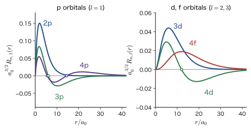
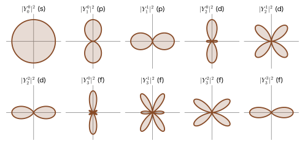
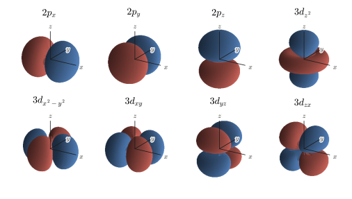
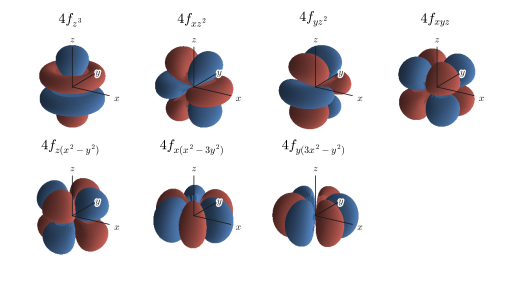

Chapter 16The Hydrogen Atom (2) — Orbital Formulas and Shapes
The color of the cathode material of a lithium-ion battery, the red of ruby, the strength of a neodymium magnet, the fact that silicon is a semiconductor—each of these phenomena, which determine the properties of materials, is connected to the question of which “orbital” the electrons in an atom occupy. In the previous chapter, we separated the variables in the Schrödinger equation of the hydrogen atom and solved it, obtaining the general formula for the wave function $\psi_{n,l,m}(r,\theta,\varphi)=R_{n,l}(r)\,Y_l^m(\theta,\varphi)$ and the energy $E_n$. This chapter is an “orbital picture book”: starting from that general formula, we write down the concrete wave functions one by one and examine their shapes.
In classical mechanics, a body subject to an attractive force proportional to $1/r^2$ traces out an elliptical orbit (AD 03, “Introductory University Physics,” Chapter 8, Section 8.2). For an electron in quantum mechanics, the “curve of a trajectory,” along which the position can be followed as a function of time, has no meaning. Instead, there is the wave function of a stationary state specified by three quantum numbers $(n,l,m)$, and $\abs{\psi}^2$ gives the probability density of finding the electron. The name “orbital” was coined to resemble “orbit,” and it refers to this wave function itself. The meaning of the quantum numbers becomes clear when we count the number of nodes of the wave (the places where $\psi=0$). For a standing wave on a string, each additional node raises the frequency (and therefore the energy) (AD 03, Chapter 11, Section 11.7). The same is true for the hydrogen atom: $n-1$ is the total number of nodes, counting the spherical nodes together with the planar and conical nodes, $l$ is the number of nodes in the angular directions, and $m$ describes the direction of rotation about the $z$ axis. In this chapter, we line up the wave functions from 1s to 4f, paying attention to the number of nodes and the change in shape.
In the second half, we show that these wave functions are mutually orthogonal, and that this orthogonality determines the selection rule that tells us which state can be reached from which state by light. Orthogonality is the most practical property in quantum mechanics: it is used every time in every calculation from Part V onward, such as the variational principle, perturbation theory, and the expansions of molecular orbitals and bands. We also point out connections to materials science as they arise, such as the fact that only s orbitals have a nonzero density at the position of the atomic nucleus (Mössbauer spectroscopy and the hyperfine interaction), the orientation properties of p and d orbitals (the directionality of covalent bonds and the crystal field), and the 4f orbitals (the light emission of the lanthanides).
- Be able to count the K, L, M, and N shells and the s, p, d, and f orbitals from the ranges of the quantum numbers $l\le n-1$ and $\abs{m}\le l$ ($n^2$ orbitals in the $n$th shell), and to explain that there are $n-l-1$ radial nodes and $l$ angular nodes
- Be able to derive $R_{n,l}(r)$ and $\psi_{n,l,m}$ for 1s, 2s, 3s, 2p, 3p, 3d, and 4f from the general formula without skipping any lines (2s is calculated from the general formula), and to understand the relation between the standard form that is positive at the origin and the expressions written with the old convention for the Laguerre polynomials (which differ by an overall factor of $-1$)
- Be able to read and write the table of wave functions of hydrogen-like ions with nuclear charge $Ze_0$ ($\rho=2Zr/(na_0)$), and to explain the shrinkage by the factor $Z$ ($a_0\to a_0/Z$) and $E_n\propto Z^2$
- Be able to construct the real orbitals ($p_x,p_y,p_z,d_{z^2},d_{x^2-y^2},d_{xy},d_{yz},d_{zx}$ and the f orbitals) from the complex $Y_l^m$ with attention to the Condon–Shortley phase, and to convert them to Cartesian form; and to know that real orbitals are not eigenfunctions of $\hat{L}_z$
- Be able to prove the three orthogonality relations (for the radial part, the angular part, and the azimuthal-angle part), and to state why two orbitals are orthogonal in terms of which of $n,l,m$ differ
- Be able to derive the electric dipole selection rules $\Delta l=\pm1$ and $\Delta m=0,\pm1$, to calculate $\langle 2p_0|z|1s\rangle=\dfrac{128\sqrt2}{243}a_0$ and $\langle 2s|z|2p_0\rangle=-3a_0$, and to explain why 2s is metastable
- Understand the nodal angle $54.74^\circ$ of $d_{z^2}$ (the magic angle) and its relation to magic-angle spinning in solid-state NMR
Source notes: Yasuhide Mochizuki, “Physics Notes: Quantum Mechanics 2,” pp. 45–52, and a supplementary page of the same notes (the table of hydrogen-atom wave functions).
16.1 Quantum Numbers and Orbital Names — Summary of the General Solution and the Number of Nodes
16.1.1 Summary of the previous chapter's results — eigenfunctions of hydrogen-like atoms
In the previous chapter we solved the Schrödinger equation for one electron (mass $m_{\mathrm e}$, charge $-e_0$) moving around an atomic nucleus (charge $+Ze_0$; since the nucleus is much heavier than the electron, we regard it as fixed). This book denotes the elementary charge by $e_0$ (the same quantity as $e$ in AD 03). $Z=1$ is the hydrogen atom, $Z=2$ is $\mathrm{He^+}$, and $Z=3$ is $\mathrm{Li^{2+}}$ (since each is an ion with just one electron, we call them collectively hydrogen-like atoms). The equation is
\begin{equation} -\frac{\hbar^2}{2m_{\mathrm e}}\nabla^2\psi-\frac{Ze_0^2}{4\pi\varepsilon_0\,r}\,\psi=E\,\psi \label{eq:16-tise} \end{equation}The coefficient of the second term on the right-hand side comes from the Coulomb potential between point charges, $V(r)=-Ze_0^2/(4\pi\varepsilon_0r)$ (AD 03, Chapter 35, Section 35.1 (in Japanese)). Separating variables in polar coordinates $(r,\theta,\varphi)$, the wave function becomes a product of a radial part $R_{n,l}(r)$ and an angular part $Y_l^m(\theta,\varphi)$. We summarize the result below. In this chapter we start from these expressions and investigate the concrete forms.
Formula 16.1: Eigenfunctions and energies of hydrogen-like atoms
The bound states ($E\lt0$) of Eq. \eqref{eq:16-tise} are specified by the three quantum numbers $n,l,m$:
\begin{equation} \psi_{n,l,m}(r,\theta,\varphi)=R_{n,l}(r)\,Y_l^m(\theta,\varphi),\qquad \begin{cases} n=1,2,3,\dots & \text{(principal quantum number)}\\ l=0,1,\dots,n-1 & \text{(azimuthal quantum number)}\\ m=-l,-l+1,\dots,l & \text{(magnetic quantum number)} \end{cases} \label{eq:16-psi} \end{equation}The energy is determined by $n$ alone; written in the $h$ form and the $\hbar$ form, it is
\begin{equation} E_n=-\frac{m_{\mathrm e}e_0^4}{8\varepsilon_0^2h^2}\frac{Z^2}{n^2}=-\frac{m_{\mathrm e}e_0^4}{2(4\pi\varepsilon_0)^2\hbar^2}\frac{Z^2}{n^2}=-\frac{\hbar^2}{2m_{\mathrm e}a_0^2}\frac{Z^2}{n^2}\approx-13.6\ \mathrm{eV}\times\frac{Z^2}{n^2} \label{eq:16-En} \end{equation}where $a_0$ is the Bohr radius
\begin{equation} a_0=\frac{4\pi\varepsilon_0\hbar^2}{m_{\mathrm e}e_0^2}=5.291\,772\times10^{-11}\ \mathrm{m}\approx0.529\ \text{Å} \label{eq:16-a0} \end{equation}The last equality in Eq. \eqref{eq:16-En} follows by substituting Eq. \eqref{eq:16-a0} into $\dfrac{\hbar^2}{2m_{\mathrm e}a_0^2}$, which gives $\dfrac{\hbar^2}{2m_{\mathrm e}}\cdot\dfrac{m_{\mathrm e}^2e_0^4}{(4\pi\varepsilon_0)^2\hbar^4}=\dfrac{m_{\mathrm e}e_0^4}{2(4\pi\varepsilon_0)^2\hbar^2}$. Let us also check the dimensions. $\hbar^2/(m_{\mathrm e}a_0^2)$ is $[\mathrm{J^2\,s^2}]/[\mathrm{kg\,m^2}]=[\mathrm{J}]$, which is indeed the dimension of energy. The numerical value is $\dfrac{\hbar^2}{2m_{\mathrm e}a_0^2}=13.6057\ \mathrm{eV}$ (the Rydberg energy).
The concrete expressions for the radial part $R_{n,l}(r)$ and the angular part $Y_l^m$ are as follows. We introduce $\rho$ as a new symbol.
\begin{equation} \rho\equiv\frac{2Zr}{n\,a_0} \label{eq:16-rho} \end{equation}$\rho$ is “the dimensionless distance measured in units of half the size $na_0/Z$ of the $n$th shell”; the larger $n$ is, the smaller $\rho$ is for the same $r$.
Formula 16.2: Radial function $R_{n,l}(r)$ (standard form)
The standard form, which is positive near the origin, is written, using the associated Laguerre polynomial $L_{p}^{(\alpha)}(\rho)$ of the modern convention (University Mathematics, Chapter 41, Section 41.5; the same as scipy's genlaguerre), as
Writing the same function down as a sum in terms of Laguerre polynomials, we have
\begin{equation} R_{n,l}(r)=c_{n,l}\,\frac{e^{-\rho/2}}{r}\sum_{k=2l+1}^{n+l}\frac{(-1)^{k+1}\,\{(n+l)!\}^2}{(k-2l-1)!\;k!\;(n+l-k)!}\,\rho^{\,k-l},\qquad c_{n,l}=\sqrt{\frac{Z}{a_0}\,\frac{(n-l-1)!}{n^2\{(n+l)!\}^3}} \label{eq:16-Rsum} \end{equation}The normalization is $\displaystyle\int_0^\infty R_{n,l}^2\,r^2\,\dd r=1$. We have denoted the normalization constant of the sum form by $c_{n,l}$. This is the same quantity as the $c_{nl}$ attached in Chapter 15 to the sum form of the old convention (the sign has been absorbed into the $(-1)^{k+1}$ of the sum), and it is a different quantity from the $N_{nl}$ attached in Chapter 15 to the standard (Laguerre) form (the relation between $N_{nl}$ and $c_{nl}$ is given in Chapter 15, Section 15.7.3).
The sum in Eq. \eqref{eq:16-Rsum}, starting from the terms with small $k$, contains $\rho^{l+1},\rho^{l+2},\dots,\rho^{n}$ in order ($k-l$ runs from $l+1$ to $n$). The whole sum is multiplied by $1/r$, so the behavior as $r\to0$ is determined by the lowest-order term, and $R_{n,l}\propto\rho^{l+1}/r\propto r^{l}$. This is a manifestation of the fact that the centrifugal potential $\hbar^2l(l+1)/(2m_{\mathrm e}r^2)$ keeps an electron with $l\ge1$ away from the vicinity of the atomic nucleus.
Caution: Two conventions for the Laguerre polynomials and the sign
There are two conventions for the Laguerre polynomials. In the previous chapter (Chapter 15, Section 15.7) we used the old convention
\begin{equation} L_m^{n}(x)=\sum_{k=n}^{m}\frac{(-1)^k\,(m!)^2}{(k-n)!\;k!\;(m-k)!}\,x^{k-n} \label{eq:16-Lold} \end{equation}as the natural form obtained by constructing the series solution directly. Its relation to the modern convention $L_{m-n}^{(n)}(x)$ (restating the relation shown in Chapter 15, Section 15.7) is $L_m^{n}(x)=(-1)^n\,m!\,L_{m-n}^{(n)}(x)$, and in the present case ($n\to2l+1$, $m\to n+l$) it reads
\begin{equation} L_{n+l}^{2l+1}(x)\ \text{(old)}=(-1)^{2l+1}(n+l)!\,L_{n-l-1}^{(2l+1)}(x)\ \text{(modern)}=-(n+l)!\,L_{n-l-1}^{(2l+1)}(x) \label{eq:16-Lrel} \end{equation}The old-convention $L_{n+l}^{2l+1}$ is always negative at the origin, so the radial function written with it is the standard form of Eqs. \eqref{eq:16-Rnl} and \eqref{eq:16-Rsum} multiplied overall by $-1$. Concretely, with $\kappa=\dfrac{Z}{na_0}$, the old-convention form is
\begin{equation} R_{n,l}^{(\text{old})}(r)=\sqrt{\frac{\kappa\,(n-l-1)!}{n\{(n+l)!\}^3}}\;\frac{e^{-\kappa r}}{r}\,(2\kappa r)^{l+1}\,L_{n+l}^{2l+1}(2\kappa r)=-R_{n,l}(r) \label{eq:16-Rold} \end{equation}Here $2\kappa r=\rho$, and using Eq. \eqref{eq:16-Lrel} and Eq. \eqref{eq:16-Rnl} gives $-R_{n,l}$ (the calculation that derives the normalization constant from this form is in Section 16.7.2). The physical content (the probability density and expectation values) does not change under $\psi\to-\psi$, but unless the signs are made to agree, confusion arises when one compares with tables of real orbitals or with the formulas in other textbooks. From here on in this chapter, we use the standard form with $R_{n,l}\gt0$ near the origin. A result calculated with the sum form of the old convention is converted to the standard form by reversing its sign.
In the convention that includes the Condon–Shortley phase (Chapter 14), the spherical harmonics are
\begin{equation} Y_l^m(\theta,\varphi)=(-1)^{\frac{m+\abs{m}}{2}}\sqrt{\frac{2l+1}{4\pi}\,\frac{(l-\abs{m})!}{(l+\abs{m})!}}\;\sin^{\abs{m}}\theta\;\frac{1}{2^l\,l!}\,\frac{\dd^{\,l+\abs{m}}}{\dd(\cos\theta)^{l+\abs{m}}}\bigl(\cos^2\theta-1\bigr)^{l}\;e^{im\varphi} \label{eq:16-Y} \end{equation}The factor $(-1)^{(m+\abs{m})/2}$ equals $(-1)^m$ when $m\ge0$ and $1$ when $m\lt0$. The relation $\sin^{\abs{m}}\theta=(1-\cos^2\theta)^{\abs{m}/2}$ holds because $\sin\theta\ge0$ for $0\le\theta\le\pi$. Using Rodrigues' formula (University Mathematics, Chapter 40, Section 40.5) $P_l(x)=\dfrac{1}{2^l\,l!}\dfrac{\dd^l}{\dd x^l}(x^2-1)^l$, together with the associated Legendre function $P_l^{\abs{m}}(x)=(1-x^2)^{\abs{m}/2}\dfrac{\dd^{\abs{m}}P_l(x)}{\dd x^{\abs{m}}}$, we can write $Y_l^m=(-1)^{(m+\abs{m})/2}\sqrt{\dfrac{2l+1}{4\pi}\dfrac{(l-\abs{m})!}{(l+\abs{m})!}}\,P_l^{\abs{m}}(\cos\theta)\,e^{im\varphi}$. Negative $m$ is connected to the corresponding positive value through $Y_l^{-m}=(-1)^m\,(Y_l^m)^*$.
16.1.2 Quantum numbers and the names of shells and orbitals
Of the three quantum numbers in Eq. \eqref{eq:16-psi}, $n$ and $l$ have historical names.
Definition 16.1: Shells, subshells, and orbitals
(1) A collection of states with the same principal quantum number $n$ is called a shell, and the shells $n=1,2,3,4,\dots$ are called, in order, the K shell, L shell, M shell, N shell, ….
(2) A collection of states with the same $n$ and $l$ is called a subshell, and the subshells $l=0,1,2,3,\dots$ are called, in order, s, p, d, f, …. Combined with the value of $n$, they are written as “2p” for $n=2,l=1$ and “3d” for $n=3,l=2$.
(3) A single wave function $\psi_{n,l,m}$ determined by a set of three quantum numbers $(n,l,m)$ is called an orbital.
The names K, L, M, … derive from the names given to the series of characteristic X-rays. The letters s, p, d, f are the initial letters of the English words sharp, principal, diffuse, and fundamental, which describe how the spectral lines of the alkali metals look, and these names were in use even before quantum mechanics existed. For $l=4$ onward, the letters continue in alphabetical order after f: g, h, i, ….
The values that the three quantum numbers can take are restricted. As we saw in the previous chapter, $l\le n-1$ is the condition for the series in the radial direction to terminate after a finite number of terms (to become a polynomial), and $\abs{m}\le l$ is the condition for the angular equation to have a solution that is finite at $\theta=0,\pi$.
\begin{equation} n=1,2,3,\dots,\qquad l\le n-1,\qquad \abs{m}\le l \label{eq:16-range} \end{equation}Counting them gives Table 16.1.
| $n$ | Shell | Possible values of $l$ | Subshells (number of $m$ values for each $l$, $2l+1$) | Number of orbitals $n^2$ | Number of electrons $2n^2$ |
|---|---|---|---|---|---|
| 1 | K | 0 | 1s (1) | 1 | 2 |
| 2 | L | 0, 1 | 2s (1), 2p (3) | 4 | 8 |
| 3 | M | 0, 1, 2 | 3s (1), 3p (3), 3d (5) | 9 | 18 |
| 4 | N | 0, 1, 2, 3 | 4s (1), 4p (3), 4d (5), 4f (7) | 16 | 32 |
The number of orbitals in the $n$th shell is $\sum_{l=0}^{n-1}(2l+1)=n(n-1)+n=n^2$, obtained by adding up $2l+1$ for $l=0,1,\dots,n-1$ (the sum of an arithmetic progression with first term 1 and common difference 2). An orbital can hold up to two electrons, with different spin orientations (the Pauli exclusion principle; Part VII), so the $n$th shell holds at most $2n^2$ electrons, that is, $2,8,18,32,\dots$ electrons. These numbers are related to the row lengths of the periodic table ($2,8,8,18,18,32,\dots$), but in many-electron atoms the energy depends not only on $n$ but also on $l$, so the row lengths are not simply equal to $2n^2$ (Chapter 18).
Caution: There is no p orbital in the K shell
For $n=1$, the condition $l\le n-1=0$ allows only $l=0$. Therefore the K shell contains only the s orbital (1s), and there is no orbital called “1p.” Similarly, the L shell ($n=2$) has only s and p, with no 2d, and the M shell ($n=3$) has no 3f. It helps to remember: “The $n$th shell has subshells from $l=0$ to $l=n-1$.”
16.1.3 Number of nodes — radial nodes $n-l-1$ and angular nodes $l$
The easiest way to grasp the rough shape of an orbital is to count the places where the wave function vanishes (its nodes). In a one-dimensional box, $\psi_n$ has $n-1$ nodes, and the more nodes there are, the shorter the wavelength and the higher the kinetic energy (Chapter 10). In three dimensions, the nodes are not points but “surfaces.” Since $\psi_{n,l,m}=R_{n,l}(r)\,Y_l^m(\theta,\varphi)$ is a product, both the spheres on which $R_{n,l}=0$ and all the surfaces on which $Y_l^m=0$ are nodes.
Theorem 16.1: Number of nodes
The orbital $\psi_{n,l,m}$ has the following nodes ($r=0$ and $r=\infty$ are not counted).
(1) Radial nodes: there are $n-l-1$ spheres ($r=$ constant) on which $R_{n,l}(r)=0$.
(2) Angular nodes: the nodes of the real form of $Y_l^m$ (Section 16.6) are surfaces through the origin (planes or conical surfaces), $l$ in total. Of these, $l-\abs{m}$ are conical surfaces ($\cos\theta=$ constant; for $\theta=\pi/2$ it is the $xy$ plane) and $\abs{m}$ are planes containing the $z$ axis.
Therefore the total number of nodes is $(n-l-1)+l=n-1$.
Proof
(1) In Eq. \eqref{eq:16-Rnl}, $e^{-\rho/2}>0$, and $\rho^l$ is nonzero for $r>0$, so the zeros of $R_{n,l}$ are the solutions of $L_{n-l-1}^{(2l+1)}(\rho)=0$. This is a polynomial of degree $n-l-1$ in $\rho$, so it has at most $n-l-1$ zeros. By the general property that all zeros of an orthogonal polynomial are real and simple (no multiple roots) and lie inside the interval on which the weight function is defined (here $\rho\gt0$)—for the case of the Laguerre polynomials, see University Mathematics, Chapter 41, Section 41.4—there are exactly $n-l-1$ positive zeros. Since $\rho\propto r$, this means that $R_{n,l}=0$ has $n-l-1$ solutions with $r>0$.
(2) The real angular functions have the form $P_l^{\abs{m}}(\cos\theta)\times\{\cos\abs{m}\varphi\ \text{or}\ \sin\abs{m}\varphi\}$. Here $P_l^{\abs{m}}(x)=(1-x^2)^{\abs{m}/2}\,\dfrac{\dd^{\abs{m}}P_l}{\dd x^{\abs{m}}}$, and $(1-x^2)^{\abs{m}/2}$ does not vanish for $-1\lt x\lt1$. $P_l$ is the $l$th derivative of $(x^2-1)^l$ (Rodrigues' formula); $(x^2-1)^l$ vanishes at $x=\pm1$ and is continuous in between, so by Rolle's theorem its derivative has a zero in $-1\lt x\lt1$. Each time we differentiate, the zeros decrease by one at a time, so the number of zeros of the $k$th derivative inside the interval is $k$ ($k\le l$). Hence $P_l$ has $l$ zeros inside the interval, and $\dfrac{\dd^{\abs{m}}P_l}{\dd x^{\abs{m}}}$ has $l-\abs{m}$ zeros inside the interval. Each zero $x=x_j$ corresponds to the conical surface $\cos\theta=x_j$. The azimuthal factor has $\abs{m}$ zeros in the range $\varphi\in[0,\pi)$, and these correspond to planes containing the $z$ axis. The total is $(l-\abs{m})+\abs{m}=l$.
∎
Summarizing, we obtain Table 16.2. An s orbital has no angular nodes and is spherically symmetric; a p orbital has one planar node, a d orbital has two, and an f orbital has three angular nodes. The number of radial nodes, $n-l-1$, increases by one each time $n$ increases by one for the same $l$.
| Orbital | $n$ | $l$ | Radial nodes $n-l-1$ | Angular nodes $l$ | Total nodes $n-1$ |
|---|---|---|---|---|---|
| 1s | 1 | 0 | 0 | 0 | 0 |
| 2s | 2 | 0 | 1 | 0 | 1 |
| 2p | 2 | 1 | 0 | 1 | 1 |
| 3s | 3 | 0 | 2 | 0 | 2 |
| 3p | 3 | 1 | 1 | 1 | 2 |
| 3d | 3 | 2 | 0 | 2 | 2 |
| 4s | 4 | 0 | 3 | 0 | 3 |
| 4p | 4 | 1 | 2 | 1 | 3 |
| 4d | 4 | 2 | 1 | 2 | 3 |
| 4f | 4 | 3 | 0 | 3 | 3 |
Note here that the energy level in Eq. \eqref{eq:16-En} depends only on $n$; that is, it is determined only by the total number of nodes, $n-1$. The 2s and 2p orbitals with the same $n$ have equal energies because the total number of nodes is the same (one), even though the breakdown into radial nodes and angular nodes differs. The same holds for 3s, 3p, and 3d. This is a special feature of the $1/r$ Coulomb potential, and it amounts to an accidental degeneracy, “degenerate in $l$” (the energy of the hydrogen atom is $n^2$-fold degenerate; this degeneracy beyond $l$ is a manifestation of a higher symmetry than the ordinary rotational symmetry that the Coulomb potential possesses). In a many-electron atom, this degeneracy is lifted by shielding by the other electrons, and the energies of 2s and 2p come to differ (Chapter 18).
Example 16.1: Orbitals and nodes of the $n=4$ shell
(1) What orbitals are there in the N shell ($n=4$), and how many? (2) Find the number and the positions of the radial nodes of the 4s orbital from the values of $y$ at which $R_{4,0}(r)\propto192-144\,y+24\,y^2-y^3$ ($y=r/a_0$) vanishes. (3) Does the 4f orbital have a radial node?
Solution. (1) We have $l=0,1,2,3$, and the numbers of values of $m$ are $1,3,5,7$, respectively. Hence there are 4s (one), 4p (three), 4d (five), and 4f (seven) orbitals, a total of $1+3+5+7=16=4^2$. Up to $2\times16=32$ electrons can be accommodated.
(2) The number of radial nodes is $n-l-1=4-0-1=3$. Their positions are the positive roots of the cubic equation $f(y)=192-144y+24y^2-y^3=0$. Since $f(0)=192>0$, $f(1)=192-144+24-1=71>0$, and $f(2)=192-288+96-8=-8\lt0$, the first zero lies in $1\lt y\lt2$. Similarly, $f(6)=192-864+864-216=-24\lt0$ and $f(7)=192-1008+1176-343=17>0$ put the second zero in $6\lt y\lt7$, and $f(15)=192-2160+5400-3375=57>0$ and $f(16)=192-2304+6144-4096=-64\lt0$ put the third zero in $15\lt y\lt16$. A cubic equation has at most three roots, so these are all of them. Solving numerically to high accuracy (by repeatedly bisecting the interval, or by Newton's method), we obtain
$$ y=1.872,\qquad 6.611,\qquad 15.518 $$that is, $R_{4,0}=0$ on the three spheres $r\approx1.87\,a_0,\ 6.61\,a_0,\ 15.5\,a_0$.
(3) For 4f, $n-l-1=4-3-1=0$. There are no radial nodes, and all the nodes are angular nodes (three). Indeed, $R_{4,3}\propto r^3e^{-r/4a_0}$ does not vanish for $r>0$.
16.2 s Orbitals — 1s, 2s, 3s
16.2.1 s orbitals — orbitals with azimuthal quantum number $l=0$
An s orbital is an orbital with azimuthal quantum number $l=0$ (and hence only $m=0$). The spherical harmonic obtained by substituting $l=m=0$ into Eq. \eqref{eq:16-Y} (the differentiation is of order 0, and $(\cos^2\theta-1)^0=1$) is
\begin{equation} Y_0^0(\theta,\varphi)=\sqrt{\frac{1}{4\pi}} \label{eq:16-Y00} \end{equation}which is a constant independent of the angle. The value $4\pi$ is the surface area of the unit sphere, and $\int\abs{Y_0^0}^2\sin\theta\,\dd\theta\,\dd\varphi=\dfrac{1}{4\pi}\cdot4\pi=1$ shows that it is normalized. Therefore an s orbital is spherically symmetric, and $\psi_{n,0,0}=R_{n,0}(r)/\sqrt{4\pi}$. Below, we derive the s orbitals of the K shell ($n=1$), the L shell ($n=2$), and the M shell ($n=3$) in turn from Eq. \eqref{eq:16-Rsum} of Formula 16.2 ($Z=1$).
16.2.2 The s orbital of the K shell: 1s ($n=1,\ l=0,\ m=0$)
Derivation: 1s orbital
Substitute $n=1,\ l=0,\ Z=1$ into Eq. \eqref{eq:16-Rsum}. First, the normalization constant is
$$ c_{1,0}=\sqrt{\frac{1}{a_0}\cdot\frac{(1-0-1)!}{1^2\,\{(1+0)!\}^3}}=\sqrt{\frac{1}{a_0}}\qquad(0!=1,\ 1!=1) $$The variable is $\rho=\dfrac{2r}{1\cdot a_0}=\dfrac{2r}{a_0}$. The sum has only one term, from $k=2l+1=1$ to $n+l=1$, and
$$ \sum_{k=1}^{1}\frac{(-1)^{k+1}\{1!\}^2}{(k-1)!\,k!\,(1-k)!}\,\rho^{k}=\frac{(-1)^{2}\cdot1}{0!\cdot1!\cdot0!}\,\rho=\rho=\frac{2r}{a_0} $$Therefore,
$$ R_{1,0}(r)=\sqrt{\frac{1}{a_0}}\;\frac{e^{-r/a_0}}{r}\cdot\frac{2r}{a_0}=2\sqrt{\frac{1}{a_0^3}}\;e^{-r/a_0} $$(we used $\rho/2=r/a_0$ in the exponent, and $1/r$ and $r$ cancelled). In the sum form of the old convention, $(-1)^k=-1$, so the whole expression is multiplied by $-1$ and we would obtain $-2\sqrt{1/a_0^3}\,e^{-r/a_0}$; in the standard form it is positive. Multiplying this by Eq. \eqref{eq:16-Y00}, we get
\begin{equation} R_{1,0}(r)=2\,a_0^{-3/2}\,e^{-r/a_0},\qquad \psi_{1,0,0}(r,\theta,\varphi)=\frac{1}{\sqrt{\pi a_0^3}}\,e^{-r/a_0} \label{eq:16-1s} \end{equation}(here $2\cdot\dfrac{1}{\sqrt{4\pi}}=\dfrac{1}{\sqrt\pi}$).
∎
The 1s orbital has no nodes and decreases monotonically with $r$. Let us check the normalization. $\displaystyle\int_0^\infty R_{1,0}^2\,r^2\,\dd r=\frac{4}{a_0^3}\int_0^\infty r^2e^{-2r/a_0}\,\dd r=\frac{4}{a_0^3}\cdot\frac{2!}{(2/a_0)^3}=\frac{4}{a_0^3}\cdot\frac{2a_0^3}{8}=1$ (we used the formula $\int_0^\infty r^ke^{-\beta r}\dd r=k!/\beta^{k+1}$).
16.2.3 The s orbital of the L shell: 2s ($n=2,\ l=0,\ m=0$) — derived from the general formula
As the first example derived from the general formula, we compute 2s carefully, line by line.
Derivation: 2s orbital (from Eq. \eqref{eq:16-Rsum})
[1] The normalization constant. Substitute $n=2,\ l=0$ into $c_{n,l}$. Since $(n-l-1)!=1!=1$, $n^2=4$, and $\{(n+l)!\}^3=(2!)^3=8$,
$$ c_{2,0}=\sqrt{\frac{1}{a_0}\cdot\frac{1}{4\cdot8}}=\sqrt{\frac{1}{32\,a_0}} $$[2] The variable and the sum. $\rho=\dfrac{2r}{2a_0}=\dfrac{r}{a_0}$. The sum has two terms, $k=1,2$, and $(n+l)!=2!=2$, $\{(n+l)!\}^2=4$.
$$ \begin{aligned} k=1:&\quad\frac{(-1)^{2}\cdot4}{(1-1)!\,1!\,(2-1)!}\,\rho^{1}=\frac{4}{0!\cdot1!\cdot1!}\,\rho=4\rho,\\[1mm] k=2:&\quad\frac{(-1)^{3}\cdot4}{(2-1)!\,2!\,(2-2)!}\,\rho^{2}=-\frac{4}{1!\cdot2!\cdot0!}\,\rho^{2}=-2\rho^{2} \end{aligned} $$Hence the sum is $4\rho-2\rho^2=2\rho\,(2-\rho)$.
[3] Assembly. Since $e^{-\rho/2}=e^{-r/2a_0}$ and $\rho/r=1/a_0$,
$$ R_{2,0}(r)=\sqrt{\frac{1}{32a_0}}\;\frac{e^{-r/2a_0}}{r}\cdot2\rho\,(2-\rho) =\sqrt{\frac{1}{32a_0}}\cdot\frac{2}{a_0}\Bigl(2-\frac{r}{a_0}\Bigr)e^{-r/2a_0} $$Since $\sqrt{1/(32a_0)}=\dfrac{1}{4\sqrt2\,a_0^{1/2}}$, the coefficient is $\dfrac{2}{4\sqrt2\,a_0^{3/2}}=\dfrac{1}{2\sqrt2}\,a_0^{-3/2}$, and
\begin{equation} R_{2,0}(r)=\frac{1}{2\sqrt2}\,a_0^{-3/2}\Bigl(2-\frac{r}{a_0}\Bigr)e^{-r/2a_0}=\frac{1}{2a_0^2}\sqrt{\frac{1}{2a_0}}\,(2a_0-r)\,e^{-r/2a_0} \label{eq:16-R20} \end{equation}(in the second equality, the powers of $a_0$ were combined using $2-r/a_0=(2a_0-r)/a_0$).
[4] Check with the modern convention. Substituting $n=2,\ l=0$ into Eq. \eqref{eq:16-Rnl}, we get $\left(\dfrac{2}{2a_0}\right)^3\dfrac{1!}{2\cdot2\cdot2!}=\dfrac{1}{8a_0^3}$, and for the Laguerre polynomial, from $L_{p}^{(\alpha)}(\rho)=\displaystyle\sum_{j=0}^{p}(-1)^j\binom{p+\alpha}{p-j}\dfrac{\rho^j}{j!}$ we have $L_1^{(1)}(\rho)=\binom{2}{1}-\binom{2}{0}\rho=2-\rho$, so
$$ R_{2,0}(r)=\sqrt{\frac{1}{8a_0^3}}\;e^{-\rho/2}\,(2-\rho)=\frac{1}{2\sqrt2}\,a_0^{-3/2}\Bigl(2-\frac{r}{a_0}\Bigr)e^{-r/2a_0} $$which agrees with Eq. \eqref{eq:16-R20}.
[5] Multiply by the angular part. Multiplying by $Y_0^0=1/\sqrt{4\pi}$, we get
\begin{equation} \psi_{2,0,0}(r,\theta,\varphi)=\frac{1}{4\sqrt{2\pi a_0^3}}\Bigl(2-\frac{r}{a_0}\Bigr)e^{-r/2a_0}=\frac{1}{2a_0^2}\sqrt{\frac{1}{2\pi a_0}}\Bigl(a_0-\frac{r}{2}\Bigr)e^{-r/2a_0} \label{eq:16-2s} \end{equation}(here $\dfrac{1}{2\sqrt2}\cdot\dfrac{1}{2\sqrt\pi}=\dfrac{1}{4\sqrt{2\pi}}$; the second equality follows from $2-r/a_0=2(a_0-r/2)/a_0$).
∎
The radial function of 2s changes sign at $r=2a_0$: it is positive for $r\lt2a_0$ and negative for $r\gt2a_0$. This sphere is the radial node (Figure 16.2(a)). The fact that the sign of the wave function is opposite inside and outside is the key to the orthogonality that we will see in the following sections.
16.2.4 The s orbital of the M shell: 3s ($n=3,\ l=0,\ m=0$)
Derivation: 3s orbital and $\psi_{3,0,0}$
For $n=3,\ l=0$: $(n-l-1)!=2!=2$, $n^2=9$, $(n+l)!=3!=6$, $\{(n+l)!\}^3=216$, $\{(n+l)!\}^2=36$. The normalization constant is
$$ c_{3,0}=\sqrt{\frac{1}{a_0}\cdot\frac{2}{9\cdot216}}=\sqrt{\frac{1}{972\,a_0}}=\frac{1}{18\sqrt3\,a_0^{1/2}}\qquad(972=324\cdot3=18^2\cdot3) $$The variable is $\rho=\dfrac{2r}{3a_0}$. The sum has three terms, $k=1,2,3$:
$$ \begin{aligned} k=1:&\quad\frac{(-1)^{2}\cdot36}{0!\,1!\,2!}\rho=18\rho,\qquad k=2:\quad\frac{(-1)^{3}\cdot36}{1!\,2!\,1!}\rho^2=-18\rho^2,\\ k=3:&\quad\frac{(-1)^{4}\cdot36}{2!\,3!\,0!}\rho^3=3\rho^3 \end{aligned} $$The total is $18\rho-18\rho^2+3\rho^3=3\rho\,(6-6\rho+\rho^2)$. Using $\rho/r=2/(3a_0)$,
$$ R_{3,0}(r)=c_{3,0}\,\frac{e^{-\rho/2}}{r}\cdot3\rho\,(6-6\rho+\rho^2)=\frac{1}{18\sqrt3\,a_0^{1/2}}\cdot\frac{2}{a_0}\,(6-6\rho+\rho^2)\,e^{-\rho/2}=\frac{1}{9\sqrt3}\,a_0^{-3/2}\,(6-6\rho+\rho^2)\,e^{-\rho/2} $$Now substituting $\rho=\dfrac{2r}{3a_0}$ and writing the result in terms of $y=r/a_0$, we have $6-6\rho+\rho^2=6-4y+\dfrac49y^2=\dfrac29\,(27-18y+2y^2)$, so
\begin{equation} R_{3,0}(r)=\frac{2}{81\sqrt3}\,a_0^{-3/2}\Bigl(27-\frac{18r}{a_0}+\frac{2r^2}{a_0^2}\Bigr)e^{-r/3a_0}=\frac{4}{81a_0^3}\sqrt{\frac{1}{3a_0}}\Bigl(r^2-9a_0r+\frac{27}{2}a_0^2\Bigr)e^{-r/3a_0} \label{eq:16-R30} \end{equation}(the second equality follows from $\dfrac{2}{81\sqrt3}\cdot2=\dfrac{4}{81\sqrt3}$ and $27-18y+2y^2=2\bigl(y^2-9y+\tfrac{27}{2}\bigr)$). Finally, multiplying by $Y_0^0=1/\sqrt{4\pi}$, we get
\begin{equation} \psi_{3,0,0}(r,\theta,\varphi)=\frac{1}{81\sqrt{3\pi a_0^3}}\Bigl(27-\frac{18r}{a_0}+\frac{2r^2}{a_0^2}\Bigr)e^{-r/3a_0} \label{eq:16-3s} \end{equation}(here $\dfrac{2}{81\sqrt3}\cdot\dfrac{1}{2\sqrt\pi}=\dfrac{1}{81\sqrt{3\pi}}$).
∎
The 3s orbital has $n-l-1=2$ radial nodes. Their positions are given by the solutions of $27-18y+2y^2=0$, $y=\dfrac{9\pm3\sqrt3}{2}=1.90,\ 7.10$ (Example 16.3).
![Graphs of the radial functions R_{n,0}(r) of the s orbitals. Four panels in two rows and two columns; from the upper left, 1s, 2s, 3s, and 4s. The horizontal axis is r divided by the Bohr radius a_0, and the vertical axis is R multiplied by a_0 to the power 3/2. The 1s function decays from 2 at the origin with no node; the 2s, 3s, and 4s functions start at the origin from 0.71, 0.38, and 0.25, respectively, and have one, two, and three radial nodes (circles). Positive parts are shaded blue and negative parts red](figs/ch16_fig16-3.svg)
16.2.5 Features of s orbitals — the density at the position of the nucleus
In Figure 16.3 we see that every s orbital has a finite value at the origin $r=0$. In contrast, an orbital with $l\ge1$ vanishes at the origin because $R_{n,l}\propto r^l$ (Section 16.3 onward). The value of an s orbital at the origin, obtained by using $L_{n-1}^{(1)}(0)=\binom{n}{n-1}=n$ in Eq. \eqref{eq:16-Rnl} ($Z=1$), is
$$ R_{n,0}(0)=\sqrt{\left(\frac{2}{na_0}\right)^3\frac{(n-1)!}{2n\,n!}}\cdot n=\sqrt{\frac{8}{n^3a_0^3}\cdot\frac{1}{2n^2}}\cdot n=\frac{2}{n^{3/2}a_0^{3/2}} $$(we used $(n-1)!/n!=1/n$). This agrees with the values $2a_0^{-3/2}$, $\dfrac{1}{\sqrt2}a_0^{-3/2}$, and $\dfrac{2}{3\sqrt3}a_0^{-3/2}$ obtained by substituting $r=0$ into Eqs. \eqref{eq:16-1s}, \eqref{eq:16-R20}, and \eqref{eq:16-R30} for $n=1,2,3$. Therefore the probability density of the electron at the position of the nucleus, including the case of nuclear charge $Ze_0$, is
\begin{equation} \abs{\psi_{n,0,0}(0)}^2=\frac{R_{n,0}(0)^2}{4\pi}=\frac{1}{\pi n^3}\left(\frac{Z}{a_0}\right)^{3} \label{eq:16-psi0} \end{equation}It increases in proportion to $Z^3$ and decreases in inverse proportion to $n^3$.
Application: The electron at the position of the nucleus — Fermi contact interaction and Mössbauer spectroscopy
The atomic nucleus is almost a point in size (of the order of $10^{-15}\ \mathrm{m}$), and only s orbitals give the electron wave function a nonzero value at the position of the nucleus (p, d, and f orbitals vanish there because of the factor $r^l$; this is due to the centrifugal force). This “electron at the position of the nucleus” determines spectroscopic properties of materials. (1) The Fermi contact interaction between the electron spin and the nuclear spin is proportional to $\abs{\psi(0)}^2$. The ground state of the hydrogen atom splits in two according to the orientations of the electron spin and the proton spin, and the 1420 MHz radio wave corresponding to this energy difference is observed as the radio emission of hydrogen in space, with a wavelength of 21 cm, because of this interaction. (2) The isomer shift in Mössbauer spectroscopy of iron and other elements is proportional to the density of s electrons at the position of the nucleus, $\abs{\psi_s(0)}^2$. The 3d electrons of Fe have no density at the position of the nucleus, but they change the densities of the 3s and 4s electrons through a change in shielding, so the isomer shift is used to distinguish the valence of Fe ($\mathrm{Fe^{2+}}$ and $\mathrm{Fe^{3+}}$). (3) The Knight shift in the NMR of metals and the hyperfine splitting in electron spin resonance (ESR) are also determined by the value of the electron spin density at the position of the nucleus (the Fermi contact term).
Example 16.2: Normalization of the 2s orbital and the probability of finding the electron inside the node
(1) Verify that $R_{2,0}$ in Eq. \eqref{eq:16-R20} satisfies $\int_0^\infty R_{2,0}^2\,r^2\,\dd r=1$. (2) Find the probability that the electron is found inside the node, $r\lt2a_0$.
Solution. Let $y=r/a_0$. Then $R_{2,0}^2r^2\,\dd r=\dfrac{1}{8}(2-y)^2e^{-y}\,y^2\,\dd y$ (since $R_{2,0}^2=\dfrac{1}{8a_0^3}(2-y)^2e^{-y}$ and $r^2\dd r=a_0^3y^2\dd y$).
(1) Since $(2-y)^2y^2=4y^2-4y^3+y^4$, using $\int_0^\infty y^ke^{-y}\dd y=k!$ we get
$$ \frac18\int_0^\infty(4y^2-4y^3+y^4)e^{-y}\dd y=\frac18\,(4\cdot2!-4\cdot3!+4!)=\frac18\,(8-24+24)=1 $$(the terms are $4\cdot2=8$, $4\cdot6=24$, and $24$). The orbital is normalized.
(2) We find the indefinite integral. Repeated integration by parts gives $\displaystyle\frac18\int(4y^2-4y^3+y^4)e^{-y}\dd y=-\Bigl(\frac{y^4}{8}+\frac{y^2}{2}+y+1\Bigr)e^{-y}+C$ (this can be checked by differentiating the right-hand side: the derivative is $\Bigl(\dfrac{y^4}{8}+\dfrac{y^2}{2}+y+1\Bigr)e^{-y}-\Bigl(\dfrac{y^3}{2}+y+1\Bigr)e^{-y}=\Bigl(\dfrac{y^4}{8}-\dfrac{y^3}{2}+\dfrac{y^2}{2}\Bigr)e^{-y}$, which agrees with the integrand $\dfrac18(4y^2-4y^3+y^4)e^{-y}$). Therefore,
$$ P(r\lt2a_0)=\Bigl[-\Bigl(\frac{y^4}{8}+\frac{y^2}{2}+y+1\Bigr)e^{-y}\Bigr]_0^{2}=1-(2+2+2+1)e^{-2}=1-7e^{-2}\approx1-0.947=0.0527 $$(at $y=2$, $\frac{16}{8}+\frac42+2+1=7$). The probability of finding the electron inside the node is about 5.3%, and the remaining 94.7% or so lies outside. The electron in the 2s orbital is mostly in the outer peak at $r\gt2a_0$, but there is also a small peak inside, near the atomic nucleus.
Example 16.3: Nodes, normalization, and the peaks of the radial probability density of the 3s orbital
(1) Find the positions of the nodes of $R_{3,0}$. (2) Verify that Eq. \eqref{eq:16-R30} is normalized. (3) Where does the radial probability density $P(r)=r^2R_{3,0}^2$ have its maxima?
Solution. (1) Solving $27-18y+2y^2=0$ gives $y=\dfrac{18\pm\sqrt{324-216}}{4}=\dfrac{18\pm\sqrt{108}}{4}=\dfrac{9\pm3\sqrt3}{2}$. Since $\sqrt3=1.7321$, $y=1.902,\ 7.098$, that is, $r=1.90\,a_0,\ 7.10\,a_0$.
(2) We have $R_{3,0}^2r^2\,\dd r=\dfrac{4}{6561\cdot3}\,(27-18y+2y^2)^2\,y^2e^{-2y/3}\,\dd y$ (the square of $\dfrac{2}{81\sqrt3}$ is $\dfrac{4}{6561\cdot3}=\dfrac{4}{19683}$). Also, $(27-18y+2y^2)^2=729-972y+432y^2-72y^3+4y^4$ (the coefficients are $27^2=729$, $2\cdot27\cdot(-18)=-972$, $(-18)^2+2\cdot27\cdot2=324+108=432$, $2\cdot(-18)\cdot2=-72$, and $2^2=4$). Using $\int_0^\infty y^ke^{-2y/3}\dd y=k!\left(\dfrac32\right)^{k+1}$, we obtain
$$ \int_0^\infty(\cdots)\,y^2e^{-2y/3}\dd y=729\cdot2!\Bigl(\tfrac32\Bigr)^3-972\cdot3!\Bigl(\tfrac32\Bigr)^4+432\cdot4!\Bigl(\tfrac32\Bigr)^5-72\cdot5!\Bigl(\tfrac32\Bigr)^6+4\cdot6!\Bigl(\tfrac32\Bigr)^7 $$The individual terms are $4920.75,\ 29524.5,\ 78732,\ 98415,\ 49207.5$, and adding them with alternating signs gives $4920.75-29524.5+78732-98415+49207.5=4920.75=\dfrac{19683}{4}$. Multiplying this by $\dfrac{4}{19683}$ gives 1.
(3) Letting $y=r/a_0$ and $g(y)=27-18y+2y^2$, we have $a_0P(r)=a_0r^2R_{3,0}^2=\dfrac{4}{19683}\,y^2g(y)^2\,e^{-2y/3}$. The function $P$ has valleys that go down to 0 at $y=\dfrac{9\pm3\sqrt3}{2}$ ($g=0$, the nodes), and peaks form between the valleys and outside them. The positions of the peaks (maxima) are determined by $\dfrac{\dd P}{\dd y}=0$. Taking the logarithmic derivative of $P$ and using $g'=4y-18$, we get
$$ \frac{\dd\ln P}{\dd y}=\frac2y+\frac{2\,(4y-18)}{2y^2-18y+27}-\frac23=0 $$Multiplying both sides by $\dfrac{3}{2}\,y\,(2y^2-18y+27)$ to clear the denominators gives $3(2y^2-18y+27)+3y(4y-18)-y(2y^2-18y+27)=0$, that is, $-2y^3+36y^2-135y+81=0$, so that we obtain
$$ f(y)\equiv2y^3-36y^2+135y-81=0 $$This is a cubic equation (the whole derivative $\dfrac{\dd P}{\dd y}$ is proportional to $y\,g(y)\,f(y)$, so the points $y=0$ and $g=0$ are, respectively, the origin and the valleys at the nodes). Searching for intervals in which the sign changes, we find $f(0.5)=-22.25$, $f(1)=20$, $f(4)=11$, $f(4.5)=-20.25$, $f(13)=-16$, and $f(13.5)=101.25$, so there is one solution in each of $0.5\lt y\lt1$, $4\lt y\lt4.5$, and $13\lt y\lt13.5$. A cubic equation has at most three solutions, so these are all of them. Refining them by Newton's method $y\to y-f(y)/f'(y)$ ($f'(y)=6y^2-72y+135$), starting from $y=0.75$ we obtain $0.7400\to0.74004$, from $y=4$ we obtain $4.1930\to4.1859\to4.18593$, and from $y=13$ we obtain $13.0751\to13.0740\to13.07403$. Therefore there are three peaks, at $y\approx0.740,\ 4.186,\ 13.074$. Substituting these into $\dfrac{4}{19683}\,y^2g(y)^2e^{-2y/3}$ gives the heights of the peaks (the values of $a_0P$): about $0.0148,\ 0.0387,\ 0.1015$ in order, so the farther out the peak, the higher it is. The 3s electron is found mainly in the outer peak at $r\approx13a_0$, but it is also present, with a small probability, in the two inner peaks (near the nucleus). This property of “penetrating close to the nucleus” is called penetration, and it is the reason why, in many-electron atoms, the s orbital has lower energy than the p and d orbitals (Chapter 18).
Example 16.4: The probability of finding the 1s electron of the hydrogen atom inside the proton
Using Eq. \eqref{eq:16-psi0}, find the probability density $\abs{\psi_{1,0,0}(0)}^2$ of the 1s electron of the hydrogen atom at the position of the nucleus. If the proton is regarded as a sphere of radius $r_{\mathrm p}=0.84\times10^{-15}\ \mathrm{m}$, what is the probability of finding the electron inside the proton? Also, how many times larger does this become for the 1s electron of $\mathrm{He^+}$?
Solution. For $n=1,\ Z=1$, $\abs{\psi(0)}^2=\dfrac{1}{\pi a_0^3}$. Since $a_0=5.2918\times10^{-11}\ \mathrm{m}$, we have $a_0^3=1.4818\times10^{-31}\ \mathrm{m^3}$, and
$$ \abs{\psi_{1,0,0}(0)}^2=\frac{1}{\pi\times1.4818\times10^{-31}\ \mathrm{m^3}}=2.148\times10^{30}\ \mathrm{m^{-3}} $$The volume of the proton is $\dfrac43\pi r_{\mathrm p}^3=\dfrac43\pi(0.84\times10^{-15})^3=2.48\times10^{-45}\ \mathrm{m^3}$. Inside the proton, $\psi$ can be regarded as nearly constant (the size of the nucleus is about $10^{-5}$ times $a_0$, and $\psi$ hardly changes from $r=0$ to $r_{\mathrm p}$), so the probability is the product of the density and the volume:
$$ P\approx2.148\times10^{30}\times2.48\times10^{-45}\approx5.3\times10^{-15} $$The value $P\approx5.3\times10^{-15}$ means that if we make the observation $10^{15}$ times (one quadrillion times), the electron is found inside the proton only about five times. For $\mathrm{He^+}$ ($Z=2$), because of the factor $Z^3$ in Eq. \eqref{eq:16-psi0}, the density becomes $2^3=8$ times larger (the volume of the nucleus is different, but as a ratio of densities the factor is 8).
16.3 p Orbitals — 2p, 3p
16.3.1 p orbitals — orbitals with azimuthal quantum number $l=1$
The p orbitals are the orbitals with $l=1$, and there are three of them, with magnetic quantum numbers $m=-1,0,1$. As we saw in Section 16.1, the K shell ($n=1$) contains only $l=0$, so there is no p orbital there; p orbitals first appear in the L shell ($n=2$). First, we obtain the angular part $Y_1^m$ from Eq. \eqref{eq:16-Y}. Letting $x=\cos\theta$, the Rodrigues form for $l=1$ is $\dfrac{1}{2^1\,1!}\dfrac{\dd^{1+\abs{m}}}{\dd x^{1+\abs{m}}}(x^2-1)$. Since $(x^2-1)'=2x$, $(x^2-1)''=2$, and $(x^2-1)'''=0$, we have
$$ \begin{aligned} m=0:&\quad \sqrt{\frac{3}{4\pi}\cdot\frac{1!}{1!}}\cdot\frac12\cdot2x=\sqrt{\frac{3}{4\pi}}\,\cos\theta,\\ m=\pm1:&\quad(-1)^{\frac{m+1}{2}}\sqrt{\frac{3}{4\pi}\cdot\frac{0!}{2!}}\;\sin\theta\cdot\frac12\cdot2\;e^{\pm i\varphi} \end{aligned} $$For $m=1$ we have $(-1)^{(1+1)/2}=-1$, and for $m=-1$ we have $(-1)^{(-1+1)/2}=1$; also $\sqrt{\dfrac{3}{4\pi}\cdot\dfrac12}=\sqrt{\dfrac{3}{8\pi}}$, so
\begin{equation} Y_1^{-1}=\sqrt{\frac{3}{8\pi}}\,\sin\theta\,e^{-i\varphi},\qquad Y_1^{0}=\sqrt{\frac{3}{4\pi}}\,\cos\theta,\qquad Y_1^{1}=-\sqrt{\frac{3}{8\pi}}\,\sin\theta\,e^{i\varphi} \label{eq:16-Y1} \end{equation}The minus sign that appears only in $Y_1^{1}$ is the Condon–Shortley phase.
16.3.2 The p orbitals of the L shell: 2p ($n=2,\ l=1$)
Derivation: The radial function $R_{2,1}$ of 2p
We substitute $n=2,\ l=1,\ Z=1$ into Eq. \eqref{eq:16-Rsum}. We have $(n-l-1)!=0!=1$, $n^2=4$, $(n+l)!=3!=6$, $\{(n+l)!\}^3=216$, and $\{(n+l)!\}^2=36$. The normalization constant is
$$ c_{2,1}=\sqrt{\frac{1}{a_0}\cdot\frac{1}{4\cdot216}}=\sqrt{\frac{1}{864\,a_0}}=\frac{1}{12\sqrt6\,a_0^{1/2}}\qquad(864=144\cdot6) $$The variable is $\rho=\dfrac{2r}{2a_0}=\dfrac{r}{a_0}$. The sum consists of only one term, from $k=2l+1=3$ to $n+l=3$, whose value is
$$ \frac{(-1)^{4}\cdot36}{(3-3)!\,3!\,(3-3)!}\,\rho^{3-1}=\frac{36}{0!\cdot6\cdot0!}\,\rho^2=6\rho^2 $$Hence, using $\rho^2/r=\rho/a_0=r/a_0^2$, we obtain
\begin{equation} R_{2,1}(r)=\frac{1}{12\sqrt6\,a_0^{1/2}}\cdot\frac{e^{-r/2a_0}}{r}\cdot6\frac{r^2}{a_0^2}=\frac{1}{2\sqrt6}\,a_0^{-5/2}\,r\,e^{-r/2a_0}=\frac{1}{2\sqrt{6a_0^5}}\,r\,e^{-r/2a_0} \label{eq:16-R21} \end{equation}There is no radial node ($n-l-1=0$), and the function has its maximum at $r=2a_0$ (from $\dfrac{\dd}{\dd r}(re^{-r/2a_0})=0$).
∎
Multiplying this by Eq. \eqref{eq:16-Y1} gives the three wave functions of 2p. The coefficients are, for example, for $m=\pm1$, $\dfrac{1}{2\sqrt6}\sqrt{\dfrac{3}{8\pi}}=\dfrac{\sqrt3}{2\sqrt6\cdot2\sqrt2\sqrt\pi}=\dfrac{1}{8\sqrt\pi}$ (we used $\sqrt6=\sqrt2\sqrt3$), and for $m=0$, $\dfrac{1}{2\sqrt6}\sqrt{\dfrac{3}{4\pi}}=\dfrac{1}{4\sqrt{2\pi}}=\dfrac{\sqrt2}{8\sqrt\pi}$.
\begin{equation} \begin{aligned} \psi_{2,1,-1}(r,\theta,\varphi)&=\frac{1}{8a_0^2}\sqrt{\frac{1}{\pi a_0}}\;r\,e^{-r/2a_0}\,\sin\theta\,e^{-i\varphi}\\ \psi_{2,1,0}(r,\theta,\varphi)&=\frac{1}{8a_0^2}\sqrt{\frac{2}{\pi a_0}}\;r\,e^{-r/2a_0}\,\cos\theta\\ \psi_{2,1,1}(r,\theta,\varphi)&=-\frac{1}{8a_0^2}\sqrt{\frac{1}{\pi a_0}}\;r\,e^{-r/2a_0}\,\sin\theta\,e^{i\varphi} \end{aligned} \label{eq:16-2p} \end{equation}16.3.3 The p orbitals of the M shell: 3p ($n=3,\ l=1$)
Derivation: The radial function $R_{3,1}$ of 3p
For $n=3,\ l=1$: $(n-l-1)!=1!=1$, $n^2=9$, $(n+l)!=4!=24$, $\{(n+l)!\}^3=13824$, and $\{(n+l)!\}^2=576$. The normalization constant is $c_{3,1}=\sqrt{\dfrac{1}{a_0}\cdot\dfrac{1}{9\cdot13824}}=\dfrac{1}{3\cdot48\sqrt6\,a_0^{1/2}}=\dfrac{1}{144\sqrt6\,a_0^{1/2}}$ ($13824=24^3$, $\sqrt{13824}=24\sqrt{24}=48\sqrt6$). The variable is $\rho=\dfrac{2r}{3a_0}$. The sum has two terms, $k=3,4$:
$$ \begin{aligned} k=3:&\quad\frac{(-1)^{4}\cdot576}{0!\,3!\,1!}\,\rho^{2}=96\rho^2,\\ k=4:&\quad\frac{(-1)^{5}\cdot576}{1!\,4!\,0!}\,\rho^{3}=-24\rho^3 \end{aligned} $$The total is $96\rho^2-24\rho^3=24\rho^2(4-\rho)$. Using $\rho^2/r=\rho\cdot\dfrac{2}{3a_0}$, we obtain
$$ R_{3,1}(r)=c_{3,1}\,e^{-\rho/2}\,\frac{24\rho^2(4-\rho)}{r}=c_{3,1}\cdot\frac{16}{a_0}\,\rho\,(4-\rho)\,e^{-\rho/2} $$(here $24\cdot\dfrac{2}{3}=16$). Writing $y=r/a_0$ and $\rho=\dfrac{2y}{3}$, we have $\rho(4-\rho)=\dfrac{2y}{3}\Bigl(4-\dfrac{2y}{3}\Bigr)=\dfrac49\,y\,(6-y)$. Therefore
\begin{equation} R_{3,1}(r)=\frac{1}{144\sqrt6}\cdot\frac{64}{9}\,a_0^{-3/2}\,\frac{r}{a_0}\Bigl(6-\frac{r}{a_0}\Bigr)e^{-r/3a_0}=\frac{4}{81\sqrt6}\,a_0^{-3/2}\,\frac{r}{a_0}\Bigl(6-\frac{r}{a_0}\Bigr)e^{-r/3a_0}=\frac{8}{81a_0^3}\sqrt{\frac{1}{4!\,a_0}}\;r\,(6a_0-r)\,e^{-r/3a_0} \label{eq:16-R31} \end{equation}(Here $\dfrac{64}{9\cdot144}=\dfrac{4}{81}$. The last expression agrees with the one before it, because $\sqrt{1/(4!)}=\dfrac{1}{2\sqrt6}$ gives $\dfrac{8}{81}\cdot\dfrac{1}{2\sqrt6}=\dfrac{4}{81\sqrt6}$, and the power of $a_0$ is counted from $r(6a_0-r)=a_0^2\,y(6-y)$.)
∎
The radial function of 3p changes sign at $r=6a_0$. This is because there is one radial node ($n-l-1=1$). In the product with $Y_1^m$, the coefficients are $\dfrac{4}{81\sqrt6}\sqrt{\dfrac{3}{8\pi}}=\dfrac{1}{81\sqrt\pi}$ and $\dfrac{4}{81\sqrt6}\sqrt{\dfrac{3}{4\pi}}=\dfrac{\sqrt2}{81\sqrt\pi}$, so we obtain
\begin{equation} \begin{aligned} \psi_{3,1,-1}(r,\theta,\varphi)&=\frac{1}{81a_0^3}\sqrt{\frac{1}{\pi a_0}}\;r\,(6a_0-r)\,e^{-r/3a_0}\,\sin\theta\,e^{-i\varphi}\\ \psi_{3,1,0}(r,\theta,\varphi)&=\frac{1}{81a_0^3}\sqrt{\frac{2}{\pi a_0}}\;r\,(6a_0-r)\,e^{-r/3a_0}\,\cos\theta\\ \psi_{3,1,1}(r,\theta,\varphi)&=-\frac{1}{81a_0^3}\sqrt{\frac{1}{\pi a_0}}\;r\,(6a_0-r)\,e^{-r/3a_0}\,\sin\theta\,e^{i\varphi} \end{aligned} \label{eq:16-3p} \end{equation}Compared with 2p (Eq. \eqref{eq:16-2p}), the angular part is exactly the same, and only the radial part differs. The angular dependence of the p orbitals is independent of the principal quantum number.
16.3.4 The shapes of p orbitals
The angular dependence of the probability density $\abs{\psi_{n,1,m}}^2$ is determined by $\abs{Y_1^m}^2$. From Eq. \eqref{eq:16-Y1},
$$ \abs{Y_1^{0}}^2=\frac{3}{4\pi}\cos^2\theta,\qquad \abs{Y_1^{\pm1}}^2=\frac{3}{8\pi}\sin^2\theta $$The $m=0$ state is dumbbell-shaped, with two lobes (bulges) above and below along the $z$ axis, and the $xy$ plane ($\theta=\pi/2$) is a node. Because $\sin^2\theta$ is 0 at $\theta=0,\pi$ (on the $z$ axis) and maximal at $\theta=\pi/2$ (in the $xy$ plane), the $m=\pm1$ states are doughnut-shaped (toroidal) around the $z$ axis. Moreover, $\abs{Y_1^{\pm1}}^2$ is independent of $\varphi$. The probability density is axially symmetric about the $z$ axis, but the probability current (probability flux) circulates in the $\varphi$ direction. The probability current is the vector $\bm{j}=\dfrac{\hbar}{m_{\mathrm e}}\Imag\bigl(\psi^*\nabla\psi\bigr)$, which represents the direction and magnitude of the flow of the probability density; its general introduction is given in Part IX, but here we use only the result. For the $\varphi$ component, since the $\varphi$ component of $\nabla$ is $\dfrac{1}{r\sin\theta}\dfrac{\partial}{\partial\varphi}$ and, for $\psi\propto e^{im\varphi}$, $\dfrac{\partial\psi}{\partial\varphi}=im\psi$, we have $j_\varphi=\dfrac{\hbar}{m_{\mathrm e}}\Imag\Bigl(\psi^*\dfrac{im\psi}{r\sin\theta}\Bigr)=\dfrac{\hbar m}{m_{\mathrm e}\,r\sin\theta}\abs{\psi}^2$. The sign of this is determined by the sign of the magnetic quantum number $m$: for $m>0$ the current flows in the direction in which $\varphi$ increases, that is, counterclockwise as seen from the positive side of the $z$ axis; for $m<0$ it flows clockwise; and for $m=0$ there is no flow. The three 2p states (and likewise the three 3p states) have the same energy, and by taking linear combinations of $m=+1$ and $m=-1$ we obtain the real orbitals $p_x,p_y$, which are dumbbell-shaped along the $x$ axis or the $y$ axis (the $m=0$ state is simply $p_z$ itself, along the $z$ axis; Section 16.6).
Application: The directionality of p orbitals and covalent bonds
An s orbital is spherically symmetric, so it does not determine the direction of a bond. A p orbital, in contrast, has a direction: $p_z$ overlaps strongly with the orbitals of other atoms only along the $z$ axis. The directionality of covalent bonds comes from this property of the angular part; examples include the fact that the bond angles of hydrogen sulfide $\mathrm{H_2S}$ (about $92^\circ$) and phosphine $\mathrm{PH_3}$ (about $93^\circ$) are close to $90^\circ$ (this is explained by bonding that uses the mutually orthogonal $p_x,p_y,p_z$ orbitals; the bond angle of water $\mathrm{H_2O}$, $104.5^\circ$, is wider than $90^\circ$ because for O in the second period the 2s and 2p levels are close, so the s orbital mixes in (hybridizes) to a large degree, whereas for S and P the energy difference between 3s and 3p is large and the hybridization is small, so the bond angles are close to $90^\circ$). In solids, the directionality of the p orbitals determines the anisotropy of the valence band (derived from p orbitals) of semiconductors (Si, GaAs) and the band degeneracy (heavy holes and light holes). The calculation of orbital overlap is treated from Part VI onward, and molecular orbitals and bands are treated in AD 05 and AD 06.
Example 16.5: Nodal plane and angular distribution of the 2p$_0$ orbital
For $\psi_{2,1,0}$ (Eq. \eqref{eq:16-2p}): (1) Find all the nodes. (2) Find the probability of finding the electron on the side $z>0$. (3) Find the probability of finding the electron in the directions within $45^\circ$ of the $z$ axis (inside the two cones, upper and lower). (4) Show that $\abs{\psi_{2,1,\pm1}}^2$ is independent of $\varphi$.
Solution. (1) $\psi_{2,1,0}\propto re^{-r/2a_0}\cos\theta$ vanishes when $r=0$ (a point) or $\cos\theta=0$; the latter means $\theta=\pi/2$, that is, $z=0$ (the $xy$ plane). There is no radial node (a sphere with $r>0$), since $n-l-1=0$. Therefore the only node is the single $xy$ plane.
(2) The probability density is invariant under $\theta\to\pi-\theta$ ($z\to-z$), since $\cos^2\theta$ is invariant; hence $z>0$ and $z\lt0$ have the same probability, that is, $\dfrac12$. To check this by calculation, note that the radial part is normalized, so we need only the angular part: $\displaystyle\int_0^{2\pi}\dd\varphi\int_0^{\pi/2}\frac{3}{4\pi}\cos^2\theta\,\sin\theta\,\dd\theta=2\pi\cdot\frac{3}{4\pi}\Bigl[-\frac{\cos^3\theta}{3}\Bigr]_0^{\pi/2}=\frac32\cdot\frac13=\frac12$.
(3) We integrate over the two regions $0\le\theta\le\pi/4$ and $3\pi/4\le\theta\le\pi$. By symmetry we double the result, and the probability is
$$ P=2\cdot2\pi\cdot\frac{3}{4\pi}\int_0^{\pi/4}\cos^2\theta\sin\theta\,\dd\theta=3\Bigl[-\frac{\cos^3\theta}{3}\Bigr]_0^{\pi/4}=1-\cos^3\frac{\pi}{4}=1-\frac{1}{2\sqrt2}\approx0.646 $$In terms of solid angle, the two cones within $45^\circ$ of the $z$ axis occupy only the fraction $1-\cos45^\circ=0.293$ of the whole, so we see that the electron is concentrated in these directions.
(4) $\abs{\psi_{2,1,\pm1}}^2=\dfrac{1}{64\pi a_0^5}\,r^2e^{-r/a_0}\sin^2\theta\,\abs{e^{\pm i\varphi}}^2=\dfrac{1}{64\pi a_0^5}\,r^2e^{-r/a_0}\sin^2\theta$. Since $\abs{e^{\pm i\varphi}}=1$, the expression does not contain $\varphi$, and it is axially symmetric about the $z$ axis.
Example 16.6: Nodes and normalization of the 3p orbital, and a check of the angular part
(1) Find all the nodes of $\psi_{3,1,0}$. (2) Verify that $R_{3,1}$ in Eq. \eqref{eq:16-R31} is normalized. (3) Explain, from the standpoint of the magnitude $l$ of the angular momentum, why the angular part of $\psi_{3,1,-1}$ is $\sin\theta\,e^{-i\varphi}$ and not $\sin\theta\cos\theta\,e^{-i\varphi}$.
Solution. (1) We have $\psi_{3,1,0}\propto r(6a_0-r)e^{-r/3a_0}\cos\theta$. The nodes are the sphere $r=6a_0$ (one radial node) and the $xy$ plane $\cos\theta=0$ (one angular node), for a total of $2=n-1$ nodes.
(2) Let $y=r/a_0$. Then $R_{3,1}^2r^2\,\dd r=\dfrac{16}{6561\cdot6}\,y^2(6-y)^2\,y^2e^{-2y/3}\,\dd y$ (where $\Bigl(\dfrac{4}{81\sqrt6}\Bigr)^2=\dfrac{16}{39366}$). Since $(6-y)^2y^4=36y^4-12y^5+y^6$ and $\int_0^\infty y^ke^{-2y/3}\dd y=k!\left(\dfrac32\right)^{k+1}$, we find
$$ 36\cdot4!\Bigl(\tfrac32\Bigr)^5-12\cdot5!\Bigl(\tfrac32\Bigr)^6+6!\Bigl(\tfrac32\Bigr)^7=6561-16402.5+12301.875=2460.375 $$and multiplying this by $\dfrac{16}{39366}$ gives $\dfrac{16\times2460.375}{39366}=\dfrac{39366}{39366}=1$.
(3) Since 3p is an orbital with $l=1$, the angular part is $Y_1^m$. For $m=-1$ it is $\sin\theta\,e^{-i\varphi}$, as in Eq. \eqref{eq:16-Y1}, and contains no $\cos\theta$ (likewise $\psi_{3,1,1}$ has only $\sin\theta\,e^{i\varphi}$). If it were $\sin\theta\cos\theta\,e^{-i\varphi}$, this would coincide with $Y_2^{-1}\propto\sin\theta\cos\theta\,e^{-i\varphi}$ (Section 16.4) and would be an angular function with $l=2$. An angular function with $l=2$ has two angular nodes, but the number of angular nodes of $3p$ should be $l=1$, so we cannot multiply by $\cos\theta$ to create an extra node at $\theta=\pi/2$. Since the radial part $R_{3,1}$ already contains $l=1$, the angular part too must be $Y_1^m$ with $l=1$ ($R_{n,l}$ and $Y_l^m$ appear as a pair with the same $l$).
16.4 d Orbitals — 3d and the Magic Angle
16.4.1 d orbitals — orbitals with azimuthal quantum number $l=2$
The d orbitals are the orbitals with $l=2$, and there are five values of the magnetic quantum number, $m=-2,-1,0,1,2$. They first appear in shells with $n\ge3$, and the 3d orbital of the M shell ($n=3$) is the first d orbital. We obtain the angular part $Y_2^m$ from Eq. \eqref{eq:16-Y}. With $x=\cos\theta$, we differentiate $(x^2-1)^2=x^4-2x^2+1$ a total of $2+\abs{m}$ times:
$$ \frac{\dd^2}{\dd x^2}(x^2-1)^2=12x^2-4,\qquad \frac{\dd^3}{\dd x^3}(x^2-1)^2=24x,\qquad \frac{\dd^4}{\dd x^4}(x^2-1)^2=24 $$Multiplying these by $\dfrac{1}{2^2\,2!}=\dfrac18$ gives, in order, $\dfrac{3x^2-1}{2}$ ($=P_2(x)$), $3x$, and $3$. The normalization constant $\sqrt{\dfrac{5}{4\pi}\dfrac{(2-\abs{m})!}{(2+\abs{m})!}}$ is $\sqrt{\dfrac{5}{4\pi}}$, $\sqrt{\dfrac{5}{24\pi}}$, and $\sqrt{\dfrac{5}{96\pi}}$ for $m=0,\pm1,\pm2$, respectively. Hence,
$$ \begin{aligned} Y_2^{0}&=\sqrt{\frac{5}{4\pi}}\cdot\frac{3\cos^2\theta-1}{2}=\sqrt{\frac{5}{16\pi}}\,(3\cos^2\theta-1),\\ Y_2^{\pm1}&=\bigl\{(-1)^{1}\ \text{(}m=1\text{)},\ 1\ \text{(}m=-1\text{)}\bigr\}\sqrt{\frac{5}{24\pi}}\cdot3\,\sin\theta\cos\theta\,e^{\pm i\varphi}=\mp\sqrt{\frac{15}{8\pi}}\,\sin\theta\cos\theta\,e^{\pm i\varphi},\\ Y_2^{\pm2}&=\sqrt{\frac{5}{96\pi}}\cdot3\,\sin^2\theta\,e^{\pm2i\varphi}=\sqrt{\frac{15}{32\pi}}\,\sin^2\theta\,e^{\pm2i\varphi} \end{aligned} $$(Here $3\sqrt{5/(24\pi)}=\sqrt{45/(24\pi)}=\sqrt{15/(8\pi)}$ and $3\sqrt{5/(96\pi)}=\sqrt{45/(96\pi)}=\sqrt{15/(32\pi)}$.) Recall that $\sin^2\theta=1-\cos^2\theta$. We arrange the functions in the order $m=2,1,0,-1,-2$:
\begin{equation} \begin{aligned} Y_2^{2}&=\frac14\sqrt{\frac{15}{2\pi}}\,\sin^2\theta\,e^{2i\varphi},& Y_2^{1}&=-\sqrt{\frac{15}{8\pi}}\,\sin\theta\cos\theta\,e^{i\varphi},\\ Y_2^{0}&=\sqrt{\frac{5}{16\pi}}\,(3\cos^2\theta-1),& Y_2^{-1}&=\sqrt{\frac{15}{8\pi}}\,\sin\theta\cos\theta\,e^{-i\varphi},\\ Y_2^{-2}&=\sqrt{\frac{15}{32\pi}}\,\sin^2\theta\,e^{-2i\varphi} \end{aligned} \label{eq:16-Y2} \end{equation}($\dfrac14\sqrt{\dfrac{15}{2\pi}}=\sqrt{\dfrac{15}{32\pi}}$. The magnitudes for $m=\pm2$ are equal.)
16.4.2 The d orbitals of the M shell: 3d ($n=3,\ l=2$)
Derivation: The radial function $R_{3,2}$ of 3d
Substitute $n=3,\ l=2,\ Z=1$ into Eq. \eqref{eq:16-Rsum}. We have $(n-l-1)!=0!=1$, $n^2=9$, $(n+l)!=5!=120$, $\{(n+l)!\}^3=1\,728\,000$, and $\{(n+l)!\}^2=14\,400$. The normalization constant is
$$ c_{3,2}=\sqrt{\frac{1}{a_0}\cdot\frac{1}{9\times1\,728\,000}}=\frac{1}{720\sqrt{30}\,a_0^{1/2}}\qquad(15\,552\,000=2^9\cdot3^5\cdot5^3=720^2\cdot30) $$The variable is $\rho=\dfrac{2r}{3a_0}$. The sum, running from $k=2l+1=5$ to $n+l=5$, has just one term, namely
$$ \frac{(-1)^{6}\cdot14\,400}{(5-5)!\,5!\,(5-5)!}\,\rho^{5-2}=\frac{14\,400}{120}\,\rho^3=120\,\rho^3 $$Using $\rho^3/r=\rho^2\cdot\dfrac{2}{3a_0}$ and $\rho^2=\dfrac49y^2$ ($y=r/a_0$), we obtain
$$ R_{3,2}(r)=\frac{1}{720\sqrt{30}\,a_0^{1/2}}\cdot120\cdot\frac{2}{3a_0}\cdot\frac{4}{9}\,y^2\,e^{-r/3a_0}=\frac{960}{27\cdot720\sqrt{30}}\,a_0^{-3/2}\,y^2\,e^{-r/3a_0} $$Since $\dfrac{960}{27\cdot720}=\dfrac{960}{19\,440}=\dfrac{4}{81}$, we obtain
\begin{equation} R_{3,2}(r)=\frac{4}{81\sqrt{30}}\,a_0^{-3/2}\Bigl(\frac{r}{a_0}\Bigr)^2e^{-r/3a_0}=\frac{4}{81\sqrt{30\,a_0}}\cdot\frac{r^2}{a_0^3}\,e^{-r/3a_0} \label{eq:16-R32} \end{equation}(The second equality follows from $a_0^{-3/2}\cdot a_0^{-2}=a_0^{-1/2}\cdot a_0^{-3}$.)
∎
The radial function of 3d has the form of just a power $r^2$ multiplying $e^{-r/3a_0}$, and it does not change sign. There is no radial node ($n-l-1=0$), and the function has its maximum at $r=6a_0$ (from $\dfrac{\dd}{\dd r}\bigl(r^2e^{-r/3a_0}\bigr)=0$). The normalization is verified by $\displaystyle\int_0^\infty R_{3,2}^2r^2\,\dd r=\dfrac{16}{6561\cdot30}\int_0^\infty y^6e^{-2y/3}\dd y=\dfrac{16}{196\,830}\cdot6!\Bigl(\dfrac32\Bigr)^7=1$ (Example 16.8).
16.4.3 The five wave functions of the 3d orbitals
We multiply Eq. \eqref{eq:16-R32} and Eq. \eqref{eq:16-Y2}. The numerical coefficient for each $m$ (the product of the coefficient of $R_{3,2}$ and that of $Y_2^m$) is calculated as follows.
$$ \begin{aligned} m=\pm2:&\quad\frac{4}{81\sqrt{30}}\sqrt{\frac{15}{32\pi}}=\frac{4}{81}\sqrt{\frac{15}{30\cdot32\pi}}=\frac{4}{81}\sqrt{\frac{1}{64\pi}}=\frac{1}{162\sqrt\pi},\\ m=\pm1:&\quad\frac{4}{81\sqrt{30}}\sqrt{\frac{15}{8\pi}}=\frac{4}{81}\sqrt{\frac{15}{30\cdot8\pi}}=\frac{4}{81}\sqrt{\frac{1}{16\pi}}=\frac{1}{81\sqrt\pi},\\ m=0:&\quad\frac{4}{81\sqrt{30}}\sqrt{\frac{5}{16\pi}}=\frac{4}{81}\sqrt{\frac{5}{30\cdot16\pi}}=\frac{4}{81}\sqrt{\frac{1}{96\pi}}=\frac{1}{81\sqrt{6\pi}} \end{aligned} $$(We wrote the power of $a_0$, $a_0^{-3/2}\cdot a_0^{-2}=a_0^{-7/2}$, as $\dfrac{1}{a_0^3}\sqrt{\dfrac{1}{a_0}}$.) Therefore the five wave functions are as follows:
\begin{equation} \begin{aligned} \psi_{3,2,2}&=\frac{1}{162a_0^3}\sqrt{\frac{1}{\pi a_0}}\;r^2e^{-r/3a_0}\,\sin^2\theta\,e^{2i\varphi}\\ \psi_{3,2,1}&=-\frac{1}{81a_0^3}\sqrt{\frac{1}{\pi a_0}}\;r^2e^{-r/3a_0}\,\sin\theta\cos\theta\,e^{i\varphi}\\ \psi_{3,2,0}&=\frac{1}{81a_0^3}\sqrt{\frac{1}{6\pi a_0}}\;r^2e^{-r/3a_0}\,(3\cos^2\theta-1)\\ \psi_{3,2,-1}&=\frac{1}{81a_0^3}\sqrt{\frac{1}{\pi a_0}}\;r^2e^{-r/3a_0}\,\sin\theta\cos\theta\,e^{-i\varphi}\\ \psi_{3,2,-2}&=\frac{1}{162a_0^3}\sqrt{\frac{1}{\pi a_0}}\;r^2e^{-r/3a_0}\,\sin^2\theta\,e^{-2i\varphi} \end{aligned} \label{eq:16-3d} \end{equation}Writing $\sin^2\theta=1-\cos^2\theta$ gives the same functions. All five states have the same radial part $R_{3,2}$, and only the angular part differs.
16.4.4 Shape of the 3d orbitals and the magic angle
The 3d orbitals have no radial node and have two angular nodes. In particular, the nodes of the $m=0$ function $\psi_{3,2,0}\propto3\cos^2\theta-1$ are found from
$$ 3\cos^2\theta-1=0\ \Longrightarrow\ \cos\theta=\pm\frac{1}{\sqrt3}\ \Longrightarrow\ \theta=54.74^\circ,\ 125.26^\circ $$They are two conical surfaces (Figure 16.2(c)). Near the $z$ axis ($\theta\lt54.74^\circ$ and $\theta\gt125.26^\circ$) the wave function is positive, and in the equatorial band between them ($54.74^\circ\lt\theta\lt125.26^\circ$) it is negative, so the shape consists of two positive lobes and a negative ring. This $54.74^\circ$ is called the magic angle; it is the angle satisfying $\cos\theta=1/\sqrt3$, and it is the same as the angle between a body diagonal and an edge, seen from one vertex of a cube.
Another feature of the $3d$ orbitals is that their radial extent is small, that is, they lie close to the atomic nucleus. From $\langle r\rangle=\dfrac{a_0}{2Z}\{3n^2-l(l+1)\}$ (Chapter 17, Section 17.8), we obtain $13.5a_0,\ 12.5a_0,\ 10.5a_0$ for 3s, 3p, and 3d ($Z=1$; the value for 3d was also confirmed by direct integration in Example 16.8(2)). Within the same shell the 3d orbital lies innermost, which is one reason why the 3d electrons of transition metals are “inner-shell-like”—that is, they overlap little with the orbitals of neighboring atoms, and they form strongly localized magnetic moments and states with strong electron correlation (Chapter 18). Also, in a crystal field of cubic symmetry the five 3d orbitals split into $e_g$ (two) and $t_{2g}$ (three) (Chapter 44).
Application: Magic-angle spinning (MAS) in solid-state NMR
In solid-state NMR, the magnetic dipole interaction between nuclear spins and the anisotropy of the chemical shift depend on the angle $\theta$ (the angle between the orientation of the crystal and the external magnetic field $\bm{B}_0$) in the form $3\cos^2\theta-1$. In a powder sample this angle differs from one crystal grain to the next, so the spectral lines broaden to widths of several kHz to several tens of kHz, and chemical information cannot be read off. The sample is therefore spun at high speed about an axis tilted by $54.74^\circ$ with respect to $\bm{B}_0$. Let $\chi$ be the angle of the interatomic vector with respect to the rotation axis, and $\beta$ the angle between the rotation axis and $\bm{B}_0$. The value time-averaged over the rotation has a factor $3\cos^2\beta-1$, as in $\dfrac{3\cos^2\beta-1}{2}\cdot\dfrac{3\cos^2\chi-1}{2}$, so for $\beta=54.74^\circ$ the anisotropy vanishes and sharp lines are obtained. This is magic-angle spinning (MAS), which Andrew et al. reported in 1958. That this angle coincides with the angle of the nodal cones of $d_{z^2}$ is not an accident: both are zeros of the degree-2 spherical harmonic $Y_2^0\propto3\cos^2\theta-1$. MAS is routinely used in solid-state NMR of $^{7}\mathrm{Li}$, $^{27}\mathrm{Al}$, and $^{29}\mathrm{Si}$ in the cathodes and electrolytes of lithium-ion batteries, zeolites, glass, and so on.
Example 16.7: Nodes of $d_{z^2}$ and the magic angle
Find all the nodes of $\psi_{3,2,0}$, and give numerically the angle between the nodal cones and the $z$ axis. Also show that this angle equals “the angle between a body diagonal of a cube and an edge (the $z$ axis).”
Solution. We have $\psi_{3,2,0}\propto r^2e^{-r/3a_0}(3\cos^2\theta-1)$. For $r\gt0$, $r^2e^{-r/3a_0}\gt0$, so the zeros are determined by $3\cos^2\theta-1=0$, which gives $\cos^2\theta=\dfrac13$ and $\cos\theta=\pm\dfrac{1}{\sqrt3}=\pm0.57735$. For $0\le\theta\le\pi$, the nodes are the two conical surfaces $\theta=\arccos(1/\sqrt3)=54.7356^\circ$ and $\theta=180^\circ-54.7356^\circ=125.2644^\circ$. There is no radial node.
Let the edge length of the cube be 1, take the $z$ axis along one edge, and take the body diagonal in the direction $(1,1,1)$. The angle $\theta$ between the two unit vectors $(0,0,1)$ and $(1,1,1)/\sqrt3$ is given by the inner product as $\cos\theta=\dfrac{(0,0,1)\cdot(1,1,1)}{1\cdot\sqrt3}=\dfrac{1}{\sqrt3}$, which agrees with $\cos\theta=1/\sqrt3$ above. Moreover, as a zero of the Legendre polynomial of degree 2, $P_2(\cos\theta)=\dfrac{3\cos^2\theta-1}{2}$, the magic angle of NMR also has the same value, $54.74^\circ$.
Example 16.8: Normalization of the 3d orbital and the average distance
(1) Verify that $R_{3,2}$ in Eq. \eqref{eq:16-R32} is normalized. (2) Find $\langle r\rangle=\displaystyle\int_0^\infty r\,R_{3,2}^2r^2\,\dd r$.
Solution. Let $y=r/a_0$. Then $R_{3,2}^2=\dfrac{16}{6561\cdot30}a_0^{-3}y^4e^{-2y/3}$ and $r^2\dd r=a_0^3y^2\dd y$. We use $\int_0^\infty y^ke^{-2y/3}\dd y=k!\left(\dfrac32\right)^{k+1}$.
(1) $\displaystyle\int_0^\infty R_{3,2}^2r^2\,\dd r=\dfrac{16}{196\,830}\int_0^\infty y^6e^{-2y/3}\dd y=\dfrac{16}{196\,830}\cdot6!\Bigl(\dfrac32\Bigr)^7=\dfrac{16\cdot720\cdot17.0859375}{196\,830}=\dfrac{196\,830}{196\,830}=1$.
(2) $\langle r\rangle=a_0\dfrac{16}{196\,830}\int_0^\infty y^7e^{-2y/3}\dd y=a_0\dfrac{16}{196\,830}\cdot7!\Bigl(\dfrac32\Bigr)^8$. Using the normalization integral $6!(3/2)^7=196\,830/16$, we have $\dfrac{7!(3/2)^8}{6!(3/2)^7}=7\cdot\dfrac32=\dfrac{21}{2}$, so $\langle r\rangle=\dfrac{21}{2}a_0=10.5\,a_0$. This agrees with $\langle r\rangle=\dfrac{a_0}{2}\{3n^2-l(l+1)\}=\dfrac{a_0}{2}(27-6)$.
16.5 f Orbitals — 4f
16.5.1 f orbitals — orbitals with azimuthal quantum number $l=3$
The f orbitals are the orbitals with $l=3$; there are seven of them, $m=-3,\dots,3$. They first appear in the shells with $n\ge4$ (the N shell), and the first f orbital is 4f. As before, we obtain the angular part $Y_3^m$ from Eq. \eqref{eq:16-Y}. We differentiate $(x^2-1)^3=x^6-3x^4+3x^2-1$ a total of $3+\abs{m}$ times and multiply by $\dfrac{1}{2^3\,3!}=\dfrac{1}{48}$:
$$ \begin{aligned} \dfrac{\dd^3}{\dd x^3}(x^2-1)^3&=120x^3-72x,&&\to\ \tfrac{1}{48}(120x^3-72x)=\tfrac12(5x^3-3x)\ (=P_3),\\ \dfrac{\dd^4}{\dd x^4}(x^2-1)^3&=360x^2-72,&&\to\ \tfrac{1}{48}(360x^2-72)=\tfrac32(5x^2-1),\\ \dfrac{\dd^5}{\dd x^5}(x^2-1)^3&=720x,&&\to\ \tfrac{1}{48}\cdot720x=15x,\\ \dfrac{\dd^6}{\dd x^6}(x^2-1)^3&=720,&&\to\ \tfrac{1}{48}\cdot720=15 \end{aligned} $$The normalization constant $\sqrt{\dfrac{7}{4\pi}\dfrac{(3-\abs{m})!}{(3+\abs{m})!}}$ is $\sqrt{\dfrac{7}{4\pi}}$, $\sqrt{\dfrac{7}{48\pi}}$, $\sqrt{\dfrac{7}{480\pi}}$, $\sqrt{\dfrac{7}{2880\pi}}$ for $\abs{m}=0,1,2,3$ (where $\dfrac{2!}{4!}=\dfrac{1}{12}$, $\dfrac{1!}{5!}=\dfrac{1}{120}$, $\dfrac{0!}{6!}=\dfrac{1}{720}$). The phase factor $(-1)^{(m+\abs{m})/2}$ is $-1,+1,-1$ for $m=1,2,3$ and $+1$ for $m\le0$. For example, for $m=\pm1$ we get $\sqrt{\dfrac{7}{48\pi}}\cdot\dfrac32=\sqrt{\dfrac{7\cdot9}{48\cdot4\pi}}=\sqrt{\dfrac{21}{64\pi}}$, for $m=\pm2$ we get $\sqrt{\dfrac{7}{480\pi}}\cdot15=\sqrt{\dfrac{7\cdot225}{480\pi}}=\sqrt{\dfrac{105}{32\pi}}$, and for $m=\pm3$ we get $\sqrt{\dfrac{7}{2880\pi}}\cdot15=\sqrt{\dfrac{35}{64\pi}}$. The result is
\begin{equation} \begin{aligned} Y_3^{0}&=\sqrt{\frac{7}{16\pi}}\,(5\cos^3\theta-3\cos\theta),\\ Y_3^{\pm1}&=\mp\sqrt{\frac{21}{64\pi}}\,(5\cos^2\theta-1)\sin\theta\,e^{\pm i\varphi},\\ Y_3^{\pm2}&=\sqrt{\frac{105}{32\pi}}\,\sin^2\theta\cos\theta\,e^{\pm2i\varphi},\\ Y_3^{\pm3}&=\mp\sqrt{\frac{35}{64\pi}}\,\sin^3\theta\,e^{\pm3i\varphi} \end{aligned} \label{eq:16-Y3} \end{equation}.
16.5.2 The f orbitals of the N shell: 4f ($n=4,\ l=3$)
Derivation: The radial function $R_{4,3}$ of 4f
We substitute $n=4,\ l=3,\ Z=1$ into Eq. \eqref{eq:16-Rsum}. Here $(n-l-1)!=0!=1$, $n^2=16$, $(n+l)!=7!=5040$, and $\{(n+l)!\}^2=25\,401\,600$. Using $5040^{3/2}=5040\sqrt{5040}=5040\cdot12\sqrt{35}=60\,480\sqrt{35}$ ($5040=144\cdot35$), the normalization constant is
$$ c_{4,3}=\sqrt{\frac{1}{a_0}\cdot\frac{1}{16\cdot5040^3}}=\frac{1}{4\cdot60\,480\sqrt{35}\,a_0^{1/2}}=\frac{1}{241\,920\sqrt{35}\,a_0^{1/2}} $$The variable is $\rho=\dfrac{2r}{4a_0}=\dfrac{r}{2a_0}$. The sum consists of only the single term $k=2l+1=7$, and it equals
$$ \frac{(-1)^{8}\cdot25\,401\,600}{0!\,7!\,0!}\,\rho^{7-3}=\frac{25\,401\,600}{5040}\,\rho^4=5040\,\rho^4 $$Using $\rho^4/r=\dfrac{\rho^3}{2a_0}=\dfrac{y^3}{16\,a_0}$ ($y=r/a_0$, $\rho=y/2$), we obtain
$$ R_{4,3}(r)=\frac{1}{241\,920\sqrt{35}\,a_0^{1/2}}\cdot5040\cdot\frac{y^3}{16a_0}\,e^{-r/4a_0}=\frac{5040}{3\,870\,720\sqrt{35}}\,a_0^{-3/2}\,y^3\,e^{-r/4a_0} $$Since $\dfrac{5040}{3\,870\,720}=\dfrac{1}{768}$, we obtain
\begin{equation} R_{4,3}(r)=\frac{1}{768\sqrt{35}}\,a_0^{-3/2}\Bigl(\frac{r}{a_0}\Bigr)^3e^{-r/4a_0}=\frac{1}{64a_0^4}\sqrt{\frac{1}{7!\,a_0}}\;r^3\,e^{-r/4a_0} \label{eq:16-R43} \end{equation}(here $64\sqrt{7!}=64\cdot12\sqrt{35}=768\sqrt{35}$, and the power of $a_0$ is $a_0^{-9/2}=a_0^{-4}a_0^{-1/2}$).
∎
The radial function of 4f likewise has the node-free form $r^3e^{-r/4a_0}$ (the maximum of $R_{4,3}$ itself lies at $r=12a_0$).
16.5.3 The seven wave functions of the 4f orbitals
We multiply Eq. \eqref{eq:16-R43} by Eq. \eqref{eq:16-Y3}. The numerical coefficients are, for $m=0$: $\dfrac{1}{768\sqrt{35}}\sqrt{\dfrac{7}{16\pi}}=\dfrac{1}{768}\cdot\dfrac{1}{4\sqrt{5\pi}}=\dfrac{1}{3072\sqrt{5\pi}}$ (using $\sqrt{7/35}=1/\sqrt5$); for $m=\pm1$: $\dfrac{1}{768\sqrt{35}}\sqrt{\dfrac{21}{64\pi}}=\dfrac{1}{6144}\sqrt{\dfrac{3}{5\pi}}$; for $m=\pm2$: $\dfrac{1}{768\sqrt{35}}\sqrt{\dfrac{105}{32\pi}}=\dfrac{1}{768}\sqrt{\dfrac{3}{32\pi}}$; and for $m=\pm3$: $\dfrac{1}{768\sqrt{35}}\sqrt{\dfrac{35}{64\pi}}=\dfrac{1}{6144\sqrt\pi}$. Rewriting these in a form that uses powers of $2$ ($2^8,2^9,2^{10}$) and factorials, for example $3072\sqrt5=2^8\sqrt{6!}$ ($\sqrt{720}=12\sqrt5$), we obtain
\begin{equation} \begin{aligned} \psi_{4,3,0}&=\frac{1}{2^8a_0^4}\sqrt{\frac{1}{6!\,\pi a_0}}\;r^3e^{-r/4a_0}\,(5\cos^3\theta-3\cos\theta)\\ \psi_{4,3,\pm1}&=\mp\frac{1}{2^9a_0^4}\sqrt{\frac{3}{6!\,\pi a_0}}\;r^3e^{-r/4a_0}\,(5\cos^2\theta-1)\sin\theta\,e^{\pm i\varphi}\\ \psi_{4,3,\pm2}&=\frac{1}{2^{10}a_0^4}\sqrt{\frac{1}{6\pi a_0}}\;r^3e^{-r/4a_0}\,\sin^2\theta\cos\theta\,e^{\pm2i\varphi}\\ \psi_{4,3,\pm3}&=\mp\frac{1}{2^9a_0^4}\sqrt{\frac{35}{7!\,\pi a_0}}\;r^3e^{-r/4a_0}\,\sin^3\theta\,e^{\pm3i\varphi} \end{aligned} \label{eq:16-4f} \end{equation}(the double signs are taken in the same order). The coefficient for $m=\pm2$ is $\dfrac{1}{768}\sqrt{\dfrac{3}{32\pi}}=\dfrac{1}{2^{10}}\sqrt{\dfrac{1}{6\pi}}$ (this can be checked by squaring both sides: $\dfrac{3}{768^2\cdot32}=\dfrac{1}{6\cdot2^{20}}$), and the coefficient for $m=\pm3$ is $\dfrac{1}{2^9}\sqrt{\dfrac{35}{5040\pi}}=\dfrac{1}{512}\cdot\dfrac{1}{12\sqrt\pi}=\dfrac{1}{6144\sqrt\pi}$, which agrees with the result above.
16.5.4 The shapes of the f orbitals
The 4f orbitals have no radial nodes and three angular nodes. For example, for $m=0$ the function $\psi_{4,3,0}\propto\cos\theta\,(5\cos^2\theta-3)$ has three nodes: $\cos\theta=0$ ($\theta=90^\circ$, the $xy$ plane) and $\cos\theta=\pm\sqrt{3/5}$ (the two conical surfaces at $\theta=39.23^\circ,\ 140.77^\circ$) (Example 16.9). This function has a complicated shape, with large lobes above and below along the $z$ axis and, outside them, small rings of opposite sign between the two cones and the equatorial plane. Figure 16.7 (Section 16.6) shows the seven real f orbitals.
Application: The 4f electrons of the lanthanides — phosphors, lasers, and permanent magnets
In real atoms, the 4f orbital is the orbital that electrons begin to occupy in the lanthanides (from Ce, the element after La, through Lu). The hydrogen-like 4f orbital extends out to around $n^2a_0/Z=16a_0/Z$, but in lanthanide atoms, where the nuclear charge becomes large, the 4f orbital is pulled strongly inward and lies at a smaller radius than the 5s and 5p orbitals, and it is shielded by the outer closed shell ($5s^2\,5p^6$) (Chapter 18). As a result, the 4f electrons of an $\mathrm{Ln^{3+}}$ ion are hardly affected by the surrounding crystal field, and even inside a crystal they emit sharp emission lines close to those of an isolated atom. The red phosphor $\mathrm{Y_2O_3{:}Eu^{3+}}$ (about 611 nm) and the solid-state laser $\mathrm{Nd{:}YAG}$ (wavelength 1064 nm) both use transitions between the levels of 4f electrons. In addition, the strong coercivity of $\mathrm{Nd_2Fe_{14}B}$ permanent magnets arises from the coupling between the large orbital angular momentum of the 4f electrons of Nd (the anisotropy of the orbital shape) and the crystal field.
Example 16.9: Nodes of the 4f orbital and the average distance
(1) Find all the nodes of $\psi_{4,3,0}$. (2) Check the normalization of $R_{4,3}$ and find $\langle r\rangle$.
Solution. (1) $\psi_{4,3,0}\propto r^3e^{-r/4a_0}\cos\theta\,(5\cos^2\theta-3)$. For $r\gt0$ we have $r^3e^{-r/4a_0}\gt0$, so there is no radial node. From $\cos\theta=0$ and $5\cos^2\theta-3=0$, the angular nodes are $\theta=90^\circ$ and $\cos\theta=\pm\sqrt{3/5}=\pm0.7746$, that is, $\theta=\arccos0.7746=39.23^\circ$ and $180^\circ-39.23^\circ=140.77^\circ$. There are three in total, in agreement with $l=3$.
(2) Let $y=r/a_0$; then $R_{4,3}^2r^2\,\dd r=\dfrac{1}{768^2\cdot35}\,y^6e^{-y/2}\,y^2\,\dd y$. Since $\int_0^\infty y^ke^{-y/2}\dd y=k!\,2^{k+1}$, the normalization integral is $\dfrac{8!\,2^9}{768^2\cdot35}=\dfrac{40\,320\cdot512}{589\,824\cdot35}=\dfrac{20\,643\,840}{20\,643\,840}=1$. The average distance is $\langle r\rangle=a_0\dfrac{\int y^9e^{-y/2}\dd y}{\int y^8e^{-y/2}\dd y}=a_0\dfrac{9!\,2^{10}}{8!\,2^9}=18\,a_0$. This agrees with $\dfrac{a_0}{2}\{3n^2-l(l+1)\}=\dfrac{a_0}{2}(48-12)=18a_0$. The average lies slightly farther out than the position $r=16a_0$ ($=n^2a_0$) of the maximum of the radial probability density $r^2R_{4,3}^2\propto r^8e^{-r/2a_0}$ because the distribution has a tail extending to the right.
16.6 Tables of Wave Functions and Real Orbitals
16.6.1 Hydrogen-like atoms with nuclear charge $Ze_0$ — how $Z$ enters
Up to this point we have written everything for $Z=1$ (the hydrogen atom). For a hydrogen-like atom whose nuclear charge is $Ze_0$, the Coulomb term in the Schrödinger equation \eqref{eq:16-tise} is simply multiplied by $Z$, and the potential remains spherically symmetric. Therefore the angular equation is independent of $Z$, and the spherical harmonics $Y_l^m$ do not change. What changes are the radial wave function and the energy. How they change can be seen at a glance from the following scale transformation.
Derivation: Scale transformation that returns $Z$ to $1$
The radial equation, written for $u(r)=rR(r)$, is
$$ -\frac{\hbar^2}{2m_{\mathrm e}}\,u''+\left[\frac{\hbar^2l(l+1)}{2m_{\mathrm e}r^2}-\frac{Ze_0^2}{4\pi\varepsilon_0\,r}\right]u=E\,u $$We introduce a new variable $s=Zr$. From $\dfrac{\dd}{\dd r}=Z\dfrac{\dd}{\dd s}$ we have $u''=Z^2\dfrac{\dd^2u}{\dd s^2}$, and since $\dfrac{1}{r^2}=\dfrac{Z^2}{s^2}$ and $\dfrac1r=\dfrac{Z}{s}$, the equation becomes
$$ Z^2\left\{-\frac{\hbar^2}{2m_{\mathrm e}}\,\frac{\dd^2u}{\dd s^2}+\left[\frac{\hbar^2l(l+1)}{2m_{\mathrm e}s^2}-\frac{e_0^2}{4\pi\varepsilon_0\,s}\right]u\right\}=E\,u $$The expression inside the braces is exactly the radial equation for $Z=1$, with eigenvalue $E/Z^2$. Therefore, letting $u^{(1)}_{n,l}(s)$ be the solution for $Z=1$ and $E^{(1)}_n=-\dfrac{\hbar^2}{2m_{\mathrm e}a_0^2n^2}$, we have $E^{(Z)}_n=Z^2E^{(1)}_n$ and $u^{(Z)}_{n,l}(r)\propto u^{(1)}_{n,l}(Zr)$. To keep the normalization $\int_0^\infty R^2r^2\dd r=1$, note that $\int R^2 r^2\dd r=Z^{-3}\int(R^{(1)}(s))^2s^2\dd s$; the coefficient $Z^{3/2}$ is therefore needed:
\begin{equation} R^{(Z)}_{n,l}(r)=Z^{3/2}\,R^{(1)}_{n,l}(Zr),\qquad E_n^{(Z)}=Z^2E_n^{(1)} \label{eq:16-Zscale} \end{equation}∎
In other words, as $Z$ is increased, the wave function shrinks spatially by a factor of $1/Z$ (the Bohr radius changes as $a_0\to a_0/Z$), and the energy becomes deeper by a factor of $Z^2$. In Eqs. \eqref{eq:16-Rnl} and \eqref{eq:16-Rsum} this shrinkage is contained in $\rho=2Zr/(na_0)$ and in the factor $(Z/a_0)^{1/2}$ of the normalization constant. Note that the normalization constant $c_{n,l}$ is a function of $Z/a_0$, through $a_0$ and $Z$.
Writing the whole wave function as a single formula, as the product of Eq. \eqref{eq:16-Rsum} and Eq. \eqref{eq:16-Y}, we obtain
\begin{equation} \begin{aligned} \psi_{n,l,m}(r,\theta,\varphi)={}&\sqrt{\frac{Z}{a_0}\frac{(n-l-1)!}{n^2\{(n+l)!\}^3}}\;\frac{e^{-\rho/2}}{r}\sum_{k=2l+1}^{n+l}\frac{(-1)^{k+1}\{(n+l)!\}^2}{(k-2l-1)!\,k!\,(n+l-k)!}\,\rho^{\,k-l}\\ &\times(-1)^{\frac{m+\abs{m}}{2}}\sqrt{\frac{2l+1}{4\pi}\frac{(l-\abs{m})!}{(l+\abs{m})!}}\;e^{im\varphi}\,(1-\cos^2\theta)^{\frac{\abs{m}}{2}}\,\frac{1}{2^l\,l!}\frac{\dd^{\,l+\abs{m}}}{\dd(\cos\theta)^{l+\abs{m}}}\bigl(\cos^2\theta-1\bigr)^{l} \end{aligned} \label{eq:16-psifull} \end{equation}The upper line is the radial part $R_{n,l}(r)$, and the lower line is the angular part $Y_l^m(\theta,\varphi)$. The nuclear charge enters, through $Z$, only the radial part (in $\rho$ and in the normalization constant).
Written in terms of $\rho=\dfrac{2Zr}{na_0}$, the explicit wave functions including $Z$ are as given in Table 16.3. The rightmost column of the table also shows the relation between the real orbitals and the spherical harmonics $Y_l^m$ (Section 16.6.2).
| Orbital | Wave function $\psi$ | Relation to $Y_l^m$ |
|---|---|---|
| 1s | $\dfrac{1}{\sqrt\pi}\Bigl(\dfrac{Z}{a_0}\Bigr)^{3/2}e^{-\rho/2}$ | $Y_0^0$ |
| 2s | $\dfrac{1}{4\sqrt{2\pi}}\Bigl(\dfrac{Z}{a_0}\Bigr)^{3/2}(2-\rho)\,e^{-\rho/2}$ | $Y_0^0$ |
| 2p$_z$ | $\dfrac{1}{4\sqrt{2\pi}}\Bigl(\dfrac{Z}{a_0}\Bigr)^{3/2}\rho\,e^{-\rho/2}\cos\theta$ | $Y_1^0$ |
| 2p$_x$ | $\dfrac{1}{4\sqrt{2\pi}}\Bigl(\dfrac{Z}{a_0}\Bigr)^{3/2}\rho\,e^{-\rho/2}\sin\theta\cos\varphi$ | $\dfrac{1}{\sqrt2}\bigl(Y_1^{-1}-Y_1^{1}\bigr)$ |
| 2p$_y$ | $\dfrac{1}{4\sqrt{2\pi}}\Bigl(\dfrac{Z}{a_0}\Bigr)^{3/2}\rho\,e^{-\rho/2}\sin\theta\sin\varphi$ | $\dfrac{i}{\sqrt2}\bigl(Y_1^{-1}+Y_1^{1}\bigr)$ |
| 3s | $\dfrac{1}{18\sqrt{3\pi}}\Bigl(\dfrac{Z}{a_0}\Bigr)^{3/2}(6-6\rho+\rho^2)\,e^{-\rho/2}$ | $Y_0^0$ |
| 3p$_z$ | $\dfrac{1}{18\sqrt{2\pi}}\Bigl(\dfrac{Z}{a_0}\Bigr)^{3/2}(4\rho-\rho^2)\,e^{-\rho/2}\cos\theta$ | $Y_1^0$ |
| 3p$_x$ | $\dfrac{1}{18\sqrt{2\pi}}\Bigl(\dfrac{Z}{a_0}\Bigr)^{3/2}(4\rho-\rho^2)\,e^{-\rho/2}\sin\theta\cos\varphi$ | $\dfrac{1}{\sqrt2}\bigl(Y_1^{-1}-Y_1^{1}\bigr)$ |
| 3p$_y$ | $\dfrac{1}{18\sqrt{2\pi}}\Bigl(\dfrac{Z}{a_0}\Bigr)^{3/2}(4\rho-\rho^2)\,e^{-\rho/2}\sin\theta\sin\varphi$ | $\dfrac{i}{\sqrt2}\bigl(Y_1^{-1}+Y_1^{1}\bigr)$ |
| 3d$_{z^2}$ | $\dfrac{1}{36\sqrt{2\pi}}\Bigl(\dfrac{Z}{a_0}\Bigr)^{3/2}\rho^2e^{-\rho/2}\,\dfrac{1}{\sqrt3}(3\cos^2\theta-1)$ | $Y_2^0$ |
| 3d$_{zx}$ | $\dfrac{1}{36\sqrt{2\pi}}\Bigl(\dfrac{Z}{a_0}\Bigr)^{3/2}\rho^2e^{-\rho/2}\,\sin2\theta\cos\varphi$ | $\dfrac{1}{\sqrt2}\bigl(Y_2^{-1}-Y_2^{1}\bigr)$ |
| 3d$_{yz}$ | $\dfrac{1}{36\sqrt{2\pi}}\Bigl(\dfrac{Z}{a_0}\Bigr)^{3/2}\rho^2e^{-\rho/2}\,\sin2\theta\sin\varphi$ | $\dfrac{i}{\sqrt2}\bigl(Y_2^{-1}+Y_2^{1}\bigr)$ |
| 3d$_{x^2-y^2}$ | $\dfrac{1}{36\sqrt{2\pi}}\Bigl(\dfrac{Z}{a_0}\Bigr)^{3/2}\rho^2e^{-\rho/2}\,\sin^2\theta\cos2\varphi$ | $\dfrac{1}{\sqrt2}\bigl(Y_2^{2}+Y_2^{-2}\bigr)$ |
| 3d$_{xy}$ | $\dfrac{1}{36\sqrt{2\pi}}\Bigl(\dfrac{Z}{a_0}\Bigr)^{3/2}\rho^2e^{-\rho/2}\,\sin^2\theta\sin2\varphi$ | $\dfrac{1}{\sqrt2\,i}\bigl(Y_2^{2}-Y_2^{-2}\bigr)$ |
The radial parts in Table 16.3 are nothing but the polynomials in $\rho$ of Eq. \eqref{eq:16-Rsum}. For example, 3s is $R_{3,0}=\dfrac{1}{9\sqrt3}\bigl(\dfrac{Z}{a_0}\bigr)^{3/2}(6-6\rho+\rho^2)e^{-\rho/2}$ from the derivation (Section 16.2.4), multiplied by $Y_0^0=1/(2\sqrt\pi)$, which gives $\dfrac{1}{18\sqrt{3\pi}}(\cdots)$ ($\dfrac{1}{9\sqrt3}\cdot\dfrac{1}{2\sqrt\pi}=\dfrac{1}{18\sqrt{3\pi}}$). The coefficient $\dfrac{1}{36\sqrt{2\pi}}$ of 3d comes from two factors: $\dfrac{1}{9\sqrt{30}}$, which is the coefficient $\dfrac{4}{81\sqrt{30}}$ of $R_{3,2}$ multiplied by the conversion factor $\dfrac{9}{4}$ for $\rho^2=\dfrac49\dfrac{Z^2r^2}{a_0^2}$, and the angular part $Y_2^0=\sqrt{\dfrac{5}{16\pi}}(3\cos^2\theta-1)=\sqrt{\dfrac{15}{16\pi}}\cdot\dfrac{1}{\sqrt3}(3\cos^2\theta-1)$ ($\dfrac{1}{9\sqrt{30}}\sqrt{\dfrac{15}{16\pi}}=\dfrac{1}{36\sqrt{2\pi}}$). The energy is $E_n=-13.6\ \mathrm{eV}\times Z^2/n^2$, as in Eq. \eqref{eq:16-En}.
Table 16.4 lists the radial functions alone ($Z=1$, $y=r/a_0$). The overall shape of the radial functions is shown in Figure 16.4.
| $n$ | $l$ | Orbital | $R_{n,l}(r)$ | Radial nodes ($r/a_0$) |
|---|---|---|---|---|
| 1 | 0 | 1s | $2\,a_0^{-3/2}\,e^{-y}$ | none |
| 2 | 0 | 2s | $\dfrac{1}{2\sqrt2}\,a_0^{-3/2}(2-y)\,e^{-y/2}$ | 2 |
| 2 | 1 | 2p | $\dfrac{1}{2\sqrt6}\,a_0^{-3/2}\,y\,e^{-y/2}$ | none |
| 3 | 0 | 3s | $\dfrac{2}{81\sqrt3}\,a_0^{-3/2}(27-18y+2y^2)\,e^{-y/3}$ | 1.90, 7.10 |
| 3 | 1 | 3p | $\dfrac{4}{81\sqrt6}\,a_0^{-3/2}(6-y)\,y\,e^{-y/3}$ | 6 |
| 3 | 2 | 3d | $\dfrac{4}{81\sqrt{30}}\,a_0^{-3/2}\,y^2\,e^{-y/3}$ | none |
| 4 | 0 | 4s | $\dfrac{1}{768}\,a_0^{-3/2}(192-144y+24y^2-y^3)\,e^{-y/4}$ | 1.87, 6.61, 15.5 |
| 4 | 1 | 4p | $\dfrac{1}{256\sqrt{15}}\,a_0^{-3/2}(80-20y+y^2)\,y\,e^{-y/4}$ | $10\mp2\sqrt5$ (5.53, 14.5) |
| 4 | 2 | 4d | $\dfrac{1}{768\sqrt5}\,a_0^{-3/2}(12-y)\,y^2\,e^{-y/4}$ | 12 |
| 4 | 3 | 4f | $\dfrac{1}{768\sqrt{35}}\,a_0^{-3/2}\,y^3\,e^{-y/4}$ | none |
The formulas for 4s, 4p, and 4d are derived by substituting $n=4$ and $l=0,1,2$ into Eq. \eqref{eq:16-Rsum}, by the same procedure as in Sections 16.2–16.5 (4s is Exercise 16.4). The nodes of 4p are the solutions $y=10\pm2\sqrt5$ of $y^2-20y+80=0$, and the node of 4d is given by $12-y=0$.

Example 16.10: The 1s orbital of He$^+$ — scaling with $Z$
Using Eq. \eqref{eq:16-Zscale}, for the 1s orbital of $\mathrm{He^+}$ ($Z=2$), find (1) the energy (the ionization energy), (2) the radius at which the radial probability density $r^2R_{1,0}^2$ is maximal, (3) the ratio of the probability density $\abs{\psi(0)}^2$ at the position of the nucleus to that of the hydrogen atom, and (4) the wavelength of the 2p → 1s transition (the Lyman $\alpha$ line).
Solution. (1) $E_1^{(2)}=Z^2E_1^{(1)}=4\times(-13.606\ \mathrm{eV})=-54.42\ \mathrm{eV}$. Removing the electron of $\mathrm{He^+}$ to infinity requires $54.42\ \mathrm{eV}$, which agrees well with the measured ionization energy (about $54.4\ \mathrm{eV}$).
(2) From $R_{1,0}^{(Z)}(r)=2(Z/a_0)^{3/2}e^{-Zr/a_0}$ we have $r^2R^2\propto r^2e^{-2Zr/a_0}$. Differentiating gives $2r-\dfrac{2Z}{a_0}r^2=0$, so the maximum is at $r=a_0/Z=0.5292\ \text{Å}/2=0.265\ \text{Å}$, half of the Bohr radius $a_0$ of hydrogen.
(3) From Eq. \eqref{eq:16-psi0}, $\abs{\psi(0)}^2\propto Z^3$, so the ratio is $2^3=8$.
(4) The transition energy is $E_2-E_1=13.606\ \mathrm{eV}\times Z^2\Bigl(1-\dfrac14\Bigr)=13.606\times4\times\dfrac34=40.82\ \mathrm{eV}$. From $hc=1239.84\ \mathrm{eV\,nm}$, $\lambda=\dfrac{1239.84}{40.82}=30.4\ \mathrm{nm}$, which is $1/Z^2=1/4$ of the Lyman $\alpha$ wavelength of hydrogen ($121.6\ \mathrm{nm}$); this is in the far-ultraviolet region.
16.6.2 Complex orbitals and real orbitals
As in Eqs. \eqref{eq:16-2p} and \eqref{eq:16-3d}, the orbitals with $m\ne0$ are complex functions containing $e^{im\varphi}$, and they are eigenfunctions of $\hat{L}_z$. The angular part $\abs{Y_l^m}^2$ of their probability densities is independent of $\varphi$ and is axially symmetric about the $z$ axis. Figure 16.5 shows $\abs{Y_l^m}^2$ as polar plots of the $xz$ cross section (the distance from the origin is the value of $\abs{Y_l^m}^2$). The larger $m$ is, the more the density gathers in the equatorial plane, away from the $z$ axis, and the larger $l$ is, the more split and complicated the shape becomes.

On the other hand, since the energy of the hydrogen atom does not depend on $m$, the several states with the same $n,l$ are degenerate. A linear combination of degenerate eigenfunctions is also an eigenfunction with the same eigenvalue.
Theorem 16.2: Linear combinations of degenerate eigenfunctions
If $\hat{H}\psi_1=E\psi_1$ and $\hat{H}\psi_2=E\psi_2$, then for any constants $c_1,c_2$, $\hat{H}(c_1\psi_1+c_2\psi_2)=E\,(c_1\psi_1+c_2\psi_2)$ holds.
(Proof: Since $\hat{H}$ is a linear operator, $\hat{H}(c_1\psi_1+c_2\psi_2)=c_1\hat{H}\psi_1+c_2\hat{H}\psi_2=c_1E\psi_1+c_2E\psi_2=E(c_1\psi_1+c_2\psi_2)$.) Using this property, we construct real functions from linear combinations of the complex functions $Y_l^{\pm m}$. Real functions make it easy to grasp the shape, and their relation to the $x,y,z$ coordinate axes is clear.
Definition 16.2: Real spherical harmonics and real orbitals
For $m=1,2,\dots,l$, the functions
\begin{equation} \begin{aligned} \mathrm{c}\text{-}Y_{l}^{m}&\equiv\frac{1}{\sqrt2}\Bigl(Y_l^{-m}+(-1)^mY_l^{m}\Bigr)=\sqrt2\,N_l^m\,P_l^m(\cos\theta)\cos m\varphi,\\ \mathrm{s}\text{-}Y_{l}^{m}&\equiv\frac{i}{\sqrt2}\Bigl(Y_l^{-m}-(-1)^mY_l^{m}\Bigr)=\sqrt2\,N_l^m\,P_l^m(\cos\theta)\sin m\varphi \end{aligned} \label{eq:16-realY} \end{equation}are called real spherical harmonics. Here $N_l^m=\sqrt{\dfrac{2l+1}{4\pi}\dfrac{(l-m)!}{(l+m)!}}$, and $P_l^m$ is the associated Legendre function of Section 16.1. $Y_l^0$ for $m=0$ is already real. The functions obtained by multiplying these by the radial function $R_{n,l}(r)$ are called real orbitals.
The second equality of Eq. \eqref{eq:16-realY} follows by substituting $Y_l^{m}=(-1)^mN_l^mP_l^m\,e^{im\varphi}$ and $Y_l^{-m}=N_l^mP_l^m\,e^{-im\varphi}$ ($m\ge1$): $Y_l^{-m}+(-1)^mY_l^m=N_l^mP_l^m\,(e^{-im\varphi}+e^{im\varphi})=2N_l^mP_l^m\cos m\varphi$, and $i\bigl(Y_l^{-m}-(-1)^mY_l^m\bigr)=iN_l^mP_l^m\,(e^{-im\varphi}-e^{im\varphi})=iN_l^mP_l^m\cdot(-2i\sin m\varphi)=2N_l^mP_l^m\sin m\varphi$. We then divided these by $\sqrt2$. The coefficient $1/\sqrt2$ is the factor that preserves normalization, because $Y_l^{m}$ and $Y_l^{-m}$ are orthonormal (Section 16.7).
Caution: The Condon–Shortley phase and the sign of the real forms
The factor $(-1)^m$ in Eq. \eqref{eq:16-realY} is there to cancel the Condon–Shortley phase $(-1)^m$ contained in $Y_l^m$. It is a mistake to forget this and to write $p_x=(Y_1^{1}+Y_1^{-1})/\sqrt2$ for $m=1$. Indeed, $Y_1^{1}+Y_1^{-1}=\sqrt{3/(8\pi)}\sin\theta\,(-e^{i\varphi}+e^{-i\varphi})=-2i\sqrt{3/(8\pi)}\sin\theta\sin\varphi$, so that $(Y_1^{1}+Y_1^{-1})/\sqrt2=-i\,p_y$ (that is, $-i$ times $p_y$), and this is not $p_x$. Note that when $m$ is odd, the roles of the sum and the difference are interchanged. In books with a different phase convention (a convention that does not include $(-1)^m$), the sign looks different, as in $p_x=(Y_{1}^{-1}+Y_{1}^{1})/\sqrt2$, but in the conventions of this book we follow Eq. \eqref{eq:16-realY}.
Concretely, from Eqs. \eqref{eq:16-Y1}, \eqref{eq:16-Y2}, and \eqref{eq:16-realY}, the real forms of the p and d orbitals are as follows. The names come from the relation to the coordinates (Section 16.6.3).
\begin{equation} \begin{aligned} p_z&=Y_1^0, & p_x&=\frac{1}{\sqrt2}\bigl(Y_1^{-1}-Y_1^{1}\bigr), & p_y&=\frac{i}{\sqrt2}\bigl(Y_1^{-1}+Y_1^{1}\bigr),\\ d_{z^2}&=Y_2^0, & d_{zx}&=\frac{1}{\sqrt2}\bigl(Y_2^{-1}-Y_2^{1}\bigr), & d_{yz}&=\frac{i}{\sqrt2}\bigl(Y_2^{-1}+Y_2^{1}\bigr),\\ d_{x^2-y^2}&=\frac{1}{\sqrt2}\bigl(Y_2^{2}+Y_2^{-2}\bigr), & d_{xy}&=\frac{1}{\sqrt2\,i}\bigl(Y_2^{2}-Y_2^{-2}\bigr) \end{aligned} \label{eq:16-realpd} \end{equation}(For $m=2$ we have $(-1)^2=1$, so $d_{x^2-y^2}$ is the sum and $d_{xy}$ is the difference, and there is no interchange of the signs. Also, $\dfrac{1}{\sqrt2\,i}(Y_2^2-Y_2^{-2})=\dfrac{i}{\sqrt2}(Y_2^{-2}-Y_2^{2})$.)
Example 16.11: Constructing $p_x$ and $p_y$ from $Y_1^{\pm1}$
Compute $p_x$ and $p_y$ in Eq. \eqref{eq:16-realpd}, express them in Cartesian coordinates, and check the normalization. Also, where is the nodal plane of $p_x$?
Solution. From Eq. \eqref{eq:16-Y1}, $Y_1^{-1}=\sqrt{\dfrac{3}{8\pi}}\sin\theta\,e^{-i\varphi}$ and $Y_1^{1}=-\sqrt{\dfrac{3}{8\pi}}\sin\theta\,e^{i\varphi}$.
$$ \begin{aligned} p_x&=\frac{1}{\sqrt2}\bigl(Y_1^{-1}-Y_1^{1}\bigr)=\frac{1}{\sqrt2}\sqrt{\frac{3}{8\pi}}\sin\theta\,\bigl(e^{-i\varphi}+e^{i\varphi}\bigr)=\frac{1}{\sqrt2}\sqrt{\frac{3}{8\pi}}\sin\theta\cdot2\cos\varphi=\sqrt{\frac{3}{4\pi}}\,\sin\theta\cos\varphi,\\ p_y&=\frac{i}{\sqrt2}\bigl(Y_1^{-1}+Y_1^{1}\bigr)=\frac{i}{\sqrt2}\sqrt{\frac{3}{8\pi}}\sin\theta\,\bigl(e^{-i\varphi}-e^{i\varphi}\bigr)=\frac{i}{\sqrt2}\sqrt{\frac{3}{8\pi}}\sin\theta\cdot(-2i\sin\varphi)=\sqrt{\frac{3}{4\pi}}\,\sin\theta\sin\varphi \end{aligned} $$(Here $e^{i\varphi}+e^{-i\varphi}=2\cos\varphi$, $e^{-i\varphi}-e^{i\varphi}=-2i\sin\varphi$, $i\cdot(-2i)=2$, and $\dfrac{2}{\sqrt2}\sqrt{\dfrac{3}{8\pi}}=\sqrt{\dfrac{3}{4\pi}}$.) From $x=r\sin\theta\cos\varphi$ and $y=r\sin\theta\sin\varphi$, we obtain $p_x=\sqrt{\dfrac{3}{4\pi}}\dfrac{x}{r}$ and $p_y=\sqrt{\dfrac{3}{4\pi}}\dfrac{y}{r}$, and similarly $p_z=Y_1^0=\sqrt{\dfrac{3}{4\pi}}\dfrac{z}{r}$. The normalization is $\displaystyle\int_0^{2\pi}\!\!\int_0^\pi\frac{3}{4\pi}\sin^2\theta\cos^2\varphi\,\sin\theta\,\dd\theta\,\dd\varphi=\frac{3}{4\pi}\cdot\int_0^{2\pi}\cos^2\varphi\,\dd\varphi\cdot\int_0^\pi\sin^3\theta\,\dd\theta=\frac{3}{4\pi}\cdot\pi\cdot\frac43=1$ (where $\int_0^\pi\sin^3\theta\dd\theta=\dfrac43$). The nodal plane of $p_x$ is $x=0$ (the $yz$ plane); the side $x>0$ is the positive lobe and the side $x<0$ is the negative lobe. Together with the radial part, we can write $\psi_{2p_x}=\dfrac{1}{4\sqrt{2\pi}}a_0^{-5/2}\,x\,e^{-r/2a_0}$.
16.6.3 Cartesian forms of the real orbitals
Using $\sin\theta\cos\varphi=x/r$, $\sin\theta\sin\varphi=y/r$, and $\cos\theta=z/r$, the real spherical harmonics can be written as a polynomial in the coordinates $x,y,z$ divided by a power of $r$ (the Cartesian form). This is the origin of the names of the real orbitals ($p_x$, $d_{xy}$, …). The same calculation as for Eq. \eqref{eq:16-realpd} gives the $d$ case as well.
Example 16.12: Cartesian forms of the d orbitals
Express the angular parts of the five d orbitals in Eq. \eqref{eq:16-realpd} in terms of $x,y,z,r$. Also show that $d_{x^2-y^2}$ and $d_{xy}$ are carried into each other by a rotation of $45^\circ$ about the $z$ axis.
Solution. We use Eq. \eqref{eq:16-Y2}. $d_{z^2}=Y_2^0=\sqrt{\dfrac{5}{16\pi}}(3\cos^2\theta-1)=\sqrt{\dfrac{5}{16\pi}}\dfrac{3z^2-r^2}{r^2}$.
$d_{zx}=\dfrac{1}{\sqrt2}(Y_2^{-1}-Y_2^{1})=\dfrac{1}{\sqrt2}\sqrt{\dfrac{15}{8\pi}}\sin\theta\cos\theta\,(e^{-i\varphi}+e^{i\varphi})=\sqrt{\dfrac{15}{4\pi}}\sin\theta\cos\theta\cos\varphi=\sqrt{\dfrac{15}{4\pi}}\dfrac{zx}{r^2}$ (here $\dfrac{2}{\sqrt2}\sqrt{\dfrac{15}{8\pi}}=\sqrt{\dfrac{15}{4\pi}}$ and $\sin\theta\cos\varphi\cdot\cos\theta=\dfrac{x}{r}\cdot\dfrac{z}{r}$).
$d_{yz}=\dfrac{i}{\sqrt2}(Y_2^{-1}+Y_2^{1})=\dfrac{i}{\sqrt2}\sqrt{\dfrac{15}{8\pi}}\sin\theta\cos\theta\,(e^{-i\varphi}-e^{i\varphi})=\sqrt{\dfrac{15}{4\pi}}\sin\theta\cos\theta\sin\varphi=\sqrt{\dfrac{15}{4\pi}}\dfrac{yz}{r^2}$.
$d_{x^2-y^2}=\dfrac{1}{\sqrt2}(Y_2^{2}+Y_2^{-2})=\dfrac{1}{\sqrt2}\sqrt{\dfrac{15}{32\pi}}\sin^2\theta\,(e^{2i\varphi}+e^{-2i\varphi})=\sqrt{\dfrac{15}{16\pi}}\sin^2\theta\cos2\varphi$. Since $\sin^2\theta\cos2\varphi=\sin^2\theta(\cos^2\varphi-\sin^2\varphi)=\dfrac{x^2-y^2}{r^2}$, we have $d_{x^2-y^2}=\sqrt{\dfrac{15}{16\pi}}\dfrac{x^2-y^2}{r^2}$ (here $\dfrac{2}{\sqrt2}\sqrt{\dfrac{15}{32\pi}}=\sqrt{\dfrac{15}{16\pi}}$).
$d_{xy}=\dfrac{1}{\sqrt2\,i}(Y_2^{2}-Y_2^{-2})=\dfrac{1}{\sqrt2\,i}\sqrt{\dfrac{15}{32\pi}}\sin^2\theta\cdot2i\sin2\varphi=\sqrt{\dfrac{15}{16\pi}}\sin^2\theta\sin2\varphi$. Since $\sin^2\theta\sin2\varphi=2\sin^2\theta\sin\varphi\cos\varphi=\dfrac{2xy}{r^2}$, we have $d_{xy}=\sqrt{\dfrac{15}{4\pi}}\dfrac{xy}{r^2}$.
Rotation: Rotate the coordinate axes about the $z$ axis through an angle $\alpha$, so that $x=x'\cos\alpha-y'\sin\alpha$ and $y=x'\sin\alpha+y'\cos\alpha$. Then $x^2-y^2=(x'^2-y'^2)\cos2\alpha-2x'y'\sin2\alpha$ and $xy=\tfrac12(x'^2-y'^2)\sin2\alpha+x'y'\cos2\alpha$. Setting $\alpha=45^\circ$ ($\cos2\alpha=0$, $\sin2\alpha=1$), we get $x^2-y^2=-2x'y'$ and $xy=\tfrac12(x'^2-y'^2)$, so that $d_{x^2-y^2}\propto-d_{xy}'$ and $d_{xy}\propto d_{x^2-y^2}'$. Thus we see that the two orbitals have the same four-leaf clover shape, with orientations that differ by $45^\circ$.
| $l$ | Name | Cartesian form ($r=\sqrt{x^2+y^2+z^2}$) | Form in $\theta,\varphi$ |
|---|---|---|---|
| 0 | s | $\dfrac{1}{2\sqrt\pi}$ | $\dfrac{1}{2\sqrt\pi}$ |
| 1 | $p_z$ | $\sqrt{\dfrac{3}{4\pi}}\dfrac{z}{r}$ | $\dfrac12\sqrt{\dfrac3\pi}\cos\theta$ |
| $p_x$ | $\sqrt{\dfrac{3}{4\pi}}\dfrac{x}{r}$ | $\dfrac12\sqrt{\dfrac3\pi}\sin\theta\cos\varphi$ | |
| $p_y$ | $\sqrt{\dfrac{3}{4\pi}}\dfrac{y}{r}$ | $\dfrac12\sqrt{\dfrac3\pi}\sin\theta\sin\varphi$ | |
| 2 | $d_{z^2}$ | $\sqrt{\dfrac{5}{16\pi}}\dfrac{3z^2-r^2}{r^2}$ | $\dfrac14\sqrt{\dfrac5\pi}(3\cos^2\theta-1)$ |
| $d_{zx}$ | $\sqrt{\dfrac{15}{4\pi}}\dfrac{zx}{r^2}$ | $\dfrac12\sqrt{\dfrac{15}\pi}\sin\theta\cos\theta\cos\varphi$ | |
| $d_{yz}$ | $\sqrt{\dfrac{15}{4\pi}}\dfrac{yz}{r^2}$ | $\dfrac12\sqrt{\dfrac{15}\pi}\sin\theta\cos\theta\sin\varphi$ | |
| $d_{x^2-y^2}$ | $\sqrt{\dfrac{15}{16\pi}}\dfrac{x^2-y^2}{r^2}$ | $\dfrac14\sqrt{\dfrac{15}\pi}\sin^2\theta\cos2\varphi$ | |
| $d_{xy}$ | $\sqrt{\dfrac{15}{4\pi}}\dfrac{xy}{r^2}$ | $\dfrac14\sqrt{\dfrac{15}\pi}\sin^2\theta\sin2\varphi$ | |
| 3 | $f_{z^3}$ | $\sqrt{\dfrac{7}{16\pi}}\dfrac{z(5z^2-3r^2)}{r^3}$ | $\dfrac14\sqrt{\dfrac7\pi}(5\cos^3\theta-3\cos\theta)$ |
| $f_{xz^2}$ | $\sqrt{\dfrac{21}{32\pi}}\dfrac{x(5z^2-r^2)}{r^3}$ | $\dfrac14\sqrt{\dfrac{21}{2\pi}}(5\cos^2\theta-1)\sin\theta\cos\varphi$ | |
| $f_{yz^2}$ | $\sqrt{\dfrac{21}{32\pi}}\dfrac{y(5z^2-r^2)}{r^3}$ | $\dfrac14\sqrt{\dfrac{21}{2\pi}}(5\cos^2\theta-1)\sin\theta\sin\varphi$ | |
| $f_{xyz}$ | $\sqrt{\dfrac{105}{4\pi}}\dfrac{xyz}{r^3}$ | $\dfrac14\sqrt{\dfrac{105}\pi}\sin^2\theta\cos\theta\sin2\varphi$ | |
| $f_{z(x^2-y^2)}$ | $\sqrt{\dfrac{105}{16\pi}}\dfrac{z(x^2-y^2)}{r^3}$ | $\dfrac14\sqrt{\dfrac{105}\pi}\sin^2\theta\cos\theta\cos2\varphi$ | |
| $f_{x(x^2-3y^2)}$ | $\sqrt{\dfrac{35}{32\pi}}\dfrac{x(x^2-3y^2)}{r^3}$ | $\dfrac14\sqrt{\dfrac{35}{2\pi}}\sin^3\theta\cos3\varphi$ | |
| $f_{y(3x^2-y^2)}$ | $\sqrt{\dfrac{35}{32\pi}}\dfrac{y(3x^2-y^2)}{r^3}$ | $\dfrac14\sqrt{\dfrac{35}{2\pi}}\sin^3\theta\sin3\varphi$ |
The rightmost column of Table 16.5, “Form in $\theta,\varphi$,” lists the $\cos m\varphi$ type for $m>0$ and the $\sin\abs{m}\varphi$ type for $m<0$; that is, in place of $e^{im\varphi}$ it uses $\cos m\varphi$ for $m>0$ and $\sin\abs{m}\varphi$ for $m<0$. The coefficient is $\sqrt2N_l^mP_l^m$ of Eq. \eqref{eq:16-realY}. For example, the coefficient for $l=1$, $m=\pm1$ is $\sqrt{\dfrac{3}{4\pi}}=\dfrac12\sqrt{\dfrac3\pi}$, and $\sqrt\pi$ appears in the denominator. For $l=2,\ m=\pm1$ it is $\sqrt2\cdot\sqrt{\dfrac{5}{4\pi}\cdot\dfrac{1}{6}}\cdot3=\dfrac12\sqrt{\dfrac{15}{\pi}}$, and for $m=\pm2$ it is $\sqrt2\cdot\sqrt{\dfrac{5}{4\pi}\cdot\dfrac{1}{24}}\cdot3=\dfrac14\sqrt{\dfrac{15}{\pi}}$. The names of the f orbitals differ from book to book; here we have listed the seven real forms obtained directly from $Y_3^m$ (the f orbitals in the “cubic” form adapted to cubic symmetry, $f_{x^3},f_{y^3},f_{z^3},\dots$, are linear combinations of these).
The shapes of the real orbitals are shown in Figure 16.6 (p, d) and Figure 16.7 (f). The figures show the surface on which $\abs{\psi}$ is 1/8 of its maximum value (an isosurface), with the positive regions painted blue and the negative regions red. The p orbitals are dumbbell-shaped along the $x,y,z$ axes; the d orbitals have a four-leaf clover shape ($d_{x^2-y^2}$ along the axes, $d_{xy}$ and the others between the axes), except for $d_{z^2}$, which has two lobes along the $z$ axis and a ring around their waist; and the f orbitals have complicated shapes such as $f_{xyz}$, which has eight lobes.


Caution: Real orbitals are not eigenfunctions of $\hat{L}_z$
The real orbitals are eigenfunctions of $\hat{H}$ and $\hat{L}^2$, but not of $\hat{L}_z=-i\hbar\,\partial/\partial\varphi$. Indeed, applying this operator to $p_x\propto\cos\varphi$ gives $\hat{L}_z\cos\varphi=-i\hbar\cdot(-\sin\varphi)=i\hbar\sin\varphi$, so that $\hat{L}_z\,\psi_{p_x}=i\hbar\,\psi_{p_y}$, and similarly $\hat{L}_z\,\psi_{p_y}=-i\hbar\,\psi_{p_x}$. Since $p_x=(Y_1^{-1}-Y_1^{1})/\sqrt2$ is an equal superposition of $m=-1$ and $m=+1$, a measurement of $\hat{L}_z$ gives $-\hbar$ and $+\hbar$ with probability $\tfrac12$ each, and the expectation value is $\langle\hat{L}_z\rangle=\tfrac12(-\hbar)+\tfrac12(+\hbar)=0$. In this sense, a complex orbital (a state with definite $m$) corresponds to a traveling wave in which the electron circulates around the $z$ axis, and a real orbital corresponds to a standing wave in which counterclockwise and clockwise waves are superposed (in Chapter 10 we saw the relation between $e^{\pm ikx}$ and $\sin kx,\cos kx$). Only $p_z$ ($m=0$) is an eigenfunction of $\hat{L}_z$, with eigenvalue 0.
16.7 Orthogonality of the Wave Functions
16.7.1 Why is orthogonality important?
For atoms from He onward, there is an electron–electron Coulomb repulsion term, and an exact solution like that for the hydrogen atom cannot be obtained. It is precisely for this reason that the wave functions of the hydrogen atom, which can be solved exactly, are used again and again as the starting point (the set of basis functions underlying approximate calculations) for calculations on many-electron atoms, molecules, and solids. When that is done, knowing the orthogonality that holds among the wave functions makes the calculation far easier. Orthogonality means that for two different states $\ket{\psi}$, $\ket{\psi'}$, the inner product $\braket{\psi'}{\psi}=\displaystyle\int\psi'^*\psi\,\dd V$ is 0 (we saw this for the particle in a box in Chapter 10).
Theorem 16.3: Orthonormality of the hydrogen-like orbitals
With the volume element $\dd V=r^2\sin\theta\,\dd r\,\dd\theta\,\dd\varphi$, the relation
\begin{equation} \braket{n',l',m'}{n,l,m}=\int\psi_{n',l',m'}^*\,\psi_{n,l,m}\,\dd V=\delta_{n'n}\,\delta_{l'l}\,\delta_{m'm} \label{eq:16-orthonormal} \end{equation}holds. That is, two orbitals that differ in even one of the three quantum numbers $(n,l,m)$ are orthogonal, and the inner product of two orbitals with all three quantum numbers the same is 1 (normalization).
The integral in Eq. \eqref{eq:16-orthonormal} can be separated into a radial part and an angular part by substituting $\psi=R_{n,l}(r)\,Y_l^m(\theta,\varphi)$:
\begin{equation} \braket{n',l',m'}{n,l,m}=\underbrace{\int_0^\infty R_{n',l'}(r)\,R_{n,l}(r)\,r^2\dd r}_{\text{radial integral}}\times\underbrace{\int_0^{2\pi}\!\!\int_0^{\pi}Y_{l'}^{m'*}(\theta,\varphi)\,Y_l^m(\theta,\varphi)\,\sin\theta\,\dd\theta\,\dd\varphi}_{\text{angular integral}} \label{eq:16-split} \end{equation}In this expression, the angular integral corresponds to the $\varphi$ integral of $Y_l^m\propto e^{im\varphi}$ (orthogonality in $m$) and the $\theta$ integral (orthogonality in $l$), and the radial integral corresponds to orthogonality in $n$. We show these three orthogonality relations in turn, beginning with the radial part.
16.7.2 Orthogonality of the radial wave functions — the case of the same $l$ and different $n$
We show that the integral of the radial part, $\int_0^\infty R_{n',l}R_{n,l}r^2\dd r$, vanishes when $l$ is the same and $n\ne n'$. First, we rewrite the radial function in terms of associated Laguerre polynomials. The radial function obtained in the previous chapter (old convention) can be written, with $\kappa=\dfrac{Z}{na_0}$ (a constant expressing how strongly the bound state decays) and $x=2\kappa r$, as
\begin{equation} R(r)=\frac{e^{-\kappa r}}{r}\,(2\kappa r)^{l+1}F(2\kappa r)=\frac{2\kappa\,e^{-x/2}}{x}\,x^{l+1}F(x)=2\kappa\,e^{-x/2}\,x^{l}F(x) \label{eq:16-Rform} \end{equation}(we used $\dfrac{(2\kappa r)^{l+1}}{r}=2\kappa\,x^l$ in the first expression). The function $F(x)$ is a solution of the associated Laguerre differential equation (University Mathematics, Chapter 41, Section 41.5)
\begin{equation} x\frac{\dd^2F}{\dd x^2}+\bigl\{2(l+1)-x\bigr\}\frac{\dd F}{\dd x}+\Bigl\{\frac{\tau}{2\kappa}-(l+1)\Bigr\}F=0 \label{eq:16-Feq} \end{equation}Here $\tau=\dfrac{m_{\mathrm e}e_0^2Z}{2\pi\varepsilon_0\hbar^2}$ (a constant expressing the strength of the Coulomb attraction; the $\tau$ of the previous chapter), and the quantization condition is $\dfrac{\tau}{2\kappa}=n$. The polynomial solution of this equation is the associated Laguerre polynomial of the old convention, Eq. \eqref{eq:16-Lold}:
\begin{equation} F(x)=\sum_{k=2l+1}^{n+l}\frac{(-1)^k\{(n+l)!\}^2}{(k-2l-1)!\,k!\,(n+l-k)!}\,x^{k-2l-1}=L_{n+l}^{2l+1}(x) \label{eq:16-F} \end{equation}(by Eq. \eqref{eq:16-Lrel}, this differs from the standard form only by an overall sign and the factor $(n+l)!$, so the zeros are at the same positions).
Formula 16.3: Orthogonality and normalization of the associated Laguerre polynomials (old convention)
For an integer $N\ge0$ and $m,m'\ge N$, the relation
\begin{equation} \int_0^\infty L_m^N(x)\,L_{m'}^N(x)\,x^{N}e^{-x}\,\dd x=\frac{(m!)^3}{(m-N)!}\,\delta_{mm'} \label{eq:16-Lorth} \end{equation}holds. Moreover, the diagonal element ($m'=m$) with the weight changed to $x^{N+1}e^{-x}$ takes the following value:
\begin{equation} \int_0^\infty\bigl\{L_m^N(x)\bigr\}^2x^{N+1}e^{-x}\,\dd x=(2m+1-N)\,\frac{(m!)^3}{(m-N)!} \label{eq:16-Lnorm} \end{equation}This is the value obtained by converting the normalization integral of Chapter 15, Section 15.7.3 (modern convention) to the old convention.
Proof: Eq. \eqref{eq:16-Lorth} (orthogonality, and normalization with weight $x^N$) and Eq. \eqref{eq:16-Lnorm} (conversion of the result of Chapter 15)
In the old convention, $L_m^N(x)$ is the $N$th derivative of $L_m(x)=e^x\dfrac{\dd^m}{\dd x^m}\bigl(x^me^{-x}\bigr)$. $L_m$ satisfies the Laguerre differential equation $xL_m''+(1-x)L_m'+mL_m=0$, and differentiating this $k$ times (by the same procedure as in University Mathematics, Chapter 41, Section 41.5), we find that for $w_k\equiv\dfrac{\dd^kL_m}{\dd x^k}$,
$$ x\,w_k''+(k+1-x)\,w_k'+(m-k)\,w_k=0 $$holds. Multiplying this by $x^ke^{-x}$ and noting that $\dfrac{\dd}{\dd x}\bigl(x^{k+1}e^{-x}w_k'\bigr)=x^ke^{-x}\{x\,w_k''+(k+1-x)w_k'\}$, we obtain
\begin{equation} \frac{\dd}{\dd x}\bigl(x^{k+1}e^{-x}w_k'\bigr)=-(m-k)\,x^ke^{-x}\,w_k \label{eq:16-Lsl} \end{equation}Orthogonality: For two solutions $w_k^{(m)}$, $w_k^{(m')}$ with different $m,m'$, multiply one of the two equations \eqref{eq:16-Lsl} by $w_k^{(m')}$ and the other by $w_k^{(m)}$, and subtract; this gives $\dfrac{\dd}{\dd x}\Bigl[x^{k+1}e^{-x}\bigl(w_k^{(m)\prime}w_k^{(m')}-w_k^{(m')\prime}w_k^{(m)}\bigr)\Bigr]=-(m-m')\,x^ke^{-x}\,w_k^{(m)}w_k^{(m')}$. Integrating from $0$ to $\infty$, the left-hand side is 0 because $x^{k+1}e^{-x}$ vanishes at both ends, and therefore, if $m\ne m'$, $\int_0^\infty x^ke^{-x}w_k^{(m)}w_k^{(m')}\dd x=0$. Setting $k=N$ gives the $m\ne m'$ part of Eq. \eqref{eq:16-Lorth}. Normalization: Let $I_k\equiv\int_0^\infty x^ke^{-x}w_k^2\,\dd x$. Using Eq. \eqref{eq:16-Lsl} and integrating by parts (the boundary terms are 0), we obtain
$$ I_k=-\frac{1}{m-k}\int_0^\infty w_k\,\frac{\dd}{\dd x}\bigl(x^{k+1}e^{-x}w_k'\bigr)\dd x=\frac{1}{m-k}\int_0^\infty x^{k+1}e^{-x}\,(w_k')^2\,\dd x=\frac{I_{k+1}}{m-k} $$(with $w_k'=w_{k+1}$). Therefore $I_{k+1}=(m-k)\,I_k$, and $I_N=\dfrac{m!}{(m-N)!}\,I_0$ (the product over $k=0,\dots,N-1$ gives $m(m-1)\cdots(m-N+1)=m!/(m-N)!$). Finally, integrating $I_0=\int_0^\infty e^{-x}L_m^2\,\dd x=\int_0^\infty L_m\,\dfrac{\dd^m}{\dd x^m}(x^me^{-x})\dd x$ by parts $m$ times gives $(-1)^m\int_0^\infty\dfrac{\dd^mL_m}{\dd x^m}\,x^me^{-x}\dd x$. Since the highest-degree term of $L_m$ is $(-1)^mx^m$, $\dfrac{\dd^mL_m}{\dd x^m}=(-1)^mm!$, and $I_0=m!\int_0^\infty x^me^{-x}\dd x=(m!)^2$. Hence $I_N=\dfrac{(m!)^3}{(m-N)!}$. This proves Eq. \eqref{eq:16-Lorth}.
The diagonal element with weight $x^{N+1}e^{-x}$ (Eq. \eqref{eq:16-Lnorm}): This is the result of “Math Tool: The normalization integral of associated Laguerre polynomials” in Chapter 15, Section 15.7.3 (a proof by Rodrigues' formula and integration by parts), rewritten with a different convention. The equation of Chapter 15 is written in the modern convention $L_q^{(\alpha)}$ as $\displaystyle\int_0^\infty e^{-x}x^{\alpha+1}\bigl[L_q^{(\alpha)}\bigr]^2\dd x=\dfrac{(2q+\alpha+1)(q+\alpha)!}{q!}$, and the relation to the old convention was $L_m^N=(-1)^N\,m!\,L_{m-N}^{(N)}$ (Formula 15.3 of Chapter 15). Setting $q=m-N$ and $\alpha=N$ gives $2q+\alpha+1=2m+1-N$ and $(q+\alpha)!=m!$, so that
$$ \int_0^\infty x^{N+1}e^{-x}\bigl(L_m^N\bigr)^2\dd x=(m!)^2\cdot\frac{(2m+1-N)\,m!}{(m-N)!}=(2m+1-N)\frac{(m!)^3}{(m-N)!} $$and we obtain Eq. \eqref{eq:16-Lnorm}. The value of this diagonal element is $(2m+1-N)$ times the value $\dfrac{(m!)^3}{(m-N)!}$ for the weight $x^N$; the coefficient changes when one extra factor of $x$ multiplies the weight.
∎
In Eq. \eqref{eq:16-Lnorm}, setting $m=n+l$ and $N=2l+1$ gives $2m+1-N=2n$ and $m-N=n-l-1$, so that
\begin{equation} \int_0^\infty\bigl\{L_{n+l}^{2l+1}(x)\bigr\}^2x^{2l+2}e^{-x}\,\dd x=2n\,\frac{\{(n+l)!\}^3}{(n-l-1)!} \label{eq:16-Ldiag} \end{equation}This is what is used for normalization. Squaring $R=2\kappa\,e^{-x/2}x^lF(x)$ (Eq. \eqref{eq:16-Rform}) and integrating with $r^2\dd r=x^2\dd x/(2\kappa)^3$, we obtain
$$ \int_0^\infty R^2r^2\,\dd r=\frac{4\kappa^2}{8\kappa^3}\int_0^\infty e^{-x}x^{2l+2}F^2\,\dd x=\frac{1}{2\kappa}\cdot2n\frac{\{(n+l)!\}^3}{(n-l-1)!}=\frac{n\,\{(n+l)!\}^3}{\kappa\,(n-l-1)!} $$so the normalized radial function is $R_{n,l}=\sqrt{\dfrac{\kappa\,(n-l-1)!}{n\{(n+l)!\}^3}}\,\cdot2\kappa\,e^{-x/2}x^lF(x)$. The square of the coefficient with $\kappa=Z/(na_0)$ substituted, $\dfrac{Z}{a_0}\dfrac{(n-l-1)!}{n^2\{(n+l)!\}^3}$, agrees with the square of the normalization constant, $c_{n,l}^2$, in Eq. \eqref{eq:16-Rsum} (using the old-convention $F$ reverses only the overall sign relative to the standard form, but the sign does not affect normalization). Thus the integral of radial functions with the same $n$ ($n'=n$) equals $1$.
Caution: Orthogonality of the Laguerre polynomials alone cannot establish orthogonality for $n\ne n'$
Eq. \eqref{eq:16-Lorth} gives orthogonality only under the weight $x^{N}e^{-x}$, for functions of the same variable $x$, namely $L_m^N(x)$ and $L_{m'}^N(x)$. This result cannot be used for the integral of $R_{n,l}$ and $R_{n',l}$ ($n\ne n'$). There are two reasons.
(i) The weight that appears in the integral is $r^2\dd r$, which corresponds to $x^{2l+2}\dd x$. This has one more power of $x$ than the weight $x^{2l+1}e^{-x}$ under which the Laguerre polynomials are orthogonal, and the off-diagonal element does not vanish. The smallest example is $N=0$: with $L_0=1$ and $L_1=1-x$ in the old convention, using the weight $x\,e^{-x}$ we get
$$ \int_0^\infty 1\cdot(1-x)\,x\,e^{-x}\,\dd x=1!-2!=-1\ne0 $$(the off-diagonal element for $N=3$, $m=4$, $m'=5$ is also $-345\,600$, not 0). (ii) For $R_{n,l}$ and $R_{n',l}$, the values $\kappa=Z/(na_0)$ and $Z/(n'a_0)$ in the variable $x=2\kappa r$ are different, so the scales of the variables of the Laguerre polynomials differ. Therefore, orthogonality for $n\ne n'$ is shown not from the properties of the Laguerre polynomials but by a different argument, in the following Theorem 16.4.
We therefore show orthogonality for $n\ne n'$ by a different argument. We use the fact that the radial equation has a Hermitian form.
Theorem 16.4: Orthogonality of the radial functions
Radial functions with the same $l$ and with $n\ne n'$ are orthogonal:
\begin{equation} \int_0^\infty R_{n',l}(r)\,R_{n,l}(r)\,r^2\dd r=\delta_{n'n} \label{eq:16-radorth} \end{equation}Proof
Let $u_n(r)\equiv rR_{n,l}(r)$. Then the radial equation is
$$ -\frac{\hbar^2}{2m_{\mathrm e}}\,u_n''+V_{\mathrm{eff}}(r)\,u_n=E_nu_n,\qquad V_{\mathrm{eff}}(r)=\frac{\hbar^2l(l+1)}{2m_{\mathrm e}r^2}-\frac{Ze_0^2}{4\pi\varepsilon_0\,r} $$The effective potential $V_{\mathrm{eff}}$ is common to the two solutions $u_n$ and $u_{n'}$. Multiplying the equation for $u_n$ by $u_{n'}$ and the equation for $u_{n'}$ by $u_n$ and subtracting, the $V_{\mathrm{eff}}u_nu_{n'}$ terms cancel, and we obtain
$$ -\frac{\hbar^2}{2m_{\mathrm e}}\bigl(u_n''u_{n'}-u_{n'}''u_n\bigr)=(E_n-E_{n'})\,u_nu_{n'} $$The left-hand side is a total derivative, $u_n''u_{n'}-u_{n'}''u_n=\dfrac{\dd}{\dd r}\bigl(u_n'u_{n'}-u_{n'}'u_n\bigr)$ (differentiating the right-hand side gives $u_n''u_{n'}+u_n'u_{n'}'-u_{n'}''u_n-u_{n'}'u_n'$, in which the two middle terms cancel), so integrating from $0$ to $\infty$ gives
$$ (E_n-E_{n'})\int_0^\infty u_nu_{n'}\,\dd r=-\frac{\hbar^2}{2m_{\mathrm e}}\Bigl[u_n'u_{n'}-u_{n'}'u_n\Bigr]_0^\infty $$The boundary term on the right-hand side is 0: as $r\to\infty$, $u\sim e^{-\kappa r}\to0$. As $r\to0$, $u_n\sim r^{l+1}\to0$ ($l\ge0$) and the derivatives are finite, so $u_n'u_{n'}-u_{n'}'u_n\to0$. Therefore $(E_n-E_{n'})\int_0^\infty u_nu_{n'}\,\dd r=0$, and if $E_n\ne E_{n'}$ ($n\ne n'$), it follows that $\int_0^\infty u_nu_{n'}\dd r=\int_0^\infty R_{n,l}R_{n',l}\,r^2\dd r=0$. The normalization for $n=n'$ was shown above from Eq. \eqref{eq:16-Ldiag}.
∎
In this proof, $E_n\ne E_{n'}$ is essential. What we did was to apply to the radial equation the general property of Hermitian operators (Section 16.7.4) that eigenfunctions belonging to different energies are orthogonal.
Example 16.13: Checking orthogonality by actually computing the radial integrals
Using the formulas in Table 16.4, calculate and verify that (1) $\displaystyle\int_0^\infty R_{1,0}R_{2,0}\,r^2\dd r=0$ and (2) $\displaystyle\int_0^\infty R_{2,1}R_{3,1}\,r^2\dd r=0$.
Solution. Let $y=r/a_0$ and use the formula $\int_0^\infty y^ke^{-\beta y}\dd y=k!/\beta^{k+1}$ (as in the normalization, the powers of $a_0$ cancel, since $a_0^{-3}\cdot a_0^3=1$).
(1) From $R_{1,0}=2e^{-y}$ and $R_{2,0}=\dfrac{1}{2\sqrt2}(2-y)e^{-y/2}$, we have
$$ \int_0^\infty R_{1,0}R_{2,0}\,y^2\dd y=\frac{1}{\sqrt2}\int_0^\infty(2y^2-y^3)\,e^{-3y/2}\dd y=\frac{1}{\sqrt2}\Bigl[2\cdot\frac{2!}{(3/2)^3}-\frac{3!}{(3/2)^4}\Bigr]=\frac{1}{\sqrt2}\Bigl[\frac{32}{27}-\frac{96}{81}\Bigr]=0 $$(here $\dfrac{4}{27/8}=\dfrac{32}{27}=\dfrac{96}{81}$). The integrand $(2-y)y^2e^{-3y/2}$ is positive for $y\lt2$ and negative for $y>2$, and the positive and negative areas exactly cancel (Figure 16.8).
(2) From $R_{2,1}=\dfrac{1}{2\sqrt6}\,y\,e^{-y/2}$ and $R_{3,1}=\dfrac{4}{81\sqrt6}(6-y)\,y\,e^{-y/3}$, the product of the coefficients is $\dfrac{4}{2\cdot81\cdot6}=\dfrac{1}{243}$, and $e^{-y/2}e^{-y/3}=e^{-5y/6}$, so
$$ \int_0^\infty R_{2,1}R_{3,1}\,y^2\dd y=\frac{1}{243}\int_0^\infty(6y^4-y^5)\,e^{-5y/6}\dd y=\frac{1}{243}\Bigl[6\cdot\frac{4!}{(5/6)^5}-\frac{5!}{(5/6)^6}\Bigr]=\frac{1}{243}\Bigl(\frac65\Bigr)^5\Bigl[144-120\cdot\frac65\Bigr]=0 $$(here $120\cdot\tfrac65=144$). Similarly, for each of $l=0,1,2$, taking the three radial functions with $n=l+1,l+2,l+3$, the $3\times3$ matrix of integrals is the identity matrix in every case.
16.7.3 Orthogonality of the angular part — spherical harmonics
Next we show the orthogonality of the angular part $Y_l^m(\theta,\varphi)$. $Y_l^m$ is the product of a function of $\theta$ only, $\Theta(\theta)$, and a function of $\varphi$ only, $\Phi(\varphi)=e^{im\varphi}$. With $x=\cos\theta$, the $\theta$ part is, using Rodrigues' formula,
\begin{equation} \Theta(\theta)=(1-x^2)^{\frac{m}{2}}\frac{\dd^m}{\dd x^m}\Bigl\{\frac{1}{2^l\,l!}\frac{\dd^l}{\dd x^l}(x^2-1)^l\Bigr\}=P_l^m(x)\qquad(x=\cos\theta,\ m\ge0) \label{eq:16-Theta} \end{equation}(the expression in braces is the Legendre polynomial $P_l(x)$ given by Rodrigues' formula). The orthogonality of functions with different $m$ comes from the $\varphi$ integral:
$$ \int_0^{2\pi}e^{-im'\varphi}e^{im\varphi}\dd\varphi=\int_0^{2\pi}e^{i(m-m')\varphi}\dd\varphi=\begin{cases}2\pi&(m=m')\\[1mm]\Bigl[\dfrac{e^{i(m-m')\varphi}}{i(m-m')}\Bigr]_0^{2\pi}=0&(m\ne m')\end{cases} $$(since $m-m'$ is an integer, $e^{2\pi i(m-m')}=1$). Therefore, the inner product of orbitals with $m\ne m'$ is 0 regardless of the $\theta$ and $r$ integrals. In what follows we consider the case of the same $m$. The $\theta$ integral gives the following theorem.
Theorem 16.5: Orthogonality of the associated Legendre functions
Suppose $m\ge0$ and $m\le l,l'$.
\begin{equation} \int_{-1}^{1}P_l^m(x)\,P_{l'}^m(x)\,\dd x=\frac{2}{2l+1}\,\frac{(l+m)!}{(l-m)!}\,\delta_{ll'} \label{eq:16-Porth} \end{equation}Proof
Orthogonality ($l\ne l'$). $P_l^m$ satisfies the associated Legendre equation $\dfrac{\dd}{\dd x}\bigl[(1-x^2)y'\bigr]+\Bigl[l(l+1)-\dfrac{m^2}{1-x^2}\Bigr]y=0$ (in the previous chapter). Multiplying the equations for $l$ and $l'$ by $P_{l'}^m$ and $P_l^m$, respectively, and subtracting, the term in $\dfrac{m^2}{1-x^2}$ cancels, and we obtain
$$ \frac{\dd}{\dd x}\Bigl[(1-x^2)\bigl\{P_l^{m\prime}P_{l'}^m-P_{l'}^{m\prime}P_l^m\bigr\}\Bigr]=\bigl\{l'(l'+1)-l(l+1)\bigr\}\,P_l^mP_{l'}^m $$(check of the sign: subtracting the equation for $l'$ multiplied by $P_l^m$ from the equation for $l$ multiplied by $P_{l'}^m$ gives $P_{l'}^m\bigl[(1-x^2)P_l^{m\prime}\bigr]^{\prime}-P_l^m\bigl[(1-x^2)P_{l'}^{m\prime}\bigr]^{\prime}=-\bigl\{l(l+1)-l'(l'+1)\bigr\}P_l^mP_{l'}^m$. Since the term in $(1-x^2)P_l^{m\prime}P_{l'}^{m\prime}$ cancels, the left-hand side equals $\dfrac{\dd}{\dd x}\bigl[(1-x^2)(P_l^{m\prime}P_{l'}^m-P_{l'}^{m\prime}P_l^m)\bigr]$.) Integrating from $-1$ to $1$, the left-hand side becomes 0, because $(1-x^2)$ is 0 at both ends and $P_l^m$ is finite. Hence $\{l'(l'+1)-l(l+1)\}\int_{-1}^{1}P_l^mP_{l'}^m\dd x=0$, and if $l\ne l'$ (so that $l(l+1)\ne l'(l'+1)$), the integral is 0.
Normalization ($l=l'$). First take $m=0$. Inserting Rodrigues' formula $P_l=\dfrac{1}{2^ll!}\dfrac{\dd^l}{\dd x^l}(x^2-1)^l$ twice and integrating by parts $l$ times (the boundary terms vanish because of the factor $(x^2-1)^l$), we get $\displaystyle\int_{-1}^1P_l^2\dd x=\frac{(-1)^l}{(2^ll!)^2}\int_{-1}^1(x^2-1)^l\frac{\dd^{2l}}{\dd x^{2l}}(x^2-1)^l\dd x=\frac{(2l)!}{(2^ll!)^2}\int_{-1}^1(1-x^2)^l\dd x$ (here $\dfrac{\dd^{2l}}{\dd x^{2l}}(x^2-1)^l=(2l)!$). Using $\displaystyle\int_{-1}^1(1-x^2)^l\dd x=\frac{2^{2l+1}(l!)^2}{(2l+1)!}$ (the beta function; University Mathematics, Chapter 32), we obtain $\dfrac{(2l)!}{2^{2l}(l!)^2}\cdot\dfrac{2^{2l+1}(l!)^2}{(2l+1)!}=\dfrac{2(2l)!}{(2l+1)!}=\dfrac{2}{2l+1}$. Next, for general $m$: $w_m\equiv\dfrac{\dd^mP_l}{\dd x^m}$ satisfies $(1-x^2)w_m''-2(m+1)x\,w_m'+(l-m)(l+m+1)\,w_m=0$, which is obtained by differentiating Legendre's differential equation $m$ times. From this it follows that $\dfrac{\dd}{\dd x}\bigl[(1-x^2)^{m+1}w_m'\bigr]=-(l-m)(l+m+1)(1-x^2)^m\,w_m$. Let $I_m\equiv\int_{-1}^{1}(1-x^2)^mw_m^2\,\dd x=\int_{-1}^1(P_l^m)^2\dd x$. Integrating by parts (the boundary terms are 0), we get $I_m=\dfrac{1}{(l-m)(l+m+1)}\displaystyle\int_{-1}^1(1-x^2)^{m+1}(w_m')^2\dd x=\dfrac{I_{m+1}}{(l-m)(l+m+1)}$. Hence $I_{m+1}=(l-m)(l+m+1)\,I_m$, and we obtain $I_m=I_0\displaystyle\prod_{j=0}^{m-1}(l-j)(l+j+1)=\frac{2}{2l+1}\cdot\frac{l!}{(l-m)!}\cdot\frac{(l+m)!}{l!}=\frac{2}{2l+1}\frac{(l+m)!}{(l-m)!}$.
∎
Changing to an integral over $\theta$ with $x=\cos\theta$, we have $\dd x=-\sin\theta\,\dd\theta$, and $x:-1\to1$ corresponds to $\theta:\pi\to0$. Therefore,
$$ \int_{-1}^{1}P_l^m(x)P_{l'}^m(x)\dd x=\int_{\pi}^{0}\Theta_{lm}(\theta)\,\Theta_{l'm}(\theta)\,(-\sin\theta)\,\dd\theta=\int_0^\pi\Theta_{lm}(\theta)\,\Theta_{l'm}(\theta)\,\sin\theta\,\dd\theta=\frac{2}{2l+1}\frac{(l+m)!}{(l-m)!}\,\delta_{ll'} $$Here, interchanging the upper and lower limits of an integral reverses the sign. Using this result and the $2\pi$ from the $\varphi$ integral, we carry out the angular integral of $Y_l^m$. Write $Y_l^m=(\pm1)\,N_l^m\,\Theta_{lm}(\theta)\,e^{im\varphi}$ (where $N_l^m=\sqrt{\dfrac{2l+1}{4\pi}\dfrac{(l-\abs{m})!}{(l+\abs{m})!}}$, and the sign $\pm1$ is the Condon–Shortley phase; since $Y_l^m$ and $Y_{l'}^m$ have the same $m$, they carry the same sign, and in the product $(\pm1)^2=1$). For the same $m\ge0$,
$$ \begin{aligned} \int_0^{2\pi}\!\!\int_0^\pi Y_{l'}^{m*}Y_l^m\sin\theta\,\dd\theta\,\dd\varphi &=N_{l'}^mN_l^m\cdot\int_0^{2\pi}\dd\varphi\cdot\int_0^\pi\Theta_{l'm}\Theta_{lm}\sin\theta\,\dd\theta\\ &=\sqrt{\frac{2l'+1}{4\pi}\frac{(l'-m)!}{(l'+m)!}}\sqrt{\frac{2l+1}{4\pi}\frac{(l-m)!}{(l+m)!}}\cdot2\pi\cdot\frac{2}{2l+1}\frac{(l+m)!}{(l-m)!}\,\delta_{ll'} \end{aligned} $$Because of the factor $\delta_{ll'}$ we may set $l'=l$, and the two square roots become the same, so that
$$ =\frac{2l+1}{4\pi}\frac{(l-m)!}{(l+m)!}\cdot2\pi\cdot\frac{2}{2l+1}\frac{(l+m)!}{(l-m)!}\,\delta_{ll'}=\frac{2\pi\cdot2}{4\pi}\,\delta_{ll'}=\delta_{ll'} $$Here the factors $(2l+1)$ and $\dfrac{(l\mp m)!}{(l\pm m)!}$ all cancel each other. For $m<0$, the same result follows from $Y_l^{-m}=(-1)^m(Y_l^m)^*$. In summary,
\begin{equation} \int_0^{2\pi}\!\!\int_0^{\pi}Y_{l'}^{m'*}(\theta,\varphi)\,Y_l^m(\theta,\varphi)\,\sin\theta\,\dd\theta\,\dd\varphi=\delta_{l'l}\,\delta_{m'm} \label{eq:16-Yorth} \end{equation}This says that “the inner product of spherical harmonics with the same magnetic quantum number $m$ and different azimuthal quantum numbers $l$ is 0; that is, they are orthogonal.” If $m$ differs, the $\varphi$ integral alone gives 0. We have now seen that the angular integral in Eq. \eqref{eq:16-split} becomes $\delta_{l'l}\delta_{m'm}$, and that the radial integral becomes $\delta_{n'n}$ for $l'=l$ by Theorem 16.4. (For $l'\ne l$, the angular integral is already 0, so the inner product is 0 regardless of the value of the radial integral.) This completes the proof of Theorem 16.3.
16.7.4 A list of orbital orthogonality relations, and the reasons for them
Putting the above together, let us see, for specific combinations, which factor guarantees the orthogonality.
| Combination | Quantum number that differs | Reason the integral is 0 |
|---|---|---|
| 1s, 2s, 3s ($l=0,\ m=0$) | $n$ | Radial integral (Theorem 16.4) |
| 2p, 3p, 4p ($l=1$, same $m$) | $n$ | Radial integral (Theorem 16.4) |
| 4p, 4d, 4f ($n=4,\ m=1$) | $l$ | $\theta$ integral (Theorem 16.5) |
| 3s, 3p, 3d ($n=3,\ m=0$) | $l$ | $\theta$ integral (Theorem 16.5) |
| $\psi_{2,1,1}$ and $\psi_{2,1,-1}$, $\psi_{3,2,2}$ and $\psi_{3,2,0}$ | $m$ | $\varphi$ integral |
| 1s and 2p$_z$, 1s and 3d$_{z^2}$ | $n$, $l$ | Angular integral ($l$ differs). The radial integral is not 0 |
(The first four rows above state concretely the two rules “orbitals with the same azimuthal quantum number $l$ and different principal quantum numbers $n$ are mutually orthogonal” and “orbitals with the same magnetic quantum number $m$ (the same $z$ component of the angular momentum) and different azimuthal quantum numbers $l$ are mutually orthogonal.”) Since 4p, 4d, and 4f have $m=1$ and $l=1,2,3$, they all have the same $\varphi$ dependence $e^{i\varphi}$, so what remains is the $\theta$ integral.
![Integrands of the orthogonality integrals. Left: the integrand r squared times R10 R20 of the radial integral for 1s and 2s; the positive area for r smaller than 2 Bohr radii equals the negative area for r larger than 2 Bohr radii, so the integral is 0. Center: the integrand for 2s and 3s; the sign changes at three places, r=1.90, 2, and 7.10 Bohr radii, and the total of the positive areas equals the total of the negative areas. Right: the integrand P1(cosθ) P2(cosθ) sinθ of the angular integral; the sign changes for θ between 0 and π, and the positive and negative areas are equal](figs/ch16_fig16-8.svg)
Intuition: A unified reason for orthogonality — eigenfunctions of three Hermitian operators
The three orthogonality results actually follow from the same reason. The Hamiltonian operator $\hat{H}$ of the hydrogen atom, the square of the magnitude of the angular momentum $\hat{L}^2$, and the $z$ component of the angular momentum $\hat{L}_z$ commute with one another (Part IV), and $\psi_{n,l,m}$ is a simultaneous eigenfunction of the three, with eigenvalues $E_n$, $\hbar^2l(l+1)$, and $\hbar m$. And eigenfunctions of a Hermitian operator $\hat{A}$ belonging to different eigenvalues are orthogonal. Indeed, if $\hat{A}\ket{\psi}=a\ket{\psi}$ and $\hat{A}\ket{\phi}=b\ket{\phi}$ ($a,b$ are real), then since $\hat{A}$ is Hermitian, $a\braket{\phi}{\psi}=\mel{\phi}{\hat{A}}{\psi}=\mel{\psi}{\hat{A}}{\phi}^*=b\braket{\phi}{\psi}$, so $(a-b)\braket{\phi}{\psi}=0$, and if $a\ne b$, then $\braket{\phi}{\psi}=0$. Since $\hat{H}$ is degenerate with respect to $l,m$, $n$ alone cannot fully distinguish the states; but if $n$ is the same and $l$ differs, the eigenvalues of $\hat{L}^2$ differ, and if $l$ is also the same and $m$ differs, the eigenvalues of $\hat{L}_z$ differ. Thus any two different orbitals differ in the eigenvalue of at least one of the three operators. The proof for the radial integral in Theorem 16.4 is precisely this argument (the eigenvalues of $\hat{H}$, $E_n\ne E_{n'}$) written in terms of the radial equation, and the proof of the orthogonality of the associated Legendre functions has the same form (the eigenvalues $l(l+1)$ of $\hat{L}^2$ differ).
Math Tool: Orthogonality of functions and expansion
That a set of functions is mutually orthogonal is the function version of the inner product of vectors being 0 (University Mathematics, Chapter 27, Section 27.2). Using an orthonormal set of functions $\{\ket{n,l,m}\}$, any (bound-state) wave function $\ket{\Psi}$ can be expanded as $\ket{\Psi}=\sum c_{n,l,m}\ket{n,l,m}$, and the coefficients are determined by a single integral, $c_{n,l,m}=\braket{n,l,m}{\Psi}$. This is the same principle as the way of finding the coefficients of a Fourier series (University Mathematics, Chapter 28). The variational method, perturbation theory, and the molecular orbital method (Part V onward) use this expansion.
Example 16.14: Orthogonality of the angular integral — the 1s and 2p$_z$ orbitals are orthogonal even though their radial integral is nonzero
(1) Show, from the orthogonality of $P_1$ and $P_2$, that the angular integral $\displaystyle\int Y_1^{0*}Y_2^0\,\dd\Omega$ of $Y_1^0$ and $Y_2^0$ is 0. (2) Compute the radial integral $\int_0^\infty R_{1,0}R_{2,1}\,r^2\dd r$ of the 1s and 2p$_z$ orbitals, confirm that it is not 0, and explain why $\braket{2p_z}{1s}=0$ nevertheless.
Solution. (1) We have $Y_1^0=\sqrt{\dfrac{3}{4\pi}}P_1(\cos\theta)$ and $Y_2^0=\sqrt{\dfrac{5}{4\pi}}P_2(\cos\theta)$, so that $\displaystyle\int Y_1^{0*}Y_2^0\,\dd\Omega=2\pi\sqrt{\frac{3}{4\pi}}\sqrt{\frac{5}{4\pi}}\int_{-1}^{1}P_1(x)P_2(x)\,\dd x$. Since $P_1=x$ and $P_2=\dfrac{3x^2-1}{2}$, we have $\displaystyle\int_{-1}^1x\cdot\frac{3x^2-1}{2}\dd x=\frac12\Bigl[\frac{3x^4}{4}-\frac{x^2}{2}\Bigr]_{-1}^{1}=0$ (the integral of an odd function), which agrees with the case $l\ne l'$ of Theorem 16.5.
(2) Let $y=r/a_0$. With $R_{1,0}=2e^{-y}$ and $R_{2,1}=\dfrac{1}{2\sqrt6}ye^{-y/2}$, we have $\displaystyle\int_0^\infty R_{1,0}R_{2,1}\,y^2\dd y=\frac{1}{\sqrt6}\int_0^\infty y^3e^{-3y/2}\dd y=\frac{1}{\sqrt6}\cdot\frac{3!}{(3/2)^4}=\frac{96}{81\sqrt6}=0.484$. It is not 0. However, $\braket{2p_z}{1s}=(\text{radial integral})\times\displaystyle\int Y_1^{0*}Y_0^0\,\dd\Omega$, and since $Y_0^0=1/\sqrt{4\pi}$ is a constant, the angular integral is $\dfrac{1}{\sqrt{4\pi}}\sqrt{\dfrac{3}{4\pi}}\cdot2\pi\displaystyle\int_{-1}^1x\,\dd x=0$. By the orthogonality of the $Y$ with $l=0$ and $l=1$ (the integral of the odd function $\cos\theta$ over the entire sphere is 0), the whole quantity is 0. That is, even though there is overlap in the radial direction, the spherically symmetric shape of the $s$ orbital and the shape of the $p$ orbital, positive in the upper half and negative in the lower half, cancel each other completely in the angular integral.
Example 16.15: The 1s orbitals are not orthogonal when the nuclear charges differ
Are the 1s orbital of the hydrogen atom ($Z=1$) and the 1s orbital of $\mathrm{He^+}$ ($Z=2$), which are centered on the same position of the atomic nucleus, orthogonal? Compute the inner product $\int\psi_{1s}^{(1)}\psi_{1s}^{(2)}\dd V$.
Solution. With $\psi_{1s}^{(Z)}=\sqrt{\dfrac{Z^3}{\pi a_0^3}}\,e^{-Zr/a_0}$, the angular integral is $4\pi$, and
$$ S=\frac{\sqrt{Z_1^3Z_2^3}}{\pi a_0^3}\cdot4\pi\int_0^\infty r^2e^{-(Z_1+Z_2)r/a_0}\dd r=\frac{4\sqrt{Z_1^3Z_2^3}}{a_0^3}\cdot\frac{2\,a_0^3}{(Z_1+Z_2)^3}=\frac{8\,(Z_1Z_2)^{3/2}}{(Z_1+Z_2)^3} $$(with $\int_0^\infty r^2e^{-\beta r}\dd r=2/\beta^3$). Substituting $Z_1=1,\ Z_2=2$, we get $S=\dfrac{8\cdot2^{3/2}}{27}=\dfrac{16\sqrt2}{27}=0.838$, which is not 0. That is, even for the same $(n,l,m)=(1,0,0)$, the orbitals are not orthogonal if the nuclear charges differ (that is, if the size of $\rho$ differs). Orthogonality is a property that holds among eigenfunctions of the same Hamiltonian (the same $Z$). In calculations with atomic orbitals, the fact that the overlap integral between orbitals with different effective nuclear charges $Z_{\mathrm{eff}}$, or between orbitals centered on different atomic nuclei, is not 0 is the origin of the chemical bond (Part VI, Related simulator: overlap integral).
Application: Hydrogen radial functions and basis functions — Slater-type and Gaussian-type orbitals
In calculations for many-electron atoms, molecules, and solids, the problem cannot be solved exactly as it can for the hydrogen atom, so the radial part is approximated by a simple function and the orbitals are expanded in such functions. Two types are in common use: the Slater-type orbital (STO) $r^{n-1}e^{-\zeta r}\,Y_l^m$ and the Gaussian-type orbital (GTO) $r^{l}e^{-\alpha r^2}\,Y_l^m$. The 1s ($e^{-Zr/a_0}$), 2p ($r\,e^{-Zr/2a_0}$), and 3d ($r^2e^{-Zr/3a_0}$) orbitals of a hydrogen-like atom are themselves STOs with $\zeta=Z/(na_0)$ (Eqs. \eqref{eq:16-1s}, \eqref{eq:16-R21}, and \eqref{eq:16-R32}). On the other hand, 2s and 3s, which have nodes, are sums of several terms with different powers of $r$, so they cannot be represented by a single STO, and a linear combination of several functions is needed.
This is where orthogonality comes into play. Two STOs with different $\zeta$ or different centers are not orthogonal, as in Example 16.15. Therefore, when we expand an orbital in basis functions $\phi_\mu$, the overlap matrix $S$, whose entries are the overlap integrals $S_{\mu\nu}=\int\phi_\mu^*\phi_\nu\,\dd V$, appears, and the eigenvalue problem takes the form $\det(H-ES)=0$. If the basis is completely orthogonal, $S$ becomes the identity matrix and we return to the ordinary eigenvalue problem. It is also thanks to orthogonality that the expansion coefficients can be found by a single integral, $c_{n,l,m}=\braket{n,l,m}{\Psi}$. The variational method, perturbation theory, and basis expansion are treated in Part V, Part VI, and Part VII, and a more detailed treatment of the Hartree–Fock method and basis functions is given in AD 05, “Computational Materials Science.” Related simulators: STO-nG, overlap integral.
16.8 Orthogonality and Selection Rules — The Physical Meaning
16.8.1 The physical meaning of orthogonality
Orthogonality, Eq. \eqref{eq:16-orthonormal}, is not only a mathematical property; physically it means the following. (1) Different orbitals are mutually exclusive states. When it is certain that the electron is in 1s, the probability of finding it in 2p is $\abs{\braket{2p}{1s}}^2=0$. If we measure the energy or the angular momentum, these states can be distinguished with certainty. (2) For an arbitrary state $\ket{\Psi}=\sum_{n,l,m}c_{n,l,m}\ket{n,l,m}$, the squared magnitude $\abs{c_{n,l,m}}^2$ of the expansion coefficient $c_{n,l,m}=\braket{n,l,m}{\Psi}$ is the probability of finding the electron in each orbital, and the normalization $\sum\abs{c_{n,l,m}}^2=1$ follows from orthogonality ($\braket{\Psi}{\Psi}=\sum\abs{c}^2$).
Can an electron then move (make a transition) between two orthogonal states? In fact, transitions between orthogonal states occur routinely. For example, when an atom absorbs or emits light, the electron moves from 1s to 2p, or from 2p to 1s. A transition is caused by a perturbation that acts on the atom from outside (the electric field of the light). The interaction energy between the electric field $\bm{E}$ and the electron is, in terms of the electric dipole $\hat{\bm{d}}=-e_0\hat{\bm{r}}$, $\hat{H}_1=-\hat{\bm{d}}\cdot\bm{E}=e_0\,\hat{\bm{r}}\cdot\bm{E}$, and the likelihood of a transition (Part IX) is proportional to the square of the matrix element $\mel{f}{\hat{H}_1}{i}$ of the perturbation operator taken between the initial state and the final state. Therefore, no transition occurs for a pair of states whose matrix element is 0. The rule that determines which pairs have a vanishing matrix element is the selection rule.
Here the argument based on orthogonality can be used as it stands. Since $\hat{H}_1$ is proportional to $\hat{\bm{r}}$, the matrix element is $\mel{n',l',m'}{\hat{\bm{r}}}{n,l,m}$, and the components of $\hat{\bm{r}}$ are $z=r\cos\theta$ and $x\pm iy=r\sin\theta\,e^{\pm i\varphi}$. The matrix element is the product of the radial integral $\int R_{n',l'}\,r\,R_{n,l}\,r^2\dd r$ and an angular integral, and whether the angular integral vanishes is decided by orthogonality. There is no restriction on the difference in $n$ (the radial integral is in general nonzero), but the differences in $l$ and $m$ are restricted.
16.8.2 Electric dipole selection rules $\Delta l=\pm1$, $\Delta m=0,\pm1$
Theorem 16.6: Selection rules for electric dipole transitions
The matrix element $\mel{n',l',m'}{z}{n,l,m}$ of the $z$ component between hydrogen-like orbitals takes a nonzero value only when
\begin{equation} l'=l\pm1,\qquad m'=m \label{eq:16-sel-z} \end{equation}and it is 0 otherwise. The matrix elements of $x\pm iy$ are nonzero only when $l'=l\pm1$ (either sign) and $m'=m\pm1$ ($+$ for $x+iy$, $-$ for $x-iy$). Therefore, for electric dipole transitions (whatever the direction of the electric field),
\begin{equation} \Delta l=l'-l=\pm1,\qquad \Delta m=m'-m=0,\ \pm1 \label{eq:16-sel} \end{equation}are allowed. There is no restriction on the principal quantum number $n$.
Proof
(1) Parity. The inversion of the position vector, $\bm{r}\to-\bm{r}$, is $\theta\to\pi-\theta$, $\varphi\to\varphi+\pi$ in polar coordinates. Then $\cos\theta\to-\cos\theta$ ($x\to-x$), and from $P_l^m(-x)=(-1)^{l+m}P_l^m(x)$ and $e^{im(\varphi+\pi)}=(-1)^me^{im\varphi}$ we get $Y_l^m(-\bm{r})=(-1)^{l+2m}Y_l^m(\bm{r})=(-1)^l\,Y_l^m(\bm{r})$. Since $R_{n,l}(r)$ is a function of $r$ only, it does not change. Since $z$ is an odd function that changes sign under $\bm{r}\to-\bm{r}$, the parity of the integrand $\psi_{n',l',m'}^*\,z\,\psi_{n,l,m}$ of the matrix element is $(-1)^{l'+l+1}$; if $l'+l$ is even, the integrand is an odd function, and integrating over all space gives 0. Therefore $l'+l$ must be odd, that is, $\Delta l$ must be odd. The same holds for $x,y$, which are also odd functions.
(2) The selection rule for $m$. The $\varphi$ integral of the matrix element of $z$ is $\int_0^{2\pi}e^{-im'\varphi}\,e^{im\varphi}\dd\varphi=2\pi\delta_{m'm}$ ($z$ does not contain $\varphi$). For $x\pm iy=r\sin\theta\,e^{\pm i\varphi}$, we have $\int_0^{2\pi}e^{-im'\varphi}e^{\pm i\varphi}e^{im\varphi}\dd\varphi=2\pi\delta_{m',m\pm1}$, so $m'=m\pm1$. Since $x=\tfrac12\{(x+iy)+(x-iy)\}$ and $y=\tfrac{1}{2i}\{(x+iy)-(x-iy)\}$, the matrix elements of $x,y$ are nonzero for $\Delta m=\pm1$.
(3) The selection rule for $l$. When the angular part $\cos\theta$ of $z$ is multiplied by $Y_l^m$, the following recurrence relation holds:
\begin{equation} \cos\theta\;Y_l^m=\sqrt{\frac{(l+1)^2-m^2}{(2l+1)(2l+3)}}\;Y_{l+1}^m+\sqrt{\frac{l^2-m^2}{(2l-1)(2l+1)}}\;Y_{l-1}^m \label{eq:16-cosY} \end{equation}This is obtained by multiplying the recurrence relation of the associated Legendre functions, $(2l+1)\,x\,P_l^m=(l-m+1)P_{l+1}^m+(l+m)P_{l-1}^m$, by the ratio of the normalization constants, $\dfrac{N_l^m}{N_{l+1}^m}=\sqrt{\dfrac{(2l+1)(l+m+1)}{(2l+3)(l-m+1)}}$ (for example, the coefficient of $Y_{l+1}^m$ is $\dfrac{l-m+1}{2l+1}\sqrt{\dfrac{(2l+1)(l+m+1)}{(2l+3)(l-m+1)}}=\sqrt{\dfrac{(l+1)^2-m^2}{(2l+1)(2l+3)}}$). The right-hand side of Eq. \eqref{eq:16-cosY} contains only $Y_{l\pm1}^m$. Therefore, when we multiply by $Y_{l'}^{m*}$ and integrate over the angles, the orthogonality of $Y_{l'}^m$ and $Y_{l\pm1}^m$ (Eq. \eqref{eq:16-Yorth}) shows that the result is nonzero only for $l'=l\pm1$.
∎
Step (3) of this proof is a direct application of orthogonality. Multiplying $Y_l^m$ by $\cos\theta$ gives a linear combination of spherical harmonics whose $l$ is shifted up or down by one. Therefore, the functions orthogonal to the result of multiplying $Y_l^m$ in this way are all the $Y_{l'}^m$ other than those with $l\pm1$.
Example 16.16: Matrix elements of the hydrogen atom, $\langle2p_0|z|1s\rangle$, $\langle2s|z|1s\rangle$, and $\langle2s|z|2p_0\rangle$
Find the matrix elements $\mel{2p_0}{z}{1s}$, $\mel{2s}{z}{1s}$, and $\mel{2s}{z}{2p_0}$ in units of $a_0$. Here $2p_0=\psi_{2,1,0}$.
Solution. Since $z=r\cos\theta$, the matrix element is the product of the “radial integral $\int R_{n',l'}\,r\,R_{n,l}\,r^2\dd r$” and the “angular integral $\int Y_{l'}^{m'*}\cos\theta\,Y_l^m\,\dd\Omega$.” Letting $y=r/a_0$, the radial integral becomes $a_0\int R\,R\,y^3\dd y$ ($R$ is in units of $a_0^{-3/2}$).
(1) $\mel{2p_0}{z}{1s}$: From $R_{1,0}=2e^{-y}$ and $R_{2,1}=\dfrac{1}{2\sqrt6}ye^{-y/2}$, the radial integral is $a_0\displaystyle\int_0^\infty\frac{1}{2\sqrt6}ye^{-y/2}\cdot2e^{-y}\cdot y^3\dd y=\frac{a_0}{\sqrt6}\int_0^\infty y^4e^{-3y/2}\dd y=\frac{a_0}{\sqrt6}\cdot\frac{4!}{(3/2)^5}=\frac{a_0}{\sqrt6}\cdot\frac{768}{243}$ ($\dfrac{24}{243/32}=\dfrac{768}{243}$). For the angular integral, setting $l=0,\ m=0$ in Eq. \eqref{eq:16-cosY} gives $\cos\theta\,Y_0^0=\sqrt{\dfrac{1}{3}}\,Y_1^0$, so $\int Y_1^{0*}\cos\theta\,Y_0^0\dd\Omega=\dfrac{1}{\sqrt3}$. Hence,
$$ \mel{2p_0}{z}{1s}=\frac{768}{243\sqrt6}\cdot\frac{1}{\sqrt3}\,a_0=\frac{768}{243\cdot3\sqrt2}\,a_0=\frac{256}{243\sqrt2}\,a_0=\frac{128\sqrt2}{243}\,a_0\approx0.745\,a_0 $$(here $\sqrt6\sqrt3=3\sqrt2$ and $\dfrac{256}{\sqrt2}=128\sqrt2$).
(2) $\mel{2s}{z}{1s}$: The angular integral is $\int Y_0^{0*}\cos\theta\,Y_0^0\dd\Omega=\dfrac{1}{4\pi}\cdot2\pi\displaystyle\int_{-1}^1x\,\dd x=0$ (odd function). The case $l=0\to l'=0$ has $\Delta l=0$, which is forbidden by the selection rule, and the matrix element is 0 regardless of the value of the radial integral.
(3) $\mel{2s}{z}{2p_0}$: From $R_{2,0}=\dfrac{1}{2\sqrt2}(2-y)e^{-y/2}$ and $R_{2,1}=\dfrac{1}{2\sqrt6}ye^{-y/2}$, the radial integral is $a_0\displaystyle\frac{1}{4\sqrt{12}}\int_0^\infty(2-y)\,y\,e^{-y}\,y^3\dd y=\frac{a_0}{8\sqrt3}\int_0^\infty(2y^4-y^5)\,e^{-y}\dd y=\frac{a_0}{8\sqrt3}(2\cdot4!-5!)=\frac{a_0}{8\sqrt3}(48-120)=-\frac{9}{\sqrt3}\,a_0=-3\sqrt3\,a_0$ ($2\sqrt2\cdot2\sqrt6=4\sqrt{12}=8\sqrt3$). The angular integral is $\int Y_0^{0*}\cos\theta\,Y_1^0\dd\Omega=\dfrac{1}{\sqrt3}$ (the $Y_0^0$ component of $\cos\theta\,Y_1^0$; by symmetry it equals the coefficient in the expansion of Eq. \eqref{eq:16-cosY} for $l=0$). Therefore,
$$ \mel{2s}{z}{2p_0}=-3\sqrt3\,a_0\cdot\frac{1}{\sqrt3}=-3\,a_0 $$Thus, even within the same shell ($n=2$), there is a matrix element between 2s and 2p, and it is allowed because $\Delta l=\pm1$.
16.8.3 Consequences of the selection rules — spectral lines, the metastability of 2s, and the Stark effect
The selection rules tell us the detailed structure of the spectrum of the hydrogen atom. Figure 16.9 shows the levels of the hydrogen atom for $n=1,2,3$ divided into three columns (s, p, d), and draws the pairs for which electric dipole transitions are allowed (solid lines) and those that are forbidden (dashed lines).
We give some representative examples.
- The Lyman $\alpha$ line (2p → 1s). The energy difference is $13.606\ \mathrm{eV}\times\left(1-\dfrac14\right)=10.20\ \mathrm{eV}$, and the wavelength is $\dfrac{1239.84\ \mathrm{eV\,nm}}{10.20\ \mathrm{eV}}=121.5\ \mathrm{nm}$ (with the reduced-mass correction that takes the motion of the atomic nucleus into account, it is $121.6\ \mathrm{nm}$). The transition is allowed because $\Delta l=1$. From the magnitude of the matrix element, $\abs{\mel{1s}{z}{2p_0}}=\dfrac{128\sqrt2}{243}a_0$, and the formula (Part IX) $A=\dfrac{e_0^2\,\omega^3\,\abs{\mel{1s}{\hat{\bm{r}}}{2p_0}}^2}{3\pi\varepsilon_0\hbar c^3}$ ($\hbar\omega=10.2\ \mathrm{eV}$), the rate of spontaneous emission is calculated to be about $6.3\times10^{8}\ \mathrm{s^{-1}}$, and the lifetime about $1.6\ \mathrm{ns}$.
- 2s is metastable. For 2s → 1s, $\Delta l=0$ (the parity is also even for both $1s$ and $2s$), so the electric dipole transition is forbidden. The matrix element is $\mel{2s}{z}{1s}=0$ (Example 16.16). An electron in 2s does not decay by an electric dipole transition; the main route is to fall to 1s by emitting two photons simultaneously (two-photon emission), and its lifetime is about $0.12\ \mathrm{s}$ (rate about $8\ \mathrm{s^{-1}}$), about $8\times10^{7}$ times longer than the lifetime of 2p (one-photon emission by a magnetic dipole also exists in principle, but its rate, about $10^{-6}\ \mathrm{s^{-1}}$, is far smaller than that of two-photon emission and can be neglected). An excited state like this one, which lives long because its decay is forbidden by a selection rule, is called a metastable state. However, in an electric field or in collisions with atoms, 2p mixes into 2s ($\mel{2s}{z}{2p_0}\ne0$), and through the 2p component the atom falls to 1s in a short time (quenching).
- The Stark effect. When a uniform electric field $F$ is applied to a hydrogen atom in the $z$ direction, the matrix element $\mel{2s}{\hat{H}_1}{2p_0}=-3e_0a_0F$ of $\hat{H}_1=e_0Fz$ makes the degenerate $n=2$ level split by $\pm3e_0a_0F$ to first order (degenerate perturbation theory, Part V; $2p_{\pm1}$ does not move to first order). This is a phenomenon peculiar to the hydrogen(-like) atom: because of the degeneracy in $l$, the splitting appears already at first order in the electric field (the linear Stark effect). In a many-electron atom the degeneracy in $l$ has already been lifted, so no first-order splitting appears, and the splitting becomes the second-order Stark effect, proportional to the square of the electric field.
Application: Selection rules and the light emission and color of materials — forbidden transitions produce long-lived emission
Selection rules determine the lifetime and intensity of light emission from materials. A transition between d orbitals of a transition-metal ion (a d–d transition) has $l=2$ for both the initial and final states, so $\Delta l=0$, and it is therefore forbidden as an electric dipole transition (when the crystal has inversion symmetry, this is due to the parity selection rule known as the Laporte rule). For this reason, the intensity of the d–d absorption of octahedral complexes is weaker by about two to four orders of magnitude than that of allowed transitions, and the colors of transition-metal complexes are pale. Lattice vibrations and distortions of the crystal field cause these prohibitions to break down slightly, and light is absorbed and emitted in this way. The 694 nm emission of ruby ($\mathrm{Al_2O_3{:}Cr^{3+}}$) and the 4f–4f emission of $\mathrm{Eu^{3+}}$ and $\mathrm{Nd^{3+}}$ have long lifetimes, from several hundred μs to the millisecond range, for this reason (in ruby the spin selection rule is also involved). The afterglow of phosphors and the long lifetime of the excited state of a laser both make use of forbidden transitions. A detailed treatment of d–d transitions is given in Parts VIII and IX.
Example 16.17: Selection rules and wavelengths for the transitions from $n=3$ to $n=2$
For the transitions of the hydrogen atom from $n=3$ to $n=2$, list all the pairs for which the electric dipole transition is allowed. Also find their wavelength.
Solution. The initial states are 3s, 3p, and 3d ($l=0,1,2$), and the final states are 2s and 2p ($l=0,1$). Combining them with the selection rule $\Delta l=\pm1$ gives:
- 3s ($l=0$) → 2s ($l=0$): forbidden because $\Delta l=0$. 3s → 2p ($l=1$): allowed because $\Delta l=+1$.
- 3p ($l=1$) → 2s ($l=0$): allowed because $\Delta l=-1$. 3p → 2p: forbidden because $\Delta l=0$.
- 3d ($l=2$) → 2s: forbidden because $\Delta l=-2$. 3d → 2p: allowed because $\Delta l=-1$.
The allowed ones are the three transitions 3s → 2p, 3p → 2s, and 3d → 2p. For every one of these transitions the energy difference is the same, $E_3-E_2=13.606\ \mathrm{eV}\times\left(\dfrac14-\dfrac19\right)=13.606\times\dfrac{5}{36}=1.890\ \mathrm{eV}$ (the energy is determined by $n$ alone), so the wavelength is $\lambda=\dfrac{1239.84\ \mathrm{eV\,nm}}{1.890\ \mathrm{eV}}=656\ \mathrm{nm}$ (the Balmer $\alpha$ line; red). In this approximation, the lines of the three transitions coincide, forming a single line.
16.9 Summary and Exercises
16.9.1 Summary
- Quantum numbers and names: $n=1,2,3,4$ correspond to the K, L, M, N shells, and $l=0,1,2,3$ to the s, p, d, f orbitals. $l\le n-1$ and $\abs{m}\le l$. The $n$th shell contains $n^2$ orbitals ($2n^2$ electrons). The K shell has no p orbital.
- Number of nodes: radial nodes $n-l-1$ (spheres), angular nodes $l$ (planes and conical surfaces), total $n-1$. The energy of the hydrogen atom is determined by the total number of nodes alone.
- Radial function: $R_{n,l}\propto e^{-\rho/2}\rho^lL_{n-l-1}^{(2l+1)}(\rho)$, $\rho=2Zr/(na_0)$. The standard form is positive at the origin. Written with the Laguerre polynomials of the old convention, the whole function is multiplied by $-1$. Only the s orbitals are nonzero at the origin: $\abs{\psi(0)}^2=Z^3/(\pi n^3a_0^3)$.
- Explicit form: $\psi_{1,0,0}=e^{-r/a_0}/\sqrt{\pi a_0^3}$, $\psi_{2,0,0}\propto(2-r/a_0)e^{-r/2a_0}$ ($r=2a_0$ is a node), $\psi_{3,0,0}\propto(27-18y+2y^2)e^{-y/3}$. The $R_{n,l}$ of 2p, 3p, 3d, and 4f rise as $r^l$. $R_{3,2}=\dfrac{4}{81\sqrt{30}}a_0^{-3/2}y^2e^{-y/3}$, $R_{4,3}=\dfrac{1}{768\sqrt{35}}a_0^{-3/2}y^3e^{-y/4}$.
- Nuclear charge $Ze_0$: $Y_l^m$ is unchanged, $R_{n,l}^{(Z)}(r)=Z^{3/2}R_{n,l}^{(1)}(Zr)$, $E_n\propto Z^2$. The size shrinks to $1/Z$ of its original value.
- Real orbitals: linear combinations of the degenerate $Y_l^{\pm m}$. $p_x=(Y_1^{-1}-Y_1^{1})/\sqrt2\propto x/r$, $p_y=i(Y_1^{-1}+Y_1^{1})/\sqrt2\propto y/r$, $d_{zx}=(Y_2^{-1}-Y_2^{1})/\sqrt2$, $d_{yz}=i(Y_2^{-1}+Y_2^{1})/\sqrt2$, $d_{x^2-y^2}=(Y_2^2+Y_2^{-2})/\sqrt2$, $d_{xy}=(Y_2^2-Y_2^{-2})/(\sqrt2\,i)$ (note the phase $(-1)^m$). The Cartesian form is a polynomial in $x,y,z$ divided by a power of $r$. Real orbitals are not eigenfunctions of $\hat{L}_z$ ($\langle\hat{L}_z\rangle=0$).
- $d_{z^2}$ and the magic angle: $3\cos^2\theta-1=0$, $\theta=54.74^\circ$, $125.26^\circ$. This is the same angle as in magic-angle spinning in solid-state NMR.
- Orthogonality: $\braket{n',l',m'}{n,l,m}=\delta_{n'n}\delta_{l'l}\delta_{m'm}$. Orthogonality in $m$ comes from the $\varphi$ integral; orthogonality in $l$ comes from the orthogonality of the associated Legendre functions, $\int_{-1}^1P_l^mP_{l'}^m\dd x=\frac{2}{2l+1}\frac{(l+m)!}{(l-m)!}\delta_{ll'}$; and orthogonality in $n$ comes from the Hermiticity of the radial equation ($E_n\ne E_{n'}$). The orthogonality of the Laguerre polynomials is a relation among functions of the same $x$, so it cannot be used directly for $R_{n,l}$ with different $n$ (which have different scales $\kappa$). Orbitals with different nuclear charges are not orthogonal.
- Selection rules: the electric dipole transition obeys $\Delta l=\pm1$, $\Delta m=0,\pm1$ ($n$ is free). The derivation uses parity, the $\varphi$ integral, and the recurrence relation $\cos\theta\,Y_l^m\propto Y_{l\pm1}^m$. $\mel{2p_0}{z}{1s}=\dfrac{128\sqrt2}{243}a_0$, $\mel{2s}{z}{1s}=0$, $\mel{2s}{z}{2p_0}=-3a_0$. 2s is metastable (lifetime about 0.12 s), and 2p has a lifetime of about 1.6 ns.
Related simulator (orbital shapes and radial distributions): Hydrogen atom.
16.9.2 Exercises
Exercise 16.1: Normalization and nodes of the 3p$_0$ orbital
Show that $\psi_{3,1,0}=\dfrac{1}{81a_0^3}\sqrt{\dfrac{2}{\pi a_0}}\,r\,(6a_0-r)\,e^{-r/3a_0}\cos\theta$ is normalized, that is, that $\displaystyle\int\abs{\psi_{3,1,0}}^2\,r^2\sin\theta\,\dd r\,\dd\theta\,\dd\varphi=1$. Also find all the nodes.
Hint: Separate the radial part and the angular part. $R_{3,1}=\dfrac{4}{81\sqrt6}a_0^{-3/2}(6-y)y\,e^{-y/3}$, $Y_1^0=\sqrt{3/4\pi}\cos\theta$. $\int_0^\infty y^ke^{-2y/3}\dd y=k!(3/2)^{k+1}$.
Exercise 16.2: Properties of the degenerate real d orbitals
For $d_{x^2-y^2}=\dfrac{1}{\sqrt2}(Y_2^2+Y_2^{-2})$ and $d_{xy}=\dfrac{1}{\sqrt2\,i}(Y_2^2-Y_2^{-2})$, (1) show that the two are real, mutually orthogonal, and each normalized. (2) Show that $d_{x^2-y^2}^2+d_{xy}^2$ is independent of $\varphi$ (that is, axially symmetric about the $z$ axis).
Hint: (1) Substitute $Y_2^{\pm2}=\sqrt{15/32\pi}\,\sin^2\theta\,e^{\pm2i\varphi}$ to obtain $\cos2\varphi$ and $\sin2\varphi$. (2) $\cos^22\varphi+\sin^22\varphi=1$.
Exercise 16.3: $d_{yz}$, $d_{zx}$, and the phase pitfall
(1) Compute $\dfrac{1}{\sqrt2}(Y_2^{-1}-Y_2^{1})$ and $\dfrac{i}{\sqrt2}(Y_2^{-1}+Y_2^{1})$, and show that they give the Cartesian forms $\sqrt{\dfrac{15}{4\pi}}\dfrac{zx}{r^2}$ and $\sqrt{\dfrac{15}{4\pi}}\dfrac{yz}{r^2}$ of $d_{zx}$ and $d_{yz}$, respectively. (2) What kind of function is the simple sum $\dfrac{1}{\sqrt2}(Y_2^{1}+Y_2^{-1})$?
Hint: $Y_2^{\pm1}=\mp\sqrt{15/8\pi}\,\sin\theta\cos\theta\,e^{\pm i\varphi}$. In (2), $-2i\sin\varphi$ appears.
Exercise 16.4: The radial function and nodes of the 4s orbital
Substitute $n=4,\ l=0,\ Z=1$ into Eq. \eqref{eq:16-Rsum} to derive $R_{4,0}=\dfrac{1}{768}a_0^{-3/2}\Bigl(192-144y+24y^2-y^3\Bigr)e^{-y/4}$ ($y=r/a_0$), and find the positions of the three nodes.
Hint: $c_{4,0}=\sqrt{\dfrac{3!}{a_0\cdot16\cdot(4!)^3}}$, $\rho=y/2$. The sum has four terms, $k=1,2,3,4$. The nodes are the roots of a cubic equation; look for the intervals where the sign changes, and then solve by Newton's method (or bisection).
Exercise 16.5: Orthogonality of 2s and 3s
Verify by an actual calculation, using the expressions in Table 16.4, that $\displaystyle\int_0^\infty R_{2,0}(r)\,R_{3,0}(r)\,r^2\dd r=0$.
Hint: $y=r/a_0$. $R_{2,0}R_{3,0}\,y^2$ is proportional to $(2-y)(27-18y+2y^2)y^2\,e^{-5y/6}$. Expand it and use $\int_0^\infty y^ke^{-5y/6}\dd y=k!\,(6/5)^{k+1}$.
Exercise 16.6: The matrix element for the 3d → 2p transition
Find $\mel{3d_{z^2}}{z}{2p_z}$ ($3d_{z^2}=\psi_{3,2,0}$, $2p_z=\psi_{2,1,0}$), and give the radial integral, the angular integral, and the value of the matrix element in units of $a_0$.
Hint: The radial integral is $a_0\int R_{3,2}R_{2,1}\,y^3\dd y$. For the angular integral, use Eq. \eqref{eq:16-cosY} with $l=1,\ m=0$; the coefficient is $\sqrt{\dfrac{(l+1)^2}{(2l+1)(2l+3)}}=\dfrac{2}{\sqrt{15}}$.
Exercise 16.7: Characteristic X-rays in the hydrogen-like approximation (Moseley's law)
The characteristic X-ray $\mathrm{K}\alpha$ line of a metal is emitted when an electron falls from the L shell (2p) into a vacancy created in the K shell (1s). Suppose that, owing to the shielding by one inner electron, the nuclear charge felt by a 2p electron is $Z-1$, and estimate the transition energy as $E\approx13.606\ \mathrm{eV}\times\dfrac34\,(Z-1)^2$. Find the energy and the wavelength of the $\mathrm{K}\alpha$ line of Cu ($Z=29$), and compare them with the measured values (about $8.05\ \mathrm{keV}$ and $0.154\ \mathrm{nm}$). What happens for $\mathrm{Al}$ ($Z=13$) and $\mathrm{Fe}$ ($Z=26$)?
Hint: It has the form of the Lyman $\alpha$ line multiplied by $Z^2$ (Example 16.10), with $Z$ replaced by $Z-1$. $hc=1239.84\ \mathrm{eV\,nm}$.
Exercise 16.8: The $p_x$ orbital and angular momentum
For $p_x=\sqrt{\dfrac{3}{4\pi}}\sin\theta\cos\varphi$, (1) compute $\hat{L}_zp_x$ and show that $p_x$ is not an eigenfunction of $\hat{L}_z$. (2) When $\hat{L}_z$ is measured, find the probabilities of obtaining $-\hbar$ and $+\hbar$, and the expectation value. (3) Is $p_x$ an eigenfunction of $\hat{L}^2$, and if so, what is its eigenvalue?
Hint: $\hat{L}_z=-i\hbar\,\partial/\partial\varphi$, $\hat{L}^2Y_l^m=\hbar^2l(l+1)Y_l^m$. The probabilities are the squares of the expansion coefficients of $p_x=(Y_1^{-1}-Y_1^{1})/\sqrt2$.
16.9.3 References
- Yasuhide Mochizuki, Physics Notes: Quantum Mechanics 2 (handwritten lecture notes, in Japanese). The source of this chapter (pp. 45–52 and a supplementary page).
- D. J. Griffiths & D. F. Schroeter, Introduction to Quantum Mechanics, 3rd ed., Cambridge University Press (2018).
- J. J. Sakurai & J. Napolitano, Modern Quantum Mechanics, 3rd ed., Cambridge University Press (2020).
- L. I. Schiff, Quantum Mechanics, 3rd ed., McGraw-Hill (1968).
- H. A. Bethe & E. E. Salpeter, Quantum Mechanics of One- and Two-Electron Atoms, Springer (1957).
- E. U. Condon & G. H. Shortley, The Theory of Atomic Spectra, Cambridge University Press (1935).
- A. Szabo & N. S. Ostlund, Modern Quantum Chemistry, Dover (1996).
- M. Abramowitz & I. A. Stegun (eds.), Handbook of Mathematical Functions, National Bureau of Standards (1964).
- E. R. Andrew, A. Bradbury & R. G. Eades, Nature 182, 1659 (1958) (the first report of magic-angle spinning of solids).
- Shoichiro Koide, Quantum Mechanics (I) and (II), Shokabo (in Japanese).
- Sin-Itiro Tomonaga, Quantum Mechanics I and II, Misuzu Shobo (in Japanese).